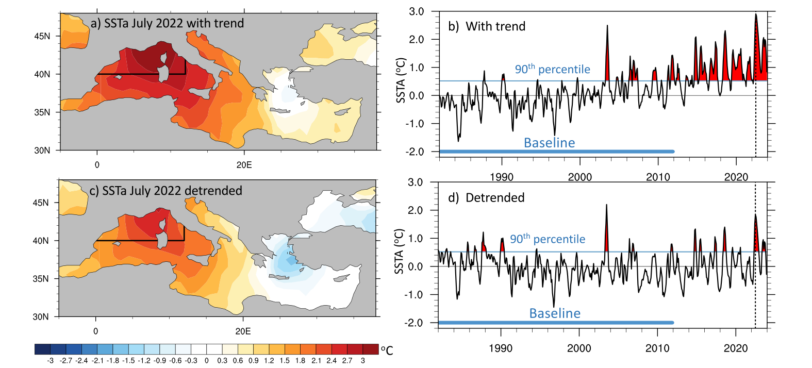
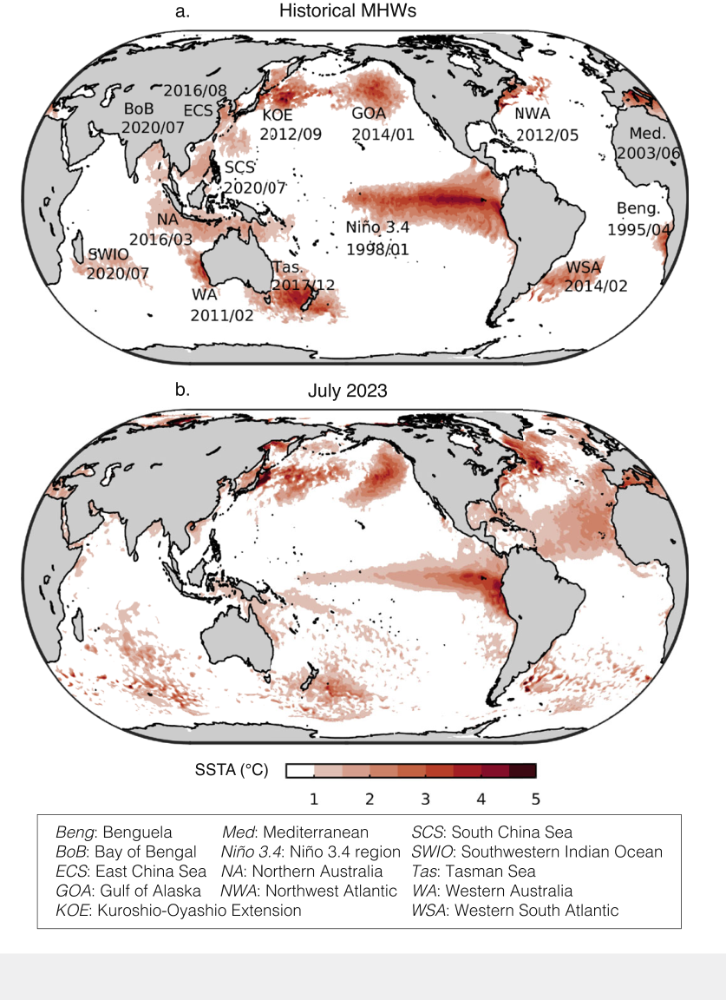
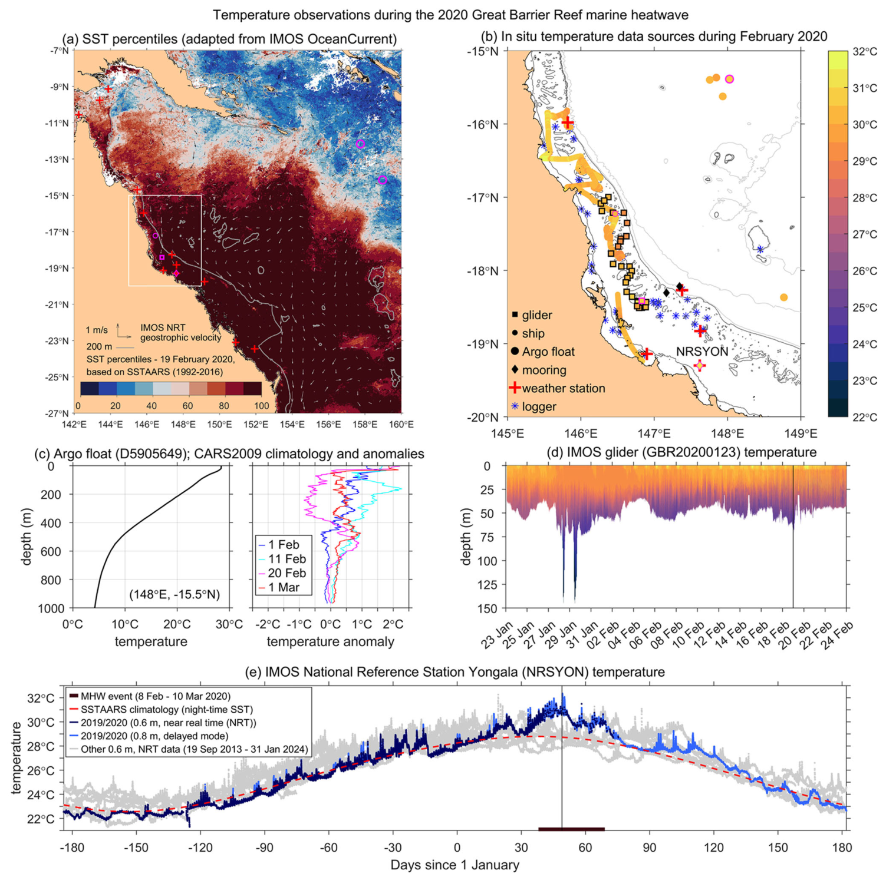
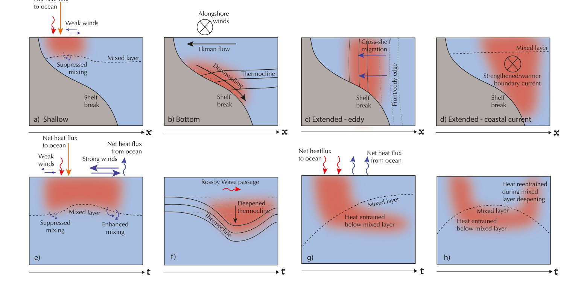
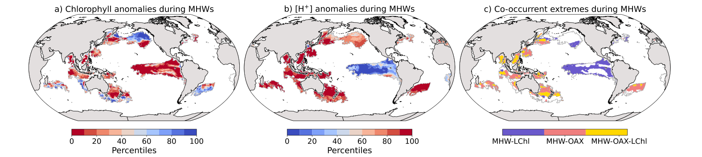
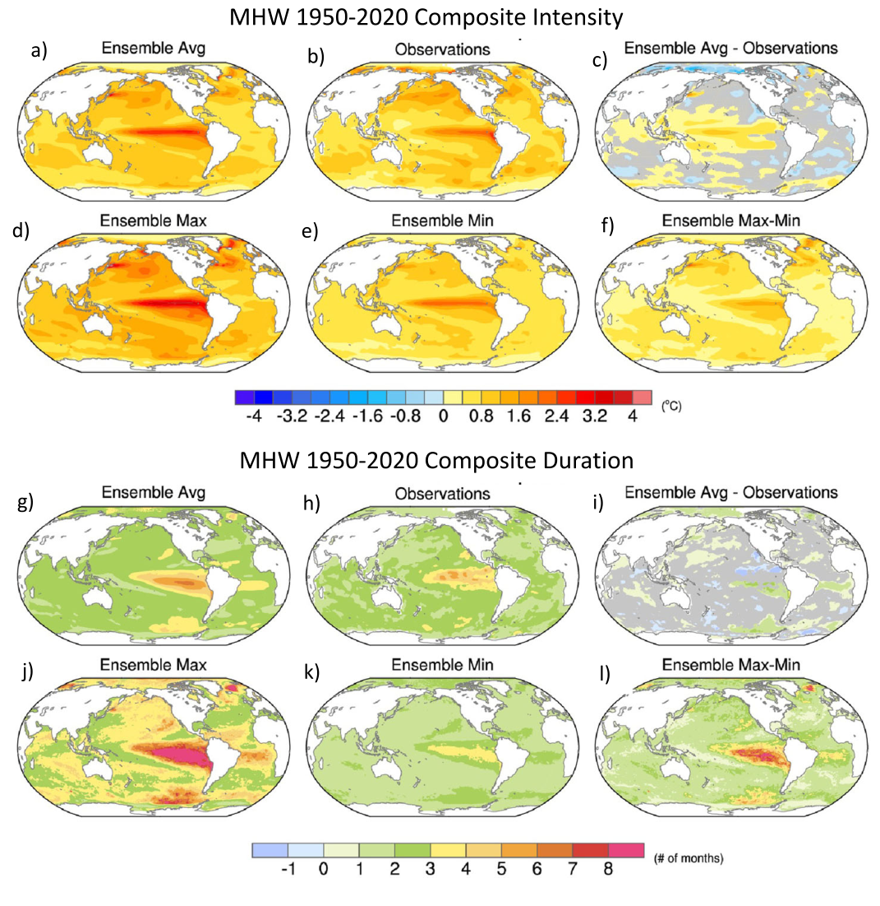
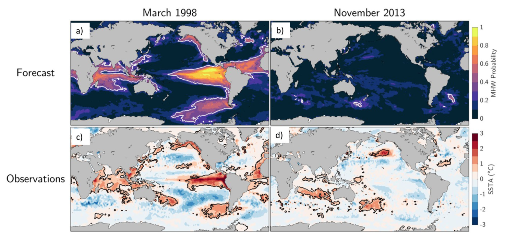
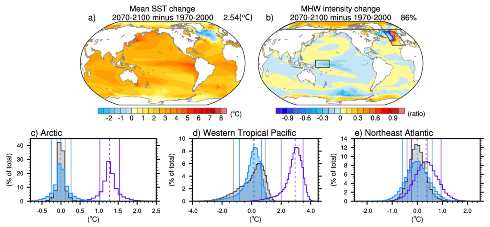

变化气候背景下海洋热浪的全球概览
A global overview of marine heatwaves in a changing climate
Antonietta Capotondi；Regina R. Rodrigues；Alex Sen Gupta；Jessica A. Benthuysen；Clara Deser；Thomas L. Frölicher；Nicole S. Lovenduski；Dillon J. Amaya；Natacha Le Grix；Tongtong Xu；Juliet Hermes；Neil J. Holbrook；Cristian Martinez-Villalobos；Simona Masina；Mathew Koll Roxy；Amandine Schaeffer；Robert W. Schlegel；Kathryn E. Smith；Chunzai Wang
Capotondi, Antonietta; Rodrigues, Regina R.; Sen Gupta, Alex; Benthuysen, Jessica A.; Deser, Clara; Frölicher, Thomas L.; Lovenduski, Nicole S.; Amaya, Dillon J.; Le Grix, Natacha; Xu, Tongtong; Hermes, Juliet; Holbrook, Neil J.; Martinez-Villalobos, Cristian; Masina, Simona; Roxy, Mathew Koll; Schaeffer, Amandine; Schlegel, Robert W.; Smith, Kathryn E.; Wang, Chunzai
摘要
Abstract
海洋热浪已经对世界海洋广大区域的海洋生态系统产生深远影响，因此有必要增进对其动力学和可预报性的认识。
Marine heatwaves have profoundly impacted marine ecosystems over large areas of the world oceans, calling for improved understanding of their dynamics and predictability.
本文对这一活跃研究领域近期取得的重大进展进行批判性综述，内容包括此类极端事件的三维结构与演变、驱动因素、与海洋及陆地上其他极端事件的联系、未来预估，以及对其可预报性和当前预报技巧的评估。
Here, we critically review the recent substantial advances in this active area of research, including the exploration of the three-dimensional structure and evolution of these extremes, their drivers, their connection with other extremes in the ocean and over land, future projections, and assessment of their predictability and current prediction skill.
要在海洋热浪及其影响的预报与预估方面取得进展，就需要在整个海洋深度范围以及相关的空间、时间尺度上，更完整地理解这类极端事件的形成机制，并需要能够真实刻画这些尺度上主导机制的模式。
To make progress on predicting and projecting marine heatwaves and their impacts, a more complete mechanistic understanding of these extremes over the full ocean depth and at the relevant spatial and temporal scales is needed, together with models that can realistically capture the leading mechanisms at those scales.
持续运行的观测系统以及能够迅速部署的测量平台，对于全面刻画事件特征、同时记录变化气候背景下这类极端事件及其影响的演变性质，均不可或缺。
Sustained observing systems, as well as measuring platforms that can be rapidly deployed, are essential to achieve comprehensive event characterizations while also chronicling the evolving nature of these extremes and their impacts in our changing climate.
引言
Introduction
近几十年来，海洋极端高温事件与世界各地海洋生物、生态系统及依赖它们的人类产业所遭受的更强、更频繁的影响相关[1,2,3]。
In recent decades, episodes of warm ocean temperature extremes have been associated with more intense and frequent impacts on marine organisms, ecosystems and reliant human industries around the world[1,2,3].
类比大气中的热浪，这些海洋极端温度事件被称为“海洋热浪”（MHWs）[4,5]。
By analogy with their atmospheric counterpart, these extreme ocean temperature events have been termed “marine heatwaves” (MHWs)[4,5].
框 1 展示了其中一些最突出的事件，以及 2023 年北半球夏季史无前例的增暖。
Some of the most prominent events, together with the unprecedented warming during the boreal summer of 2023 are presented in Box 1.
海洋热浪会影响区域气候现象，并且往往对海洋环境造成重大影响。
MHWs influence regional climate phenomena and often drive substantial impacts on the marine environment.
例如，已有研究发现，印度洋海洋热浪能够调节印度次大陆的季风风场和降雨，从而影响该地区的水安全与粮食安全[6]。
For example, MHWs in the Indian Ocean have been found to modulate the monsoon winds and rains over the Indian subcontinent, impacting water and food security over the region[6].
海洋热浪与热带气旋相互作用并使其增强，令其更具破坏性[7,8,9,10]。
MHWs interact with and intensify tropical cyclones, making them more destructive[7,8,9,10].
海洋热浪的生物学影响包括无脊椎动物、鱼类、鸟类及海洋哺乳动物的大规模死亡事件[1,11,12,13]、珊瑚白化[14,15]、基础物种衰退[3,16,17]，以及整个生态系统的重组[18,19]，并带来深远的社会经济影响[20]。
Biological MHW impacts include mass mortality events in invertebrates, fish, birds and marine mammals[1,11,12,13], coral bleaching[14,15], declines in foundation species[3,16,17] and entire ecosystem restructuring[18,19], with far-reaching socioeconomic impacts[20].
近期的综述和观点文章[13,21,22]概述了在认识海洋热浪的特征、驱动因素和可预报性，以及其经济影响方面取得的重要进展。
Recent reviews and perspectives[13,21,22] have outlined major steps forward in understanding MHW characteristics, drivers, and predictability, along with the economic impacts they cause.
然而，在这一迅速发展的领域，更新的研究不仅为海洋热浪提供了新认识，也提出了重要的新问题与研究方向。
However, in this rapidly evolving field, more recent research has provided new insights into MHWs, while generating important new questions and research avenues.
尽管海洋热浪研究主要关注海表极端温度，但次表层极端温度可能比相应的表层事件更强、持续更久[23,24,25,26,27]。
Although MHW research has primarily considered temperature extremes at the ocean surface, subsurface temperature extremes may be more intense and longer-lasting than their surface counterparts[23,24,25,26,27].
鉴于生命广泛分布于整个水柱，必须密切观测次表层海洋热浪，理解其机制，并对其进行有技巧的预报。
Given the prevalence of life throughout the water column, subsurface MHWs need to be closely observed, mechanistically understood, and skillfully predicted.
此外，虽然海洋热浪的物理特征研究主要关注大尺度事件（框 1），当前研究也已扩展到更局地的沿海区域、边缘海和峡湾[28,29,30,31]，这些地区的海洋热浪正对当地生态和沿海社区产生不利影响[3,16]。
In addition, while the physical characterization of MHWs has mainly focused on large-scale events (Box 1), MHWs are now also studied in more localized coastal areas, marginal seas, and fjords[28,29,30,31], where they are negatively impacting the local ecology and coastal communities[3,16].
研究也越来越多地将海洋热浪与其他极端状况结合考察，例如高酸度或低氧[32,33]、极端海平面[34]、洪水[35]、干旱[36]、灾害性天气事件[37]，乃至邻近陆地上的热浪[38]。
MHWs are also increasingly being examined along with other extreme conditions, like high acidity or low-oxygen[32,33], sea level extremes[34], floods[35], droughts[36], severe weather events[37] or even terrestrial heat waves over the adjacent land[38].
这些“复合事件”给海洋生物和人类社会带来多重胁迫。
These “compound events” act as multiple stressors for marine life and societies.
能够提前数天至数个季节预报海洋热浪与复合事件，是利益相关方开展准备和减轻影响工作的关键[39]。
The ability to predict MHWs and compound events from days to seasons in advance is key for stakeholder preparation and mitigation efforts[39].
有技巧的预报要求增进对海洋热浪驱动因素的理解，以评估其可预报性，同时要求预报系统能够真实刻画支撑这种可预报性的过程[21,40,41]。
Skillful forecasts require enhanced understanding of MHW drivers to assess their predictability, and prediction systems that realistically capture the processes underpinning that predictability[21,40,41].
尽管预报工作已经取得进展[42,43]，通过更深入地认识不同海洋热浪驱动因素的相对作用，以及改进动力模式，预报仍可能得到进一步提升；这些模式改进包括评估海洋热浪预报对模式分辨率的敏感性[44,45,46,47]。
While progress has been made in prediction activities[42,43], additional improvements could be achieved through a deepened understanding of the relative roles of different MHW drivers, and dynamical model improvements, which include an assessment of the sensitivity of MHW forecasts to model resolution[44,45,46,47].
随着人为气候变化推动海洋持续变暖[48,49]，在非平稳条件下定义海洋热浪正变得越来越困难，因为在增暖足够强的地区，常用定义将导致一种永久的海洋热浪状态[50]（图 1）。
As the oceans continue to warm with anthropogenic climate change[48,49], defining MHWs under non-stationary conditions becomes increasingly challenging, as commonly used definitions will lead to a permanent MHW state in areas experiencing sufficient warming[50] (Fig. 1).
此外，将气候系统内部过程与源自人为作用的过程区分开来[51,52]，对于从机制上认识海洋热浪的本质、评估其可预报性及未来变化至关重要。
In addition, separating the processes internal to the climate system from those of anthropogenic origin[51,52] is key to the mechanistic understanding of the nature of MHWs and the assessment of their predictability and their future changes.
图 1：趋势对海洋热浪定义的影响。
Fig. 1: Influence of trends on marine heatwave definition.

a NOAA-OISSTv2.1[76]给出的 2022 年 7 月（b 中虚线）地中海相对于 1982—2011 年气候态的海表温度异常（SSTA，°C）。
a SST anomaly (SSTA, °C) relative to the 1982–2011 climatology over the Mediterranean during July 2022 (dashed line in b) from NOAA-OISSTv2.1[76].
异常中包含趋势信号。
Anomalies include the trend signal.
b 地中海西部区域平均的月海表温度异常（已去除季节循环）；该区域由黑线与海岸线围成，即 40°N 以北、12°E 以西。
b Monthly SST anomalies (seasonal cycle removed) averaged over the western Mediterranean (the region bounded by the black lines and the coast, i.e., north of 40°N, and west of 12°E).
c 同（a），但海表温度异常已经过线性去趋势处理。
c As in (a), but with SST anomalies linearly detrended.
d 同（b），但异常已经过线性去趋势处理。
d as in (b), but with anomalies linearly detrended.
在（b）和（d）中，蓝色水平粗线表示用于计算气候态并定义第 90 百分位值的基准期；蓝色水平细线表示该百分位阈值，为简化起见，这里将其设为不随季节变化。
In (b) and (d), the thick blue horizontal line indicates the baseline period used to compute the climatology and to define the 90th percentile (thin horizontal blue lines), which for simplicity is chosen to be seasonally independent.
存在趋势时，地中海西部在记录末期倾向于处于准永久的海洋热浪状态；去除趋势则凸显了 2015 年以来的离散事件，也揭示出记录初期更显著的极端事件。
In the presence of a trend, the western Mediterranean tends to be in a quasi-permanent MHW state toward the end of the record, while removal of the trend highlights isolated events since 2015, and also reveals more pronounced extreme events at the beginning of the record.
无论是否包含趋势信号，2003 年北半球夏季的海洋热浪都表现为一次极其强烈的事件。
The MHW in the boreal summer of 2003 emerges as an extremely intense event, irrespective of the presence of a trend signal.
本文在既有综述[13,21,22]基础上，重点介绍上述海洋热浪研究的新兴领域，包括：在气候变化背景下，对表层和次表层海洋热浪的定义及检测进行批判性重新评估；观测需求及新兴“观测”策略；为改进预报而对表层与次表层海洋热浪驱动因素取得的新认识；复合事件及其预报；以及利用经验方法和先进模式系统评估未来海洋热浪预估的研究。
This article extends previous reviews[13,21,22] by highlighting the new emerging areas in MHW research outlined above, including: a critical re-evaluation of MHW definitions and their detection, both at the surface and in the subsurface, in the presence of climate change; observational needs and new emerging “observing” strategies; advances in the understanding of both surface and subsurface MHW drivers to aid prediction efforts; compound events and their prediction; and investigations to assess future MHW projections using empirical approaches and state-of-the-art modeling systems.
本综述还展望了在变化气候背景下，增进海洋极端事件认识并提升预测能力的、有前景的新研究方向。
This review also provides a perspective on new and promising avenues for advancing our understanding and prediction capabilities of ocean extremes in the context of our changing climate.
框 1 历史海洋热浪与史无前例的 2023 年夏季
Box 1 Historical marine heatwaves and the unprecedented summer of 2023
近几十年来，出现了多次强度特别高、持续时间特别长、影响特别大的海洋热浪（框内图的上面板展示了各次海洋热浪峰值月份超过 1 °C 的海表温度异常）。
Recent decades have witnessed the occurrence of MHWs that were particularly intense, long-lasting and impactful (top panel of Box figure, showing SST anomalies above 1 °C at the peak month of each MHW).
这些最突出的海洋热浪通常在不同时间出现在不同区域。
These most prominent MHWs generally occurred in different regions at different times.
然而，2023 年北半球夏季的全球月平均海表温度创下了仪器观测记录开始以来的新高[178]，很大比例的海洋经历了极端状况；2023 年 7 月广泛分布、超过第 90 百分位值（以 1982—2011 年为基准期）的海表温度异常[76]清楚地体现了这一点（框内图的下面板）。
However, the boreal summer of 2023 recorded global monthly-mean SSTs at record high since the beginning of the instrumental record[178], with a large fraction of the ocean experiencing extreme conditions, as illustrated by the widespread SST anomalies[76] above the 90th percentile (1982–2011 baseline) during July 2023 (bottom panel of Box figure).
尤其是，北大西洋（0°—60°N，0°—80°W）平均温度在 2023 年 7 月和 9 月的部分时段，增暖幅度超过了 1980—2011 年期间的四个标准差[179]，全年平均值比 2022 年高约 0.23 °C[180]。
In particular, average North Atlantic (0°–60°N, 0°–80°W) temperatures reached levels of warming that exceeded four standard deviations of the 1980–2011 period during parts of July and September 2023[179], with an annual average ~0.23 °C higher than in 2022[180].
是什么造成了这次史无前例的全球极端事件？
What caused this unprecedented global extreme?
可以推测，2023 年正在发展的厄尔尼诺，已通过其海表温度型态对大气静力稳定度和低层云的影响，引起辐射加热增加[181]。
The developing El Niño in 2023 can be expected to have caused an increase in radiative heating due to the influence of the El Niño SST pattern on atmospheric static stability and low-level clouds[181].
此外，厄尔尼诺可以改变大气环流，并使世界不同区域产生海表温度异常，例如东北太平洋[110]和热带北大西洋[182]；不过，热带北大西洋的增暖通常发生在厄尔尼诺事件峰值之后，而不是在其发展阶段。
In addition, El Niño can alter the atmospheric circulation and cause the development of SST anomalies in different regions of the world, like the northeast Pacific[110] and the tropical North Atlantic[182], although warming in the tropical North Atlantic usually occurs after the peak of an El Niño event rather than during its development phase.
大西洋增暖的空间型态与北大西洋涛动的负位相一致[183]，而该涛动在 2023 年 4 月中旬至 5 月中旬，以及 7 月的大部分时间，确实处于强负位相。
The pattern of Atlantic warming is consistent with the negative phase of the North Atlantic Oscillation[183], which was indeed strongly negative from mid-April to mid-May and most of July 2023.
2023 年的增暖集中在近表层水体[180]，这表明上层海洋层结可能发挥了重要作用：它阻止海洋吸收的多余热量有效地向下分配，从而增强表层增暖；这种层结可能受到大尺度气候模态的调节。
The concentration of the 2023 warming in near-surface waters[180] suggests that upper ocean stratification, possibly modulated by large-scale climate modes, may have played an important role in preventing the excess heat absorbed by the ocean from being effectively distributed downward, resulting in enhanced surface warming.
关于 2023 年史无前例增暖的其他假说还包括：输送至大西洋西部的撒哈拉沙尘减少，以及 2020 年国际协定实施后船舶排放减少，导致辐射强迫增加[184]；不过，这些因素对大西洋增暖的影响仍有待证实。
Other hypotheses regarding the unprecedented 2023 warming include a decreased transport of Saharan dust to the western Atlantic, and a reduction of ship emissions following a 2020 international agreement, leading to an increase in radiative forcing[184], although the influence of these factors on Atlantic warming has yet to be demonstrated.
另一种提出的假说涉及汤加洪阿汤加—洪阿哈阿帕伊火山 2022 年 1 月喷发的后续影响[185]。
Another proposed hypothesis pertains to the aftermath of the January 2022 Hunga Tonga-Hunga Ha’apai volcanic eruption in Tonga[185].
此次喷发释放了具有冷却效应的气溶胶，同时向平流层释放了具有增暖效应的水汽。
This eruption emitted aerosols, which had cooling effects, while simultaneously releasing stratospheric water vapor, which had warming effects.
然而，估计这些因素至多只能解释几百分之一摄氏度的微弱净冷却，而非增暖[185]。
However, these factors are estimated to explain, at most, a marginal net cooling of a few hundredths of a degree, rather than a warming[185].
除上述主要为自然因素的驱动作用外，据估计，海洋吸收了与全球变暖相关的多余热量的约 90%[161]，使全球海洋上层 2000 m 在 1958—2023 年期间平均每年增加约 6.6 × 10²¹ J 的热量[180]。
In addition to these mostly natural drivers, the ocean is estimated to have absorbed about 90% of the excess heat associated with global warming[161], causing an average warming of the upper 2000 m of the global ocean of ~6.6 × 10²¹ J/year over 1958–2023[180].
因此，气候变化极有可能对 2023 年海洋热浪的强度和广泛覆盖范围作出了贡献。
Thus, it is very likely that climate change has contributed to the intensity and widespread coverage of the 2023 MHWs.

海洋热浪的定义
Defining a marine heatwave
定义海洋热浪涉及多项选择，而每种选择都会带来具有不同含义的结果。
Defining a MHW involves multiple choices, each leading to outcomes with distinct implications.
这些选择可能源于理解海洋热浪物理驱动因素或影响的需要，也可能受可用数据特征的约束，例如记录长度或时间分辨率。
These choices may be motivated by the need to understand the physical drivers or impacts of a MHW, or they can be constrained by the characteristics of the available data, like record length or temporal resolution.
为简便起见，海洋热浪通常采用局地定义来分析[53]。
For simplicity, MHWs have typically been analyzed using local definitions[53].
然而，海洋热浪具有随时间演变的三维结构，因此其他方法正不断出现[25,54,55]，以便随时间跟踪空间上广泛分布的表层或次表层事件。
However, since MHWs have a three-dimensional structure that evolves over time, other approaches are emerging[25,54,55] to facilitate the tracking of extended surface or subsurface events over time.
在过去十年中，大多数研究采用了共同的海洋热浪定义框架。
Over the past decade, the majority of studies have adopted a common framework for defining MHWs.
按照广泛使用的 Hobday 等人[53]的框架，当某一地点的日海表温度异常超过随季节变化的气候态第 90 百分位阈值，并持续五天或更长时间时，即发生一次海洋热浪；其中持续不超过两天的低于阈值的短暂回落会被忽略。
Following the widely used Hobday et al.[53] framework, a MHW occurs at a given location when daily sea surface temperature anomalies exceed the seasonally-varying 90th percentile climatology for five days or more (with dips below this threshold for two days or less ignored).
气候态第 90 百分位值通常基于一个固定参考时段，即“基准期”。
The 90th percentile climatology is typically based on a fixed reference period, or “baseline”.
这些阈值标准是类比大气热浪而选择的[56]，并不一定由海洋环境中的特定影响所决定。
These threshold criteria were chosen in analogy with atmospheric heatwaves[56], and were not necessarily dictated by specific impacts in the marine environment.
因此，研究也采用了其他定义[22]，例如使用第 99 百分位值[57]、以月数据[41,42,51,52,58,59]代替日数据（图 1）、采用年最高温度[60]，或计算超过固定阈值的累计温度；最后一种标准常用于珊瑚白化监测与预测[61,62,63]。
As such, other definitions have also been employed[22], including, for example, definitions using the 99th percentile[57], approaches using monthly data[41,42,51,52,58,59] instead of daily data (Fig. 1), annual maximum temperatures[60], or cumulative temperatures exceeding fixed thresholds, a criterion commonly used for coral bleaching monitoring and prediction[61,62,63].
将生物学影响信息纳入定义的尝试，促成了海洋热浪危险性指数的建立，其中针对特定物种的指标，是利用绝对温度并与利益相关方共同开发的[64]。
Attempts to incorporate information on biological impacts has led to the creation of MHW hazard indices, where species-tailored metrics were co-developed with stakeholders using absolute temperatures[64].
采用固定基准期时，随着海洋变暖，海洋热浪状况将越来越常见[57,65]，并可能在增暖程度高的地区形成“永久”的海洋热浪状态[10]（图 1）。
With a fixed baseline, MHW conditions will become increasingly common as the ocean warms[57,65], potentially leading to a “permanent” MHW state in regions experiencing a high level of warming[10] (Fig. 1).
这些特征的变化可能反映此类事件对某些海洋生物构成的风险，尤其是适应速度较慢的生物[13]。
These changing characteristics may reflect the risk these events pose to some marine organisms, particularly those with slow adaptation rates[13].
然而，采用固定基准期会限制我们区分缓慢的气候变化相关过程与较快过程的能力；后者与气候内部变率模态或天气尺度状况有关[40]，这会影响对事件可预报性的理解及对其预报技巧的评估[66]。
However, considering a fixed baseline limits our ability to distinguish the slow climate change-related processes from the faster processes associated with internal modes of climate variability or synoptic weather conditions[40], with implications for understanding events’ predictability and assessing their prediction skill[66].
因此，近期有研究呼吁，在定义海洋热浪时，通过对温度时间序列去趋势[67]或采用滑动基准期[68]来去除平均增暖的影响，尤其是在未来预估中。
Thus, there has been a recent call to remove the effects of mean warming when defining MHWs by detrending temperature time series[67] or using a shifting baseline period[68], especially for future projections.
为了定义海洋热浪特征，究竟采用保持固定还是随时间变化的温度阈值，最终将取决于所研究的应用问题、与以往研究保持一致的重要性，以及数据记录的特征。
To define MHW characteristics, the decision to use a temperature threshold that remains fixed or changes over time will ultimately depend on the application being studied, the importance of maintaining consistency with past studies and the characteristics of the data record.
鉴于卫星反演的海表温度（SST）资料可用，许多海洋热浪研究依赖始于 20 世纪 80 年代初的逐日格点卫星数据。
Given the availability of satellite-derived sea surface temperature (SST), many MHW studies have relied on daily gridded satellite data, starting in the early 1980s.
但是，不同数据集的时间和空间分辨率、插值精度各不相同，资料还可能零散分布并存在缺测。
However, different datasets will have varying temporal and spatial resolutions, different interpolation accuracies, and may be sporadic and contain data gaps.
对于不同数据集和特定应用，修改后的海洋热浪定义可能更合适。
Modified MHW definitions may be appropriate for different datasets and specific applications.
例如，在海洋记忆较长的区域（如热带太平洋），或在研究重点为长期持续的海洋热浪时，可以采用月平均值[20,69]。
For instance, monthly means can be used in regions characterized by long ocean memory (e.g., the tropical Pacific), or when the focus is on long-lasting MHWs[20,69].
在所有定义中，都需要考虑相关动力过程的时间和空间尺度。
In all definitions, the temporal and spatial scales of the dynamics at play need to be considered.
从空间上看，海洋热浪能够覆盖广阔的水平区域，并深入水柱内部。
Spatially, MHWs can cover large horizontal areas and extend deep into the water column.
海洋热浪的结构与其驱动因素有关，因此需要纳入对事件的刻画。
MHW structure is linked to their drivers and needs to be included in their characterization.
虽然评估海洋热浪预估的研究已经考虑了水平范围[57,70]，但当前也已开发出一系列新技术，用于跟踪表层[54,55,71]或三维空间[25,72]中相互连通的海洋热浪区域，并考虑这些区域的分裂与合并。
While horizontal extent has been considered in studies assessing MHW projections[57,70], a number of new techniques have been developed to track connected MHW regions at the surface[54,55,71] or in three-dimensional space[25,72], accounting for the splitting and merging of MHW regions.
这些技术将海洋热浪视为随空间和时间演变的对象，从而呈现其影响范围。
These techniques treat MHWs as objects that evolve in space and time providing an illustration of their areas of influence.
类似算法也被用于东北太平洋的海洋酸化极端事件[73]，从而能够评估其影响的严重程度。
Similar algorithms have also been applied to ocean acidification extremes in the Northeast Pacific[73], allowing an assessment of the severity of their impacts.
截至目前，这些跟踪算法纯属统计方法，尚未纳入事件动力学信息；不过，跟踪方法将为认识海洋热浪系统随时间演变的范围提供新机会，并有助于识别其背后的动力过程。
To date, these tracking algorithms are purely statistical and do not incorporate information about event dynamics, but the use of tracking will provide new opportunities for understanding the extent of MHW systems as they evolve through time, and facilitate the identification of their underlying dynamics.
用于刻画海洋热浪的观测
Observations for characterizing marine heatwaves
观测是刻画和理解海洋热浪的基础。
Observations are the foundation for characterizing and understanding MHWs.
一个多世纪以来，人们开发了多种测量海洋温度的方法，从原位固定与移动平台（包括被动和主动平台）到遥感方法，不一而足（框 2；Oliver 等人[22]的表 1）。
For more than a century, a diversity of ways to measure ocean temperature have been developed from in situ stationary and moving platforms (both passive and active) to remotely sensed methods (Box 2; Table 1 of Oliver et al.[22]).
观测海洋热浪的挑战在于，以高时间分辨率开展长期（数十年）海洋温度测量，从而定义极端事件的阈值，同时考虑温度在不同时间尺度上的固有变率。
The challenge for observing MHWs is to measure ocean temperature at high temporal resolution and over a long period (decades) to define a threshold for extremes, while accounting for the inherent variability of temperature at different timescales.
对全球海洋热浪认识的进展，很大程度上依赖融合了近表层原位资料的卫星反演海表温度产品；这些原位资料由表面漂流浮标和船舶走航系统提供，融合产品的例子包括业务海表温度与海冰分析系统（OSTIA）[74,75]产品，以及 NOAA 逐日最优插值海表温度 v2.1 数据集[76]。
Advances in understanding MHWs globally have relied largely on satellite derived sea surface temperature products blended with near-surface in situ data provided from surface drifting buoys and ship underway systems (e.g., products such as the Operational SST and Ice Analysis (OSTIA) system[74,75] and NOAA Daily Optimum Interpolation SST v2.1 dataset[76]).
另一方面，水样和锚系提供的长期原位温度测量，虽不能代表大范围区域，却对于刻画日时间尺度上的温度极端至关重要。
On the other hand, long-term in situ temperature measurements from water samples and moorings have been crucial for characterizing temperature extremes at the daily timescale, although not representative of large areas.
世界各地分布着一些沿海观测地点，它们在卫星时代之前就已记录海洋温度[65,77,78,79]，从而使我们能够认识局地海温的长期趋势及极端温度发生频率的变化。
There are coastal locations distributed worldwide where ocean temperatures have been recorded since before the satellite era[65,77,78,79], providing insight into long-term trends of local ocean temperatures and changes in the frequency of temperature extremes.
只有少数站点开展了贯穿水柱的持续测量，而这些测量对于理解次表层海洋热浪的特征与驱动因素至关重要[23,24,80]。
Only a few sites include sustained measurements extending through the water column, which have been crucial to understand subsurface MHW characteristics and drivers[23,24,80].
在全球范围内，Argo 浮标网络已连续二十多年[82]采样上层 2000 m 海洋温度[27,81]，为研究次表层事件带来了变革性的能力。
Globally, the network of Argo floats has provided a transformative capability to study subsurface events by sampling ocean temperatures[27,81] over the upper 2000 m for more than two decades[82].
然而，使用原始 Argo 剖面面临重大的分析挑战，而基于 Argo 的格点数据集主要提供月时间分辨率的资料，且在大陆架和边缘海缺乏覆盖。
However, using raw Argo profiles poses major analytical challenges, and Argo-derived gridded datasets are primarily available at monthly time resolution and lack coverage over continental shelves and marginal seas.
尽管如此，多种观测平台的结合，例如 Argo 与沿海锚系[29]相结合，正被证明对全面认识海洋热浪极具价值（框 2）。
Nevertheless, the combination of different observational platforms, for example, Argo and coastal moorings[29], is proving extremely valuable to achieve a comprehensive view of MHWs (Box 2).
为克服观测稀疏和不一致的问题，并将海洋热浪分析延伸至卫星时代之前，许多研究利用海洋再分析——即通过资料同化受到观测约束的模式——来理解海洋热浪的驱动因素与动力过程[41,83,84]，并分析表层和次表层海洋热浪的特征[25,26]。
To overcome issues associated with sparse and inconsistent observations, and extend analyses of MHWs back to the pre-satellite era, many studies have leveraged ocean reanalyses—models constrained by observations through data assimilation—to understand MHW drivers and dynamical processes[41,83,84], and analyze MHW characteristics at both the ocean surface and in the subsurface[25,26].
海洋再分析在时间和空间上提供均匀的数据覆盖，有时还具有高分辨率，例如 GLORYS12v1[85]，因而也有助于刻画大陆架上的海洋热浪[86,87]。
Ocean reanalyses offer uniform data coverage in time and space, in some cases at high-resolution (e.g., GLORYS12v1[85]), thus also facilitating the characterization of MHWs on continental shelves[86,87].
再分析产品会受到模式误差和偏差的影响，对过去几十年海洋热浪的表征也可能彼此不同[88]。
Reanalysis products are subject to model errors and biases and may differ in their representation of MHWs over past decades[88].
因此，利用它们研究极端事件时应保持谨慎，尤其是在同化观测有限的地区，例如深海或陆架区域。
Thus, they should be used with care to study extremes, especially in areas where limited observations were assimilated (e.g., the deep ocean or shelf regions).
与温度等物理量相比，生物地球化学性质等一些变量受到的观测约束要弱得多。
Some variables, like biogeochemical properties, are much less constrained by observations than physical quantities like temperature.
在较长时间尺度上，增加极端事件样本量的一种有效方法，是使用以观测训练的经验模型，例如线性逆模型（LIMs[89]），生成跨越数千年的合成时间序列。
At longer timescales, a useful approach for increasing the sample size of extreme events is to use empirical models trained on observations, like Linear Inverse Models (LIMs[89]), to produce multi-millennia synthetic time series.
这些合成数据具有与观测相似的统计性质，包括协方差、自相关和事件演变[35,51,58]，并允许探索与训练数据的动力学和噪声结构一致的、可能出现的所有海洋热浪情形。
These synthetic data share similar statistical properties (covariances, autocorrelation, event evolution) with observations[35,51,58] and allow exploration of the full range of possible MHW realizations that are consistent with the dynamics and noise structure of the training data.
框 2 用于监测海洋热浪的综合观测系统
Box 2 An integrated observing system for monitoring MHWs

近实时海洋温度观测，以及便于获取的表层和次表层状况可视化资料，对于监测海洋热浪并恰当应对相关生态风险至关重要。
Near real time ocean temperature observations and readily accessible visualizations of surface and subsurface conditions are critical for monitoring MHWs and to properly respond to the associated ecological risks.
滑翔机能够提供一系列海洋学变量的近实时数据，这些变量对于评估海洋热浪对海洋环境的影响十分重要。
Gliders provide near real time data for a suite of oceanographic variables important for assessing MHW impacts on the marine environment.
澳大利亚的一个实例展示了，如何通过澳大利亚综合海洋观测系统（IMOS）的事件驱动采样分系统，在一次海洋热浪期间使用海洋滑翔机连续数周对水柱进行采样（框内图 d 面板）。
An example from Australia highlights how ocean gliders have been used to sample the water column during a MHW over several weeks, through Australia’s Integrated Marine Observing System (IMOS) Event Based Sampling sub-facility (panel d of Box figure).
此外，将不同类型的温度观测相对于同一参考时段气候态进行比较和组合，可以全面呈现海洋热浪在时间和空间上的演变[186]。
In addition, combining different types of temperature observations relative to climatologies over the same reference period offers a comprehensive view of a temporally and spatially evolving MHW[186].
框内图以澳大利亚东北部近海 2020 年大堡礁海洋热浪为例，展示了这种多平台系统。
We illustrate such a multi-platform system in the Box figure for the 2020 Great Barrier Reef MHW off northeast Australia.
就整个大堡礁而言，海洋热浪强度于 2020 年 2 月 19 日达到峰值[187,188]。
Over the whole Great Barrier Reef, the MHW intensity peaked on 19 February 2020[187,188].
当天，根据 IMOS 六日夜间多传感器 L3S 格点海表温度[189,190]相对于《澳大利亚区域海域海表温度图集》（SSTAARS[191]）中该年历日 1992—2016 年气候态分布计算的海表温度百分位值，极暖的表层水体覆盖了大堡礁和珊瑚海的广大区域；框内图 a 面板还标出了当天其他近实时测量平台的位置。
On that day, extremely warm surface waters encompassed a wide extent of the Great Barrier Reef and Coral Sea, based on sea surface temperature (SST) percentiles obtained from the IMOS 6-day night-time multi-sensor L3S gridded SST[189,190] relative to the 1992–2016 climatological distributions for that day of the year from the SST Atlas of Australian Regional Seas (SSTAARS[191]; panel a of the Box figure, also indicating the location of other near real time measuring platforms on that day).
2020 年 2 月，几类监测平台在 a 面板白框所示区域收集了温度数据，如 b 面板所示。
Several types of monitoring platforms collected temperature data during February 2020 over the region defined by the white box in panel a, as illustrated in panel b.
澳大利亚海洋科学研究所（AIMS）的 Cape Ferguson 号科考船，在 2020 年 2 月 7 日（北部）至 2 月 26 日（南部）之间测量了近表层水温[192]；图中小圆点按温度值着色，2020 年 2 月 19 日在 146.47°E、-17.23°N 的位置用粉色边框标出。
The Australian Institute of Marine Science (AIMS) R/V Cape Ferguson measured near-surface water temperatures between 7 February 2020 (north) and 26 February 2020 (south)[192] (small circles shaded with the temperature values, with a pink outline at 146.47°E, -17.23°N for 19 February 2020).
这些近表层温度测量还得到 Argo 浮标观测的补充；b 面板中较大的圆点同样按温度值着色，粉色边框标出了一个 Argo 浮标（5905849）在 2020 年 2 月 20 日的位置[193,194]。
These near-surface temperature measurements were complemented by those from Argo floats (larger circles in panel b, also shaded according to the temperature values), with a pink outline marking the position of one Argo float (5905849) on 20 February 2020[193,194].
该 Argo 浮标位于珊瑚海约 -15.4°N、147.9°E 处，提供了次表层剖面，框内图 c 面板展示了上层 1000 m 的情况。
This Argo float near -15.4°N, 147.9°E in the Coral Sea provided subsurface profiles (shown for the upper 1000 m in panel c of the Box figure).
以 CARS2009 气候态[195]为基准，所有剖面在近表层都存在暖异常，但异常的垂向结构在深层差异很大。
Based on the CARS2009 climatology[195], all profiles had warm anomalies near the surface, but the anomalies’ vertical structure varied considerably at depth.
通过 IMOS 事件驱动采样计划部署了一台滑翔机（GBR20200123），以监测陆架上的海洋热浪[196]。
A glider (GBR20200123) was deployed through IMOS Event Based Sampling to monitor the MHW over the shelf[196].
该滑翔机于 2020 年 1 月 23 日（北部）至 2 月 24 日（南部）穿越大陆架和大陆坡，其路径在 b 面板中按温度着色，同时测量次表层温度（d 面板，色标与 b 面板相同）及一系列生物物理变量。
The glider traversed the continental shelf and slope from 23 January 2020 (north) to 24 February 2020 (south), as indicated by the colored (by temperature) track in panel b, measuring subsurface temperature (panel d, same colorbar as in panel b) and a suite of biophysical variables.
滑翔机在 2 月 19 日的位置由粉色边框的方形标出（b 面板）。
The glider location on 19 February is indicated by the square with the pink outline (panel b).
滑翔机在近表层测得相对较暖的水体，同时揭示出礁间通道和大陆坡上方深处较冷的水体。
The glider measured relatively warm waters near the surface, while revealing cooler waters at depth through reef passages and over the continental slope.
最后，IMOS 的 Yongala 国家参考站（b 面板中标为 NRSYON）提供了近实时和延时模式的近表层温度。
Finally, the IMOS National Reference Station Yongala (labeled NRSYON in panel b) provided near real time and delayed mode near-surface temperatures.
这些数据以 2020 年 1 月 1 日为时间起点绘制于框内图 e 面板，显示近表层温度在 2 月 19 日前后（第 49 天，黑色竖细线）达到最大值，异常超过 +2 °C。
These data are displayed in panel e of the Box figure relative to 1 January 2020, indicating a maximum near-surface temperature around February 19 (day 49, thin black vertical line), with anomalies exceeding +2 °C.
海洋热浪期间的这些测量（e 面板底部的水平线标出了热浪时段），可与该站 2013 年 9 月 19 日至 2024 年 1 月 31 日记录的温度进行比较[197,198]，体现了持续观测对于检测极端事件的重要性。
These measurements during the MHW (marked by the horizontal line at the bottom of panel e), could be compared against the temperatures recorded at this station from 19 September 2013 to 31 January 2024[197,198], indicating the importance of sustained observations for detecting extremes.
这些数据集还由其他固定平台采集的原位水温资料加以补充，包括其他 IMOS 锚系、AIMS 珊瑚礁气象站[199]和珊瑚礁站点[200]，其位置在 b 面板中标出。
These datasets were complemented by in situ water temperature data collected from stationary sources (indicated in panel b) at other IMOS moorings, AIMS reef weather stations[199] and coral reef sites[200].
这些温度测量共同构成了一个综合数据集，用于评估 2020 年大堡礁大规模珊瑚白化事件期间海洋热浪的特征和影响。
Together, these temperature measurements provided a comprehensive dataset for assessing the MHW’s characteristics and impacts during the 2020 GBR mass coral bleaching event.
表层与次表层海洋热浪的驱动因素
Drivers of surface and subsurface marine heatwaves
驱动海洋热浪的过程会影响其持续时间、强度和垂向结构等特征，也是预测其演变的关键。
The processes driving MHWs affect their characteristics, including duration, intensity and vertical structure, and are key for predicting their evolution.
海洋热浪由与天气尺度大气状况相关的局地热通量，或海洋平流和混合过程驱动，并对海洋状态（例如混合层深度）敏感。
MHWs are driven by local heat fluxes associated with synoptic atmospheric conditions or ocean advective and mixing processes, and are sensitive to the ocean state (e.g., mixed layer depth).
这些局地驱动因素本身可能受到大尺度气候变率模态或人为增暖的调节，并随区域和季节而变化。
These local drivers may themselves be modulated by large-scale modes of climate variability or anthropogenic warming, and vary regionally and seasonally.
在热带以外地区，强烈海洋热浪通常与持续的大气高压相关；高压使入射太阳辐射增加、风速降低，从而减少湍流热损失和海洋垂向混合[40,90,91,92,93,94,95]。
In the extra-tropics, intense MHWs are commonly associated with persistent atmospheric highs, resulting in increased insolation and decreased wind speeds that reduce turbulent heat losses and vertical ocean mixing[40,90,91,92,93,94,95].
与之相伴的较浅混合层，还可进一步放大表面热通量造成的增暖[59,83,96,97]。
Associated shallower mixed layers can further amplify the warming from surface heat fluxes[59,83,96,97].
更广泛地看，热收支分析表明，入射太阳辐射增加和蒸发冷却减少通常主导海洋热浪的建立，而其衰减则通常由湍流热损失增加所驱动[98]。
More broadly, heat budget analyses indicate that increased insolation and reduced evaporative cooling typically dominate the build-up of MHWs while decay is commonly driven by increased turbulent heat losses[98].
在边界流区域，异常暖海水平流往往十分重要。
In boundary current regions, anomalous warm oceanic advection is often important.
主要实例包括 2011 年宁加洛厄尔尼诺[5,99,100]，以及长期持续的 2015/16 年塔斯曼海海洋热浪[101,102]。
Key examples include the 2011 Ningaloo Niño[5,99,100] and the long-lived 2015/16 Tasman Sea MHW[101,102].
与大气驱动的事件[21]相比，平流驱动的海洋热浪通常表面积较小，但持续更久[21]，并可能延伸得更深[103]。
Advection-driven MHWs typically have a smaller surface area, but last longer[21] and may reach deeper[103] than atmospherically-driven events[21].
在热带太平洋，与厄尔尼诺—南方涛动（ENSO）相关的海洋热浪由动力过程驱动[104]，而表面热通量在其发生和衰减阶段均对温度异常起阻尼作用[98,105]。
In the tropical Pacific, MHWs associated with El Niño Southern Oscillation (ENSO) are dynamically driven[104], with surface heat fluxes damping temperatures during both the onset and decay phases[98,105].
在西边界流等高能量区域，海洋中尺度涡和曲流经常侵入陆架，能够在较小的时间和空间尺度上影响海洋热浪的发生、强度和持续时间[8,47,81,106]。
In high-energy regions, like western boundary currents, oceanic mesoscale eddies and meanders, which often cross onto the shelf, can contribute to the onset, intensity, and longevity of MHWs at small temporal and spatial scales[8,47,81,106].
海气相互作用的变化，包括对初始海表温度异常作出响应的正云反馈（低云覆盖减少，使入射太阳辐射增强），可能有助于维持和增强这些异常，并使其更加持久；东北太平洋长期持续事件的研究已经记录了这种作用[107,108]。
Changes in atmosphere-ocean interactions, including positive cloud feedbacks (reduction of low-cloud cover leading to enhanced insolation) in response to the initial SST anomalies, may contribute to the maintenance and intensification of those anomalies, and increase their persistence, as documented for long-lasting events in the northeast Pacific[107,108].
大尺度气候变率模态能够通过调节局地驱动因素和初始上层海洋层结，影响区域海洋热浪发生的可能性[6,40]。
Large-scale modes of climate variability can affect the likelihood of MHW occurrences regionally[6,40], by modulating the local drivers and the initial upper-ocean stratification.
例如，2013/14 年西南大西洋海洋热浪受到大气状况的强迫，而这些大气状况与热带印度洋 Madden–Julian 振荡激发的波列有关[36]。
For example, the 2013/14 MHW in the southwest Atlantic was forced by atmospheric conditions associated with a wave train triggered by the Madden-Julian Oscillation in the tropical Indian Ocean[36].
ENSO 事件与全球海洋许多区域海洋热浪频率、强度和持续时间的显著增加相关[65,90]，提高了海洋热浪及海洋酸度极端事件的预报技巧[42,109]，并影响海洋热浪的未来预估[52]。
ENSO events are associated with a significant increase in the frequency, intensity and duration of MHWs across many parts of the global oceans[65,90], enhancing the forecast skill of MHWs and ocean acidity extremes[42,109], and influencing MHW projections[52].
例如，拉尼娜事件期间更强的赤道太平洋东风使印度尼西亚贯穿流和勒温流增强，因而将热带暖水输送至西澳大利亚沿岸，为海洋热浪发展创造有利条件[99]。
For example, stronger equatorial Pacific easterly winds during La Niña events lead to an enhancement of the Indonesian Throughflow and Leeuwin Current, thereby transporting warm tropical waters to the Western Australian coast, creating favorable conditions for the development of MHWs[99].
ENSO 还通过海洋和大气两条途径影响东北太平洋[110]。
ENSO also affects the Northeast Pacific Ocean through both oceanic and atmospheric pathways[110].
然而，ENSO 对海洋热浪的影响可能取决于 ENSO 相关海表温度异常的位置[84]，并可能受到其他年际或年代际变率模态的调节[40,41,94,111,112]。
However, ENSO’s influence on MHWs may depend on the location of ENSO-related SST anomalies[84], and may be mediated by other modes of variability at interannual or decadal timescales[40,41,94,111,112].
例如，预先存在的正印度洋偶极子可以提前最多 20 个月提高西澳大利亚近海海洋热浪发生的可能性和可预报性[112]；而在东北太平洋，海洋热浪的发生受到与太平洋年代际振荡（PDO）相关的低频变率影响[41,111]。
For example, a pre-existing positive Indian Ocean Dipole can increase the likelihood and predictability of MHWs off Western Australia up to 20 months in advance[112], while in the Northeast Pacific, MHW onset is influenced by low-frequency variability related to the Pacific Decadal Oscillation (PDO)[41,111].
热带海盆之间的相互作用[113,114]也能促进海洋热浪发展，2020 年西北太平洋和南海海洋热浪[115,116]以及 2022 年史无前例的西北太平洋事件[117]便是实例。
Interactions between tropical basins[113,114] can also contribute to MHW development, as exemplified by the 2020 MHWs in the Northwest Pacific and South China Sea[115,116] and the unprecedented Northwest Pacific event of 2022[117].
最后，热带太平洋最东部的海洋热浪，即“沿岸厄尔尼诺事件”，主要由北太平洋与南太平洋经向模态的相长叠加引起[118,119]，并不一定与海盆尺度的 ENSO 状况有关[35]。
Finally, MHWs in the far-eastern tropical Pacific (“coastal El Niño events”), result primarily from the constructive interference of the North and South Pacific Meridional Modes[118,119], and are not necessarily related to basin-wide ENSO conditions[35].
评估大尺度驱动因素的相对贡献及其联系，对于充分理解和利用系统固有的可预报性、改进预报至关重要[120]。
Assessing the relative contributions and links between large-scale drivers is critical to fully understand and exploit the inherent system predictability and improve predictions[120].
海洋热浪会延伸至次表层海洋，其深度结构可能因区域[27]、主导驱动机制及局地水深地形而有很大差异，无论是在开阔海洋还是陆架上均是如此。
MHWs extend into the subsurface ocean, with depth structures that may vary considerably depending on the region[27], the leading driving mechanisms and the local bathymetry, whether in open ocean or on the shelf.
海洋热浪可以局限于混合层内，即“浅层海洋热浪”，由增强的海气热通量、海洋平流或减弱的风致湍流混合驱动（图 2a、e）；也可以深入混合层以下很远的深度[27]。
MHWs can be confined to the mixed layer (“shallow MHWs”), driven by enhanced air-sea heat fluxes, ocean advection or reduced wind-induced turbulent mixing (Fig. 2a, e), or they can penetrate well below the mixed layer[27].
在浅水沿海区域，由于暖涡和西边界流曲流侵入陆架（图 2c），或沿岸流的暖平流作用（图 2d），海洋热浪甚至能延伸至海底，形成“延伸型”（Extended）事件（图 2c、d）[24,86]；澳大利亚东部一个近岸锚系站点的数据展示了这种情况[24]。
In shallow coastal regions, they can even extend to the ocean bottom (“Extended” events; Fig. 2c, d)[24,86] due to the intrusion of warm eddies and western boundary current meanders onto the shelf (Fig. 2c) or through warm advection by alongshore currents (Fig. 2d), as shown by data from a near-shore mooring site in eastern Australia[24].
在陆架附近，下沉过程能够造成深层暖异常，而且这些暖异常可与表层冷却同时存在[24]（图 2b）。
Near the shelf, deep warm anomalies can result from downwelling processes and may coexist with surface cooling[24] (Fig. 2b).
更一般地说，温跃层动力性移动引起的次表层增强，可由局地埃克曼抽吸或大尺度行星波传播导致（图 2f）；这些过程在整个海洋中普遍存在[26]。
More generally, subsurface intensification through the dynamical movement of the thermocline may result from local Ekman pumping or from the passage of large-scale planetary waves (Fig. 2f), processes that occur ubiquitously throughout the ocean[26].
由于温跃层附近强垂向温度梯度的移动，这些次表层异常通常大于表层异常[23,24,26,27,81,86,121]。
These subsurface anomalies are often larger than surface anomalies, due to the movement of the strong vertical temperature gradients around the thermocline[23,24,26,27,81,86,121].
随着事件随时间演变[121]（图 2e—h），在混合层季节性变浅时，次表层海洋热浪可延伸到混合层以下，并在深处持续存在，即使表层已经冷却亦是如此（图 2g）。
As they evolve over time[121] (Fig. 2e–h), subsurface MHWs can extend below the mixed layer during its seasonal shoaling and persist at depth even though the surface layer cools (Fig. 2g).
这些异常有时可能被重新夹卷进入加深的混合层，造成滞后的表层增暖，这一过程称为“再现”（re-emergence）[122]（图 2h）。
They may sometimes be entrained back into a deepening mixed layer, and produce a delayed surface warming, a process known as “re-emergence”[122] (Fig. 2h).
在热带东太平洋和北太平洋的一项模拟[121]，以及 2004—2020 年东北太平洋海洋热浪的 Argo 观测[123]中，均发现了这种演变；其他区域也很可能出现类似情况[124]。
Such evolutions were found in a simulation of the eastern tropical and North Pacific[121] and in Argo observations of Northeast Pacific MHWs during 2004–2020[123], and are likely to occur in other regions[124].
图 2：海洋热浪的垂向结构。
Fig. 2: Vertical structures of MHWs.

a—d 陆架附近海洋热浪可能出现的垂向结构，包括：不穿透混合层底部的“浅层”（shallow）海洋热浪（a）；近底温跃层下压造成的“底层”（Bottom）增强事件，例如由沿岸风引起，图中以南半球为例（b）；以及由暖涡或西边界流曲流侵入陆架（c），或由沿岸暖平流（d）造成的、从表层延伸至海底的“延伸型”（Extended）剖面。
a–d Possible vertical structures of MHWs near the shelf, including: “shallow” MHWs which do not penetrate below the mixed layer (a); “Bottom” intensified events due to a downwelling thermocline near the bottom, resulting, for example, from alongshore winds, as illustrated for the Southern Hemisphere (b); “Extended” profiles from the surface to the bottom due to intrusion of warm eddies or western boundary meanders into the shelf (c) or due to warm alongshore advection (d).
e—h 次表层海洋热浪的时间演变，分别与以下过程相关：浅层事件中的上层海洋混合变化（e）；海洋罗斯贝波传播导致温跃层深度变化（f）；混合层变浅后，无表面信号的深层异常持续存在（g）；以及混合层加深时，深层异常在表面重新出现（h）。
e–h Temporal evolution of subsurface MHWs associated with: changes in upper-ocean mixing for shallow events (e); propagation of oceanic Rossby waves causing variations in thermocline depth (f); persistence of deep anomalies with no surface signature due to mixed layer shoaling (g); and re-emergence of deep anomalies at the surface when the mixed layer deepens (h).
海洋热浪的次表层结构取决于其形成过程中涉及的过程，以及区域层结和环流。
The subsurface structure of MHWs depends on the processes involved in their formation, as well as the region’s stratification and circulation.
复合事件与级联事件
Compound and cascading events
复合事件通常被定义为会促成社会或环境风险的极端状况和／或致灾因子的组合[125]。
Compound events are generally defined as a combination of extreme conditions and/or hazards that contribute to societal or environmental risk[125].
因此，它们会对自然系统和人类系统造成胁迫，产生基本生态系统服务及收入损失等社会经济影响[125]。
As such, they stress both natural and human systems, causing socioeconomic impacts such as loss of essential ecosystem services and income[125].
所以，理解其背后的物理过程对于可预报性评估至关重要。
Understanding their underlying physical processes is thus critical for predictability assessments.
在复合事件中，极端状况可以同时发生，例如海洋高温与低氧浓度；也可以紧密相继发生，其中一个事件可能增加系统对后续事件的脆弱性。
During a compound event, extreme conditions can occur simultaneously (e.g., high ocean temperatures and low oxygen concentrations in the ocean) or in close sequence, where one event can increase the system vulnerability to a successive event.
例如，干旱和热浪可以提高陆地突发洪水的风险。
For instance, droughts and heatwaves can lead to a higher risk of flash floods over land.
事件也可在不同地区同时发生并造成大尺度后果，例如厄尔尼诺事件期间，海洋热浪与上层海洋低营养盐水平对渔业造成的广泛影响。
Events can also occur concurrently over different regions with large-scale consequences, as exemplified by the widespread impacts on fisheries caused by MHWs and low upper ocean nutrient levels during El Niño events.
海洋热浪与陆地极端事件
Marine heatwaves and terrestrial extremes
目前，我们对陆地极端事件及复合事件的认识更为深入[126]。
Our understanding is more advanced for extremes and compound events over land[126].
不过，海陆复合事件的研究正在增多。
However, work into ocean-land compound events is growing.
例如，南美洲东部和南大西洋西部的大气阻塞，与持续的高压中心相关；这些高压中心能够减少云量和潜热损失，导致陆地干旱与邻近海洋热浪同时发生[36]。
For instance, atmospheric blocking over eastern South America and the western South Atlantic is associated with persistent high-pressure centers that can reduce cloud cover and latent heat loss, leading to simultaneous drought conditions over land and heatwaves in the adjacent ocean[36].
类似地，研究发现，在澳大利亚某些地点驱动陆地热浪的天气尺度状况，也有利于海洋增暖，从而提高海洋热浪同时发生的可能性[38]。
Similarly, synoptic conditions driving terrestrial heatwaves in some locations around Australia are found to be conducive to the warming of the ocean, increasing the likelihood of a concurrent MHW[38].
更广泛地说，由于许多热带以外地区的极端海洋热浪与持续的高压中心有关[90]，这种跨越海陆的天气系统可能会在沿海区域引发海陆复合极端温度事件。
More generally, as many extreme extra-tropical MHWs are associated with persistent high-pressure centers[90], such systems, straddling the land and ocean, might plausibly lead to compound marine-terrestrial temperature extremes in coastal regions.
海洋热浪还可能与蒸发及水汽输送增强有关，从而在沿海地区引发强降雨，例如 2015—2016 年塔斯曼海海洋热浪[101]或 2017 年秘鲁近海沿岸海洋热浪期间的情况[127]。
MHWs can also be related to enhanced evaporation and transport of humidity, inducing heavy rainfall along coastal regions, such as during the Tasman Sea MHW in 2015–16[101] or the coastal MHW off Peru in 2017[127].
海洋热浪与海洋生物地球化学极端事件
Marine heatwaves and ocean biogeochemical extremes
鉴于其对海洋生物的潜在影响，人们越来越关注能够与极端温度同时发生的海洋生物地球化学极端事件（图 3），包括高酸度（OAX）[73,128,129,130,131]、低氧（LOX）[132]和低叶绿素极端事件（LChl）[133,134]。
Given their potential impacts on marine organisms, there is growing interest in ocean biogeochemical extremes that can co-occur with temperature extremes (Fig. 3), including high acidity (OAX)[73,128,129,130,131], low oxygen (LOX)[132] and low chlorophyll extremes (LChl)[133,134].
这些胁迫因素可能以相加或协同方式发挥作用[135]。
These stressors may act additively or synergistically[135].
例如，海洋热浪—低氧（MHW-LOX）复合事件可能对有氧代谢速率产生不利影响，尤其是对外温动物，即冷血生物而言[136,137,138]。
For example, compound MHW-LOX events can have detrimental effects on aerobic metabolic rates, especially in ectotherms, i.e., cold-blooded organisms[136,137,138].
此外，海洋热浪—高酸度（MHW-OAX）复合事件可能对软体动物[139]或暖水珊瑚[140]产生不利影响，而海洋热浪—低叶绿素（MHW-LChl）事件往往与鱼类生物量极低的状况相关[141]。
Additionally, compound MHW-OAX events can adversely affect molluscs[139] or warm-water corals[140], while MHW-LChl events are often associated with extremely low fish biomass conditions[141].
此外，同时出现的极端海洋酸度状况，有可能放大了 2014—2015 年东北太平洋海洋热浪[142]（框 1，上面板）的破坏性影响；该事件又称为“暖水团”（Blob）[83]。
Moreover, it is plausible that the concurrent extreme ocean acidity conditions amplified the devastating effects of the Northeast Pacific Marine Heatwave of 2014–2015[142] (Box 1, top panel), also known as the “Blob”[83].
图 3：若干影响显著的海洋热浪期间，近表层生物地球化学异常及复合状况。
Fig. 3: Near-surface biogeochemical anomalies and compound conditions during some impactful MHWs.

图中生物地球化学量对应框 1 图上面板所示海洋热浪的月份和区域。
The biogeochemical quantities are shown for the month and the area of the MHWs displayed in the top panel of Box1’s figure.
这些海洋热浪的覆盖范围以灰线标示。
The footprint of those MHWs is indicated by gray lines.
a 海洋热浪期间平均叶绿素异常相对于当地 1998—2018 年叶绿素月异常经验分布所处的百分位值。
a Percentile associated with the mean chlorophyll anomaly during the MHWs, compared to the local empirical distribution of chlorophyll monthly anomalies from 1998 to 2018.
b 基于观测推导的数据[143]，海洋热浪期间平均 [H+] 异常相对于当地 1982—2019 年 [H+] 月异常经验分布所处的百分位值。
b Percentile associated with the mean [H+] anomaly during the MHWs, compared to the local empirical distribution of [H+] monthly anomalies from 1982 to 2019, based on observationally-derived data[143].
c 海洋热浪与低叶绿素极端事件（MHW-LChl，蓝色）、高酸度事件（MHW-OAX，红色），以及两者（MHW-LChl-OAX，黄色）同时发生的范围。
c Extent of the MHWs co-occurring with a low chlorophyll extreme event (MHW-LChl, in blue), a high acidity event (MHW-OAX, in red), and both (MHW-LChl-OAX, in yellow).
LChl 事件定义为（a）面板中叶绿素异常的百分位值低于第 10 百分位的事件，而 OAX 事件定义为 [H + ] 异常的百分位值超过第 90 百分位的事件。
LChl events are defined as events with chlorophyll anomaly percentiles on panel (a) lower than their 10th percentile, and OAX events as events with [H + ] anomaly percentiles exceeding their 90th percentile.
叶绿素数据对应混合层内的平均叶绿素浓度，来自 NASA 海洋生物地球化学模型重建资料[176]，1998—2021 年的数据可公开获取（https://gmao.gsfc.nasa.gov/gmaoftp/rousseaux/Carlos/NOBM/）。
The chlorophyll data, corresponding to the mean chlorophyll concentration within the mixed layer, are obtained from the NASA Ocean Biogeochemical Model reconstruction[176], and are publicly available for 1998–2021 (https://gmao.gsfc.nasa.gov/gmaoftp/rousseaux/Carlos/NOBM/).
相较于赤道太平洋及中高纬度地区，MHW-OAX 复合事件更容易发生在副热带，因为副热带高温会显著提高氢离子 [H+] 浓度，即酸度[143]。
Compound MHW-OAX events are more likely to occur in the subtropics than in the equatorial Pacific and mid-to-high latitudes, as high temperatures in the subtropics strongly increase the hydrogen ion [H+] concentration (i.e., acidity)[143].
在较高纬度地区，较低的背景温度限制了这种效应；而在赤道太平洋，较弱的上升流使溶解无机碳减少，导致 [H+] 浓度下降，抵消了温度的影响。
At higher-latitudes, lower background temperatures limit this effect, while in the equatorial Pacific, reduced Dissolved Inorganic Carbon due to weaker upwelling leads to a decreased [H+] concentration, counteracting the effect of temperature.
相反，MHW-LChl 复合事件的热点分布在赤道太平洋、副热带环流边界沿线及北印度洋，往往与厄尔尼诺事件[133]以及营养盐对浮游植物生长限制的增强有关[134,144]。
Conversely, hotspots of compound MHW-LChl events are found in the equatorial Pacific, along the boundaries of the subtropical gyres and in the northern Indian Ocean, often associated with El Niño events[133] and enhanced nutrient limitation on phytoplankton growth[134,144].
值得关注的是，2014—2016年的北太平洋海洋热浪在其发展过程的某些阶段被识别为四重复合事件，涉及高温、低氧、高酸度和低叶绿素水平[32,133,145]。
Notably, the North Pacific MHW in 2014–2016 was identified as a quadruple compound event during some phases of its development, involving high temperature, low oxygen, high acidity and low chlorophyll levels[32,133,145].
例如，2014年1月，Blob暖水团的极端增暖（专栏1，上图）与低叶绿素状况在部分海洋热浪区域同时出现（图3c）。
For example, in January 2014, the extreme warming of the Blob (Box 1, top panel) co-occurred with low chlorophyll over part of the MHW area (Fig. 3c).
气候模式预估表明，低纬度上层海洋酸化、脱氧和营养盐减少的长期趋势将持续数十年[146,147]，从而增大海洋热浪与生物地球化学极端状况构成的复合事件的频率、强度和规模[32,143]。
Climate model projections indicate that long-term trends in acidification, deoxygenation, and nutrient decline in the low-latitude upper ocean will persist for decades[146,147], amplifying the frequency, intensity and scale of compound MHWs and biogeochemical extremes[32,143].
值得关注的是，即使采用移动基准期，去除长期增暖和海洋酸化极端事件（OAX）的影响，由于预估的[H+]季节变化和日变化将增强，OAX事件以及海洋热浪与OAX的复合事件预计仍将增加[130,148,149]。
Notably, even when using a shifting baseline, whereby the effect of long-term warming and OAX are removed, OAX events and compound MHW-OAX events are expected to increase due to projected increases in the seasonal and diurnal variations in [H+][130,148,149].
尽管已有初步研究，我们对海洋复合极端事件的认识仍处于起步阶段[32]。
Despite initial studies, understanding ocean compound extreme events is still in its infancy[32].
目前仍缺乏对这些事件时空特征、尤其是深层特征的全球性认识，也缺乏对相关过程及其对生态系统级联影响的机制性理解，主要原因是可用的次表层数据不足。
A global perspective on the temporal and spatial characteristics of these events, especially at depth, and a mechanistic understanding of relevant processes and their cascading impacts on ecosystems, are currently missing, mainly due to the lack of available subsurface data.
气候模式对海洋热浪的刻画
Climate models representation of marine heatwaves
鉴于长期观测记录稀少，尤其是深层记录稀少，数值模式能够帮助我们更好地理解海洋热浪的特征及其驱动因素。
Given the sparsity of long-term observational records, especially at depth, numerical models can help us to better understand MHW characteristics and their drivers.
同时包含物理和生物地球化学分量的全球地球系统模式（ESM），对于提供海洋热浪和生物地球化学极端事件的未来预估至关重要。
Global Earth system models (ESMs), which include both physical and biogeochemical components, are essential to provide future projections of both MHWs and biogeochemical extremes.
然而，气候模式对海洋热浪的刻画究竟有多好？
But how well do climate models represent MHWs?
在日尺度[44,60]和月尺度[51,52]上，不同全球耦合气候模式对海洋热浪基本指标（频率、强度和持续时间）气候态特征的刻画保真度各不相同。
Global coupled climate models vary in their degree of fidelity in representing climatological characteristics of basic MHW metrics (frequency, intensity and duration) at both daily[44,60], and monthly[51,52] timescales.
总体而言，CMIP类地球系统模式往往高估海洋热浪的持续时间[47,52,150]（图4）。
Generally, CMIP-type ESMs tend to overestimate the duration of MHWs[47,52,150] (Fig. 4).
此外，对于尚未达到涡许可分辨率的模式而言，强洋流区域尤其难以模拟[44,45,47]，因为这些模式无法捕捉中尺度涡旋对这些区域海洋热浪发展的影响[106]。
In addition, regions of strong ocean currents are especially problematic in models without eddy-permitting resolution[44,45,47], due to the models’ inability to capture the influence of mesoscale eddies on MHW development in those regions[106].
模式同样难以模拟历史时期观测到的海洋热浪特征变化，不过，对由平均态变化引起的变化，其刻画优于对由内部变率变化引起的变化[51]。
Observed changes in MHW characteristics over the historical period are also challenging for models to simulate, although those stemming from mean state changes are better represented than those due to changes in internal variability[51].
然而，表层海洋热浪的观测记录相对较短，其中卫星遥感得到的逐日海表温度记录约为40年，通过过往船舶测得的逐月海表温度记录约为100年，而次表层海洋热浪的记录更短。
However, the observational record of surface MHWs is relatively short, consisting of approximately 40 years for daily SSTs derived from satellite remote sensing, and approximately 100 years for monthly SSTs measured by ships of opportunity, with subsurface MHW records being even shorter.
这类观测记录只提供了一个有限样本，而符合气候系统动力学和噪声特征的可能实现有很多。
Such observational records only provide a limited sample of all the possible realizations that are consistent with the dynamics and noise of the climate system.
图4：气候模式刻画海洋热浪统计特征的保真度。
Fig. 4: Fidelity in climate models’ representation of MHW statistics.

a—f为1950—2020年海洋热浪强度的合成值（°C），g—l为同一时期海洋热浪持续时间的合成值（月），来自社区地球系统模式第2版（CESM2）的100成员单模式初值大集合（SMILE）和观测资料（ERSSTv5）[175]。
a–f Composite MHW intensity (°C) and (g–l) composite MHW duration (months) during 1950–2020 from the 100-member of the Community Earth System Model version 2 (CESM2) SMILE and observations (ERSSTv5)[175].
a、g：集合平均；b、h：观测；c、i：集合平均减去观测；d、j：集合最大值；e、k：集合最小值；f、l：集合最大值减去最小值。
a, g Ensemble average; (b, h) Observations; (c, i) Ensemble average minus Observations; (d, j) Ensemble maximum; (e, k) Ensemble minimum; (f, l) Ensemble maximum minus minimum.
c、i中的灰色阴影表示观测值落在CESM2大集合的第5—95百分位范围内。
Gray shading in (c, i) indicates that observations lie within the 5th–95th percentile range of the CESM2 Large Ensemble.
改编自Deser等[52]，© 美国气象学会，经许可使用。
Adapted from Deser et al.[52] © American Meteorological Society, used with permission.
与观测不同，耦合气候模式有可能生成过去和未来的多个实现，从而增大极端事件的样本量。
Unlike observations, coupled climate models offer the potential for multiple realizations of the past and future, thereby enhancing sample sizes of extreme events.
其中，所谓的“单模式初值大集合”（SMILE）已成为气候研究中的有力工具，用于研究局地和区域尺度上模拟的内部变率特征及受迫响应[151]。
In particular, so-called “Single Model Initial-condition Large Ensembles” (SMILEs) have become a powerful tool in climate research for studying the simulated characteristics of internal variability and forced responses on local and regional scales[151].
SMILE由某一模式的多个历史和未来情景模拟组成（通常为30—100个），每个模拟均从略有不同的初始条件出发，因而能够清晰分离受迫信号（集合平均）与内部变率／极端事件（相对于集合平均的偏离）。
SMILEs consist of many historical and future scenario simulations (generally 30–100) for a particular model, each starting from slightly different initial conditions, and allow a clean separation between the forced signal (the ensemble mean) and internal variability/extremes (departures from the ensemble mean).
在海洋热浪及其预估变化的研究中，SMILE的潜力才刚开始得到挖掘[52,57,143,152]。
The power of SMILEs is only beginning to be exploited for the study of MHWs and their projected changes[52,57,143,152].
图4利用100成员CESM2 SMILE[52]在去除受迫信号后的结果，展示了抽样不确定性对1950—2020年历史时期海洋热浪特征的影响。
Figure 4 illustrates the effect of sampling uncertainty on MHW characteristics during the historical period 1950–2020, obtained from the 100-member CESM2 SMILE[52], after the forced signal is removed.
基于所有集合成员得到的海洋热浪强度（图4a）和持续时间（图4g）的合成指标，掩盖了各个实现之间相当大的差异范围（图4d—f、j—l），凸显了利用SMILE防范抽样不确定性的必要性。
The composite MHW intensity (Fig. 4a) and duration (Fig. 4g) metrics based on all ensemble members mask the considerable range found across individual realizations (Fig. 4d–f, j–l), underscoring the need for SMILEs to guard against sampling uncertainty.
由于单一观测记录（图4b、h）提供的极端事件样本量有限，区分真实的模式偏差与抽样不足造成的表观偏差可能颇具挑战。
Since the single observational record (Fig. 4b, h) provides a limited sample size of extreme events, it may be challenging to separate true model biases from apparent biases stemming from inadequate sampling.
一种方法是评估单一观测得到的海洋热浪合成特征是否落在SMILE各成员所涵盖的合理范围（第5—95百分位）之外；若是，则模式很可能存在偏差（图4c、i）。
One approach is to assess whether the characteristics of the single observed composite MHW lie outside the plausible (5th–95th percentile) range across SMILE members, in which case the model shows a likely bias (Fig. 4c, i).
地球系统模式也用于海洋热浪和其他生物地球化学极端事件的季节预测。
ESMs are also used for seasonal predictions of MHWs and other biogeochemical extremes.
因此，模式对这类极端事件的模拟保真度，对于评估其预测的可靠性至关重要。
Thus, the fidelity of models in accurately simulating such extremes is critical for assessing the reliability of their predictions.
海洋热浪及相关生物地球化学极端事件的预测
Prediction of marine heatwaves and associated biogeochemical extremes
理解海洋热浪的可预报性并建立有效的预测系统，能够为海洋管理带来很大益处[21]。
Understanding MHW predictability and building effective prediction systems can greatly benefit marine management[21].
例如，准确的海洋热浪季节预测有能力改变影响渔业、水产养殖和旅游业等生态系统服务的资源管理实践[21,43]。
For example, accurate seasonal predictions of MHWs have the capacity to transform resource management practices that affect ecosystem services such as fisheries, aquaculture, and tourism[21,43].
受诸多潜在益处的推动，近来的研究采用动力和统计方法，量化了海洋热浪在次季节至季节尺度上的可预报性与预报技巧[41,42,153,154,155]。
Motivated by many potential benefits, recent research has quantified subseasonal-to-seasonal MHW predictability and forecast skill using dynamical and statistical approaches[41,42,153,154,155].
研究者已利用基于全球气候模式的预报系统，通过比较初始化的回报试验（即对过去进行的预报）与历史温度异常的实际演变，来估计海洋热浪概率预报的技巧和误差。
Forecast systems based on global climate models have been used to estimate MHW probabilistic forecast skill and errors by comparing initialized hindcasts (i.e., retrospective forecasts) with the actual evolution of historical temperature anomalies.
结果表明，对于许多大洋开阔区域，这些动力预报系统能够提前数月，对表层和次表层海洋热浪的发生、强度和持续时间作出具有技巧的预测[42,153,154]。
Results indicate that, for many open-ocean regions, these dynamical forecast systems are capable of skillfully predicting MHW onset, intensity, and duration several months in advance in both the surface and subsurface ocean[42,153,154].
以集合平均海表温度与观测海表温度之间的相关性量化的预报技巧，通常在热带太平洋和东北太平洋的热带外区域较高，并超过统计预报（阻尼持续性预报）的技巧[42,109,154]。
Forecast skill, quantified by the correlation of ensemble-mean SST with that of the observations, is generally higher in the tropical and northeast extratropical Pacific, beating the skill associated with statistical (damped persistence) forecasts[42,109,154].
以一种再分析产品为参照时，海洋热浪预报在次表层（0—40 m）的技巧也高于表层，但热带以外区域的次表层技巧主要来自持续性[153]。
MHW forecast skill is also higher in the subsurface (0-40 m) than the surface when compared to a reanalysis product, though subsurface skill outside the tropics is primarily due to persistence[153].
虽然动力预报系统在某些情况下可以提前数月作出具有技巧的海洋热浪预测，但并非总是如此。
While in some cases dynamical forecast systems can produce skillful predictions of MHWs multiple months in advance, this is not always true.
例如，1997年7月初始化、提前8.5个月的预报预测，1998年3月，热带东太平洋、阿拉斯加湾、加利福尼亚流区、大西洋和印度洋的副热带海域，以及南大洋的太平洋扇区发生表层海洋热浪的可能性较高（图5a）。
For example, 8.5-month lead forecasts initialized in July 1997 predicted an elevated likelihood of surface ocean MHW occurrence in the eastern Tropical Pacific, Gulf of Alaska, California Current, subtropical Atlantic and Indian Oceans, and the Pacific sector of the Southern Ocean during March 1998 (Fig. 5a).
然而，2013年3月初始化、提前8.5个月的动力预报预测，2013年11月，全球海洋几乎所有区域发生表层海洋热浪的概率都较低（图5b）。
However, dynamical 8.5-month lead forecasts initialized in March 2013 predicted low probability of surface ocean MHWs nearly everywhere in the global ocean for November 2013 (Fig. 5b).
1998年3月（图5c）和2013年11月（图5d）观测到的海表温度异常表明，1997年7月生成的预报比2013年3月生成的预报更准确。
The observed SST anomalies in March 1998 (Fig. 5c) and November 2013 (Fig. 5d) indicate that the forecasts generated in July 1997 were more accurate than the March 2013 forecasts.
1997年7月初始化的预报之所以准确，主要是由于1997／1998年厄尔尼诺事件的发展，因为ENSO的可预报性为海洋热浪的初始化预报提供了预报技巧[21,42]。
The accuracy of the July 1997 initialized forecast is primarily due to the development of the 1997/1998 El Niño event, as ENSO predictability imparts prediction skill to initialized forecasts of MHWs[21,42].
2013年3月初始化的预报几乎没有指示出Blob暖水团将在2013年末发展[83,156]。
The March 2013 initialized forecast provides little indication of the development of the Blob in late-2013[83,156].
这一对比凸显了预报某些海洋热浪的困难：它们可能像Blob暖水团一样，由随机大气过程驱动[155]，也可能由模式未能准确捕捉的变率模态提供能量。
This comparison highlights the difficulties in forecasting MHWs that are driven by stochastic atmospheric processes, like the Blob[155], or energized by modes of variability not accurately captured by the models.
另一方面，与ENSO变率和／或海洋遥相关有关的表层和次表层海洋热浪，可能可以提前数月预测[21,42,109,153]。
On the other hand, surface and subsurface MHWs that are associated with ENSO variability and/or oceanic teleconnections may be predictable several months in advance[21,42,109,153].
图5：海洋热浪预报技巧对厄尔尼诺的依赖。
Fig. 5: Dependence of MHW forecast skill on El Niño.

两个时段的海洋热浪概率预报：a为1998年3月，b为2013年11月；结果基于北美多模式集合[177]对线性去趋势后的异常所作的概率预报，均提前8.5个月初始化（即分别在1997年7月和2013年3月初始化）。
Forecasted MHW probabilities for two periods: (a) March 1998, and (b) November 2013, based on probabilistic forecasts of linearly detrended anomalies from the North American Multimodel Ensemble[177] initialized 8.5 months prior (i.e., July 1997 and March 2013, respectively).
白色等值线表示发生海洋热浪状况的概率为30%。
White contour indicates 30% probability of occurring MHW conditions.
c—d：两个预报时段观测到的逐月海表温度异常（°C）。
c–d Observed monthly SST anomalies (°C) for the two forecasted periods.
黑色等值线表示观测到的海洋热浪状况。
Black contours indicate observed MHW conditions.
海洋热浪统计预报可能具有与动力模式预报相近的技巧，同时所需计算资源要少得多。
Statistical MHW forecasts may have similar skill as forecasts from dynamical models, while requiring substantially less computational resources.
McAdam等[153]表明，在约一半的海洋区域，一种简单的统计持续性预报可以提前一个季节，对次表层海洋热浪天数作出具有技巧的预测，但与用于验证的再分析产品相比，它低估了事件数量。
McAdam et al.[153] showed that a simple statistical persistence forecast can skillfully predict the number of subsurface MHW days one season in advance in approximately half of the ocean, but it underestimates the number of events compared to the reanalysis product used as validation.
更复杂的统计模式，包括线性逆模式（LIM）等经验动力模式，可用于探究特定区域或事件的预报技巧来源。
More complex statistical models, including empirical-dynamical models such as Linear Inverse Models (LIMs), can be used to probe sources of predictive skill for particular regions or events.
例如，基于LIM的研究表明，一种年代际变率模态是东北太平洋Blob区域海洋热浪增长的前兆[41]；而正印度洋偶极子的存在，可以增强西澳大利亚沿海海洋热浪的可预报性，提前期最长达20个月[157]。
For example, LIM-based studies showed that a decadal mode of variability was a precursor for MHW growth in the Northeast Pacific Blob region[41], and that predictability of MHWs off Western Australia was enhanced up to 20 months in advance by the presence of a positive Indian Ocean Dipole[157].
地球系统模式动力预报系统对受海洋热浪影响的表层和次表层生物地球化学性质，如氧含量、酸度或生产力，表现出可观的预报技巧[158,159,160]。
ESM dynamical forecast systems display promising levels of forecast skill for surface and subsurface biogeochemical properties affected by MHWs, such as oxygen, acidity, or productivity[158,159,160].
近来的研究探讨了海洋生物地球化学极端事件的动力预报技巧。
Recent studies have explored dynamical forecast skill of ocean biogeochemical extremes.
例如，Mogen等[109]表明，一种耦合模式能够对与文石饱和度异常有关的OAX事件作出具有技巧的预报，在某些区域的提前期可达12个月；他们还进一步指出，ENSO事件在预测这类极端事件时发挥关键作用。
For example, Mogen et al.[109] showed that a coupled model produces skillful forecasts of OAX events associated with aragonite saturation state anomalies, at lead times of up to twelve months in some regions, and further identify ENSO events as playing a key role in predicting this type of extremes.
这些发现推动了将生物地球化学预测纳入海洋热浪业务预报系统的工作。
Such findings inspire efforts to include biogeochemical predictions in operational forecasting systems for MHWs.
变化气候中的海洋热浪
Marine heatwaves in a changing climate
由于人类活动增加了辐射强迫因子，地球系统积累了额外热量；其中超过90%储存在海洋中[161]，导致海洋增暖，而气候模式预估，到本世纪末这种增暖将达到较大幅度并广泛分布（图6a）。
The ocean has stored more than 90% of the excess heat[161] that has accumulated in the Earth System due to human-induced increases in radiative forcing agents, resulting in ocean warming that is projected by climate models to become large and widespread by the end of the century (Fig. 6a).
这种缓慢的背景增暖会加剧自然发生的温度偏离，导致极端海表温度事件的频率、强度和持续时间增加。
Such slow background warming exacerbates naturally-occurring temperature excursions, resulting in increased frequency, intensity and duration of extreme SST events.
事实上，归因研究表明，如果没有全球增暖的影响，近几十年来全球影响最大的海洋热浪中，大多数都不可能发生[50,57,70]。
Indeed, attribution studies have shown that the majority of the most impactful MHWs worldwide over recent decades could not have occurred without the influence of global warming[50,57,70].
在全球增暖趋势存在的情况下，气候模式预估暖温度极端事件的频率、强度、持续时间和空间范围均将大幅增加，而且增暖水平越高，增加幅度就越大[57]。
In the presence of the global warming trend, climate models project large increases in the frequency, intensity, duration and spatial extent of warm temperature extremes, with the magnitude of the increase becoming progressively larger at higher warming levels[57].
图6：一个气候模式大集合预估的海洋热浪变化。
Fig. 6: Projected changes in MHWs in one climate model Large Ensemble.

a：基于CESM2大集合在SSP370情景下的集合平均得到的平均海表温度变化（2070—2100年减去1970—2000年）。
a Changes in mean SST (2070–2100 minus 1970–2000) based on the ensemble mean of the CESM2 large ensemble according to the SSP370 scenario.
b：内部变率导致的海洋热浪合成强度变化（2070—2100年减去1970—2000年），除以变率和平均态共同变化所导致的强度变化。
b Changes in composite MHW intensity (2070–2100 minus 1970–2000) due to internal variability divided by the intensity changes due to both changes in variability-plus-mean state.
c—e：CESM2大集合中区域平均海表温度（°C）的直方图，分别对应c：北极（67°N以北），d：热带西太平洋（8°S—6°N，155°E—175°W），以及e：东北大西洋（35°—62°N，30°—0°W）；采用全部100个集合成员在1970—2000年（灰色）和2070—2100年（蓝色）的所有月份数据，并分别去除了各时段集合平均的气候态季节循环。
c–e Histograms of area-averaged SST (°C) from the CESM2 large ensemble for (c) Arctic (poleward of 67°N), (d) western tropical Pacific (8°S–6°N, 155°E–175°W), and (e) northeast Atlantic (35°–62°N, 30°–0°W) based on all months from all 100 ensemble members during 1970–2000 (gray) and 2070–2100 (blue) after removing the ensemble-mean climatological seasonal cycle for each period.
用于计算直方图的区域由b中的方框标出。
The regions considered for computing the histograms are shown by the boxes in (b).
紫色直方图与蓝色直方图相同，但重新加回了平均态变化（2070—2100年减去1970—2000年）。
Purple histograms are the same as the blue histograms but with the mean state change (2070–2100 minus 1970–2000) added back in.
各分布的第10和第90百分位用垂直实线表示，第50百分位用垂直虚线表示。
The 10th and 90th percentiles of each distribution are shown as vertical solid lines, and the 50th percentile is shown as a vertical dashed line.
a右上角的数字表示全球平均海洋温度差（°C），b右上角的数字表示取值在−0.1至+0.1范围内的面积比例（%）。
The number in the upper right of (a) indicates the global mean ocean temperature difference (°C), while the number in the upper right of (b) indicates the fractional area (%) of values in the range −0.1 and +0.1.
改编自Deser等[52]，© 美国气象学会，经许可使用。
Adapted from Deser et al.[52] © American Meteorological Society, used with permission.
除了海洋长期增暖趋势之外，气候变化也可以通过改变变率来影响海洋极端事件。
In addition to the long-term ocean warming trend, climate change can also affect ocean extremes through changes in variability.
相对于例如工业化前水平或历史早期时段，平均海表温度升高将使概率密度函数（PDF）向较大值方向移动，从而增大更严重事件的发生可能性（图6c—e）。
An increase in mean SSTs, relative to, for example, pre-industrial levels or early historical periods, will result in a shift of the probability density function (PDF) toward larger values, enhancing the likelihood of more severe events (Fig. 6c–e).
而变率的变化会改变PDF的宽度，同样能够影响海表温度极端事件的概率（图6c—e）。
Changes in variability, however, alter the PDF’s width, which can also affect the probability of SST extremes (Fig. 6c–e).
此外，海表温度内部变率的变化可能是不对称的，并导致暖极端或冷极端的发生概率增加（图6d）。
Moreover, changes in internal SST variability may be asymmetric, and lead to increased probabilities for either warm or cold extremes (Fig. 6d).
增暖趋势与人类活动引起的内部变率变化对海洋热浪统计特征的相对影响具有地域差异[51,52]，其中长期增暖趋势通常解释了总变化的90%以上[46,50,51,52,57,143,162]，图6b中的CESM2结果对此作了展示。
The relative influence of the warming trend vs. anthropogenically-induced changes in internal variability on MHW statistics varies geographically[51,52], with the long-term warming trend often accounting for more than 90% of the total changes[46,50,51,52,57,143,162], as illustrated for CESM2 in Fig. 6b.
北极和东北大西洋是例外：北极的内部变率可解释海洋热浪强度变化的30%—40%，东北大西洋的这一比例则高达80%（图6b）。
Exceptions are the Arctic, where internal variability can account for 30–40% of MHW intensity changes, and the Northeast Atlantic, with values up to 80% (Fig. 6b).
尽管分离温度趋势和内部变率对海洋热浪特征的影响，对于从机制上理解海洋热浪以及评估事件的可预报性至关重要，但这种分离颇具挑战。
While separating the effects of the temperature trend and internal variability on MHW characteristics is critical for the mechanistic understanding of MHWs, and for assessing events’ predictability, this separation is challenging.
气候变化趋势可能是非线性的[51,79]，如果未能准确考虑这种非线性，就可能产生内部变率发生变化的假象[51]。
The climate change trend may be nonlinear[51,79], and failure to accurately account for such nonlinearity may result in an apparent change in internal variability[51].
在海洋热浪研究中，估计观测资料中受迫趋势的方法包括单变量[50]或多变量[51,163,164]统计方法；在模式研究中，则可以采用大集合。
Approaches used to estimate the forced trend in observations for MHW studies include the use of univariate[50] or multivariate[51,163,164] statistical approaches, while large ensembles can be used in the modeling context.
人为强迫可以通过多种途径改变气候内部变率。
There are several ways by which anthropogenic forcing can alter internal climate variability.
全球增暖可能伴随混合层变浅[97,152]，从而使相同程度的大气向海洋热交换导致更高的混合层温度。
Mixed layer shoaling may occur with global warming[97,152], resulting in increased mixed-layer temperatures for the same level of atmosphere-to-ocean heat exchange.
预估的上层海洋层结增强[165]和海洋热含量增加[162]，能够改变海洋热浪关键大尺度驱动因素的特征。
The projected increase in upper-ocean stratification[165] and ocean heat content[162] can alter the characteristics of key large-scale drivers of MHWs.
例如，在若干气候模式中，赤道太平洋层结增强与未来ENSO振幅增大有关[166]；而在热带外地区，更强的层结将使海洋罗斯贝波传播更快、调整过程更短，可能导致PDO等年代际变率模态的增长减弱、可预报性降低[167]。
For example, increased stratification in the equatorial Pacific has been related to future enhancements of ENSO amplitude in several climate models[166], while in the extra-tropics, stronger stratification will result in faster oceanic Rossby waves and shorter adjustment processes, potentially leading to reduced growth and predictability of decadal modes of variability like the PDO[167].
此外，平均态变化以及ENSO行为变化产生的遥相关所驱动的热带外大气环流变率变化，可能通过影响海气热量和动量交换来改变海洋热浪特征[168]。
In addition, changes in extra-tropical atmospheric circulation variability driven by mean state changes and by teleconnections from changing ENSO behavior, could alter MHW characteristics through impacts on air-sea heat and momentum exchange[168].
北极海冰覆盖的剧烈变化和北极增暖的放大，可能是大气环流和东北太平洋表面热通量变化的原因，而这些变化导致了近几十年该区域前所未有的海洋热浪[169]。
Dramatic changes in Arctic sea-ice coverage and amplified Arctic warming may have been responsible for the changes in atmospheric circulation and Northeast Pacific surface heat fluxes that led to the unprecedented MHWs in that region in recent decades[169].
海冰减少还将导致边缘冰区附近的海洋热浪活动增加[52,124]。
The reduction in sea-ice will also result in an increase in MHW activity near the marginal ice zone[52,124].
ENSO特征的变化对未来海洋热浪尤其关键。
Changes in ENSO characteristics are particularly critical for future MHWs.
观测表明，厄尔尼诺事件与海洋热浪发生可能性增大有关[40,65]；与此一致，在去除平均增暖分量后，多模式大集合预估，与全部时段相比，ENSO中性时段的海洋热浪覆盖面积、强度和持续时间均显著减少[52]。
Consistent with the observed association between El Niño events and the enhanced likelihood of MHW occurrence[40,65], multi-model large ensembles project a significant reduction in MHW areal coverage, intensity and duration during ENSO-neutral periods relative to all periods, when the mean warming component is removed[52].
因此，ENSO变率的变化可能显著影响未来海洋热浪的统计特征，这凸显了约束预期ENSO变化的离散程度[170]、获得更可靠未来预估的迫切需要。
Thus, changes in ENSO variability might significantly influence the statistics of MHWs in the future, highlighting the critical need of constraining the spread in expected ENSO changes[170], and achieving more reliable future projections.
总结与未来展望
Summary and future perspectives
海洋热浪是一个活跃且快速发展的研究领域，过去几年已取得显著进展。
MHWs are an active and fast evolving area of research, and significant progress has been made in the last few years.
为在气候变化趋势存在的背景下更好地表征这些事件及其驱动因素，研究者重新审视了海洋热浪的定义，并发展了纳入空间维度和时间演变的方法[25,54,55]。
Definitions of MHWs have been critically re-evaluated to best characterize these events and their drivers in the presence of the climate change trend, and approaches have been developed that incorporate spatial dimensions and time evolution[25,54,55].
在观测方面，能够近实时提供海洋热浪三维结构的多平台系统正开始出现（专栏2）。
On the observational side, multi-platform systems capable of providing the three-dimensional structure of MHWs in near real-time are now emerging (Box 2).
其他进展包括：加深了对海洋热浪局地和远程驱动因素的理解[41,112,120,171,172]；探索了次表层海洋热浪及其可能的结构；研究了陆地—海洋和物理—生物地球化学复合事件；开展了海洋热浪未来预估及其相关不确定性研究[52]；以及不断推进海洋热浪预测工作[42,109,153,154]。
Additional advances include a deepened understanding of local and remote drivers of MHWs[41,112,120,171,172], explorations of subsurface MHWs and their possible structures, investigations of land-ocean and physical-biogeochemical compound events, future projections of MHWs and related uncertainty[52], and evolving efforts in MHW prediction[42,109,153,154].
然而，为更稳健地评估海洋热浪的可预报性，还需要进一步研究，以更好地理解不同区域、不同季节海洋热浪的大尺度驱动因素，以及这些因素如何相互作用，改变负责海洋热浪增长、演变和持续的局地过程。
Yet, to achieve a more robust assessment of MHW predictability, additional investigations are needed to better understand large-scale drivers of MHWs in different regions and during different seasons, and their interplay in altering local processes responsible for MHW growth, evolution and persistence.
海洋热浪的定义也应拓展，以反映其形成机制，并允许依据主要驱动因素来表征事件。
MHW definitions should also be extended to reflect MHW mechanisms, and allow event characterization based on their primary drivers.
海洋热浪预测与预估的一个关键问题是：目前用于季节预测和未来预估的气候模式，除了基本的局地表层统计特征（如频率、强度和持续时间）外，能否真实地模拟海洋热浪机制。
A key question for MHW prediction and projection, is whether climate models currently used for seasonal predictions and for future projections can realistically simulate MHW mechanisms beyond basic, local surface statistics (like frequency, intensity and duration).
例如，模式能否模拟出与历史记录中最突出、影响最大的海洋热浪相似的事件？
For example, can models simulate events similar to the most prominent and impactful MHWs in the historical record?
这些事件是否受到了与自然界相同的局地和远程因素的驱动？
Are these events driven by the same local and remote influences as in nature?
它们是否具有相似的次表层特征？
Do they have similar subsurface characteristics?
评估模式对能够影响海洋热浪发展的变率模态的模拟保真度，也至关重要。
Assessing models’ fidelity in simulating modes of variability that can influence MHW development is also critical.
鉴于ENSO事件与海洋热浪发生之间的密切联系[40,65,90]，在当前和未来情景中，模拟海洋热浪的可靠性都强烈依赖于模式能否真实地模拟ENSO。
Given the strong association between ENSO events and MHW occurrences[40,65,90], the reliability of simulated MHWs in both present and future scenarios strongly depend on the models’ ability to realistically simulate ENSO.
然而，气候模式对ENSO的刻画仍存在显著偏差，各模式对其未来的预估也存在显著差异[170]，因此需要深入理解模式间差异和模式偏差，并协同推进模式改进。
However, ENSO representation in climate models still shows significant biases, and its future projections vary significantly across models[170], calling for an in-depth understanding of model differences and biases, and concerted efforts toward model improvement.
为提供对利益相关方有用的预报，需要更加关注分辨率更高的全球和区域模式，使其能够解析陆架上发生的过程，或海岸地形相关尺度上的过程（例如海湾、峡湾、珊瑚环礁等）。
In order to provide forecasts that are useful for stakeholders, greater focus is needed on higher resolution global and regional models, that are able to resolve processes occurring on the shelf or at scales relevant for coastal topography (e.g., embayments, fjords, coral atolls, etc.).
一些区域目前正在开发的区域模式[173]应包含生物地球化学过程，并应用于预测和预估。
Regional models, which are currently under development for some regions[173], should include biogeochemistry, and be used for prediction and projection applications.
获得这些尺度上的观测资料，对模式开发和验证同样至关重要。
The availability of observations at these scales is also critical for model development and validation.
虽然许多研究已经讨论了海洋热浪的影响，但这一研究领域仍在发展。
While many studies have discussed MHW impacts, this area of research is still evolving.
例如，一些持久的海洋热浪影响才刚刚显现，如北太平洋座头鲸自2014年以来的减少，这被归因于2014—2016年海洋热浪后猎物的损失[174]。
For example, some long-lasting MHW impacts are just emerging, like the decline of the humpback whales in the North Pacific since 2014, attributed to loss of prey after the 2014-16 MHW[174].
相反，另一些研究提示，海洋热浪并非近几十年来底层鱼类变化的主导驱动因素[87]。
Conversely, other research suggests that MHWs are not a dominant driver of change in demersal fishes over the recent decades[87].
需要进一步研究的方面包括：（1）海洋热浪对大气河和热浪等局地大气极端事件的影响；（2）温度极端事件与海洋生物地球化学极端事件之间的联系[32,133]；以及（3）海洋热浪对不同营养级海洋生物的长期和累积后果，以及不同区域恢复时间的评估。
Aspects in need of further research include: (1) influence of MHWs on local atmospheric extremes, like atmospheric rivers and heatwaves; (2) connections between temperature extremes and oceanic biogeochemical extremes[32,133]; and (3) long-term and cumulative consequences of MHWs on marine life across trophic levels, as well as assessment of recovery times in different regions.
此外，鉴于已有研究报告海洋热浪对海气CO₂通量的影响[69]，并记录了它们在某些区域与云反馈的联系[107,108]，更深入地探索海洋热浪对地球碳收支和辐射收支的可能影响，或许十分重要。
Also, given the reported impact of MHWs on air-sea CO₂ fluxes[69] and their documented association with cloud feedback in some regions[107,108], a deeper exploration of possible MHW influences on the Earth’s carbon and radiation budgets may be important.
对表层、尤其是海洋次表层物理、生物地球化学和生态变量的观测，是上述各方面海洋热浪研究的关键。
Observations of physical, biogeochemical and ecological quantities, at the surface and especially in the ocean subsurface, are key to all of the above aspects of MHW research.
鉴于海洋热浪可以随时随地发生，需要协同努力，提高我们在全球范围内观测海洋表层和次表层状态的能力，以妥善监测海洋热浪及其级联影响，同时约束海洋再分析并评估模式表现。
Given that MHWs can occur anytime, anywhere, concerted efforts to improve our global capacity to observe the state of the ocean both at the surface and in the subsurface are needed to properly monitor MHWs and their cascading impacts, as well as to constrain ocean reanalyses and assess model performance.
持续的全球观测（如卫星、Argo及深海Argo）或区域观测（如锚系），结合海洋再分析和经验模式的长时间序列，是研究海洋性质长期变化、并相对于这些长期变化稳健评估极端暖事件统计特征所必需的。
Sustained observations, both globally (e.g., satellite, (deep-) Argo) or regionally (e.g., moorings), in conjunction with ocean reanalyses and long time series from empirical models, are necessary to examine long-term changes in ocean properties and robustly assess the statistics of extreme warm events relative to those long-term changes.
另一方面，可以迅速部署、用于实时监测的系统（专栏2），不仅能够全面表征单个事件，还能为决策者提供即时指导。
On the other hand, systems that can be rapidly deployed for real-time monitoring (Box 2), provide not only a comprehensive characterization of individual events, but also immediate guidance to decision-makers.
然而，这类多平台系统可能并非在所有地方都可行。
Such multi-platform systems, however, may not be feasible everywhere.
评估哪些观测能够最有效地监测不同区域的海洋热浪，是海洋热浪研究群体必须解决的关键问题。
Assessing which observations can most effectively monitor MHWs in different regions is a critical issue that the MHW community must address.
增进对海洋热浪及其影响的理解，对于指导和支持适应与减缓策略至关重要。
Enhanced understanding of MHWs and their impacts is essential to guide and support adaptation and mitigation strategies.
这些海洋极端事件造成了极其严重的生态、经济和社会损失，因此迫切需要采取行动，大幅减少温室气体排放，以限制气候变化带来的毁灭性后果。
The tremendous level of ecological, economical and societal losses resulting from these ocean extremes calls for urgent actions to drastically reduce greenhouse gas emissions in order to limit the devastating consequences of climate change.
数据可用性
Data availability
本综述所用数据均已在相关章节中作出适当引用。
The data used in this review are properly cited in the relevant sections.
NOAA OISSTv2.1[76]数据通过美国科罗拉多州博尔德的NOAA／OAR／PSL网站https://psl.noaa.gov/获取。
The NOAA OISSTv2.1[76] data were obtained from NOAA/OAR/PSL, Boulder, Colorado, USA, via their website at https://psl.noaa.gov/.
ERSSTv5[175]数据集可从www.ncei.noaa.gov/products/extended-reconstructed-sst公开获取。
The ERSSTv5[175] dataset is publicly available from www.ncei.noaa.gov/products/extended-reconstructed-sst.
Argo数据可从https://argo.ucsd.edu和https://www.ocean-ops.org免费获取。
Argo data are freely available from https://argo.ucsd.edu and https://www.ocean-ops.org.
IMOS数据来自澳大利亚海洋数据网络门户：https://portal.aodn.org.au/。
IMOS data were obtained from the Australian Ocean Data Network Portal: https://portal.aodn.org.au/.
叶绿素数据来自NASA海洋生物地球化学模式重建[176]，其中1998—2021年数据可从https://gmao.gsfc.nasa.gov/gmaoftp/rousseaux/Carlos/NOBM/公开获取。
Chlorophyll data were obtained from the NASA Ocean Biogeochemical Model reconstruction[176], and are publicly available for 1998–2021 from https://gmao.gsfc.nasa.gov/gmaoftp/rousseaux/Carlos/NOBM/.
NMME[177]全球气候预报可从IRI／LDEO气候数据库获取（https://iridl.ldeo.columbia.edu/SOURCES/.Models/.NMME/）。
Global climate forecasts from the NMME[177] can be obtained from the IRI/LDEO climate data library (https://iridl.ldeo.columbia.edu/SOURCES/.Models/.NMME/).
用于制作图4和图6的CESM2模式输出可从https://www.cesm.ucar.edu/community-projects/mmlea和https://esgf-node.llnl.gov/search/cmip6/公开获取。
The CESM2 model output used to produce Figs. 4 and 6 are publicly available from https://www.cesm.ucar.edu/community-projects/mmlea and https://esgf-node.llnl.gov/search/cmip6/.
收稿：2024 年 6 月 5 日；
Received: 5 June 2024;
接受：2024 年 10 月 17 日；
Accepted: 17 October 2024;
在线发表：2024 年 11 月 24 日。
Published online: 24 November 2024
致谢
Acknowledgements
本文是CLIVAR“全球海洋中的海洋热浪”研究焦点小组的成果。
This paper is a product of the CLIVAR “Marine Heatwaves in the Global Ocean” Research Focus Group.
作者感谢CLIVAR的资助以及CLIVAR项目办公室的支持。
The authors thank CLIVAR for their sponsorship and the CLIVAR Program Office for their support.
AC获得了NOAA气候项目办公室CVP和MAPP计划、美国能源部项目#DE-SC0023228以及NASA物理海洋学项目#80NSSC21K0556的支持。
AC was supported by the NOAA Climate Program Office’s CVP and MAPP programs, DOE Award #DE-SC0023228, and NASA Physical Oceanography grant #80NSSC21K0556.
ASG获得了澳大利亚研究理事会未来学者基金（FT220100475）的支持。
ASG was supported by an Australian Research Council Future Fellowship (FT220100475).
NSL获得了美国国家科学基金会（OCE-1752724）和NOAA CVP计划（NA20OAR4310405）的支持。
NSL was supported by U.S. National Science Foundation (OCE-1752724) and the NOAA CVP program (NA20OAR4310405).
CM感谢ANID Fondecyt项目（编号3200621）以及数据观测站基金会ANID技术中心（编号DO210001）的支持。
CM acknowledges support from Proyecto ANID Fondecyt código 3200621, and Data Observatory Foundation ANID Technology Center No. DO210001.
CW感谢中国国家重点研发计划（2019YFA0606701）和国家自然科学基金（42192564）的资助。
CW acknowledges funding from the National Key R&D Program of China (2019YFA0606701) and National Natural Science Foundation of China (42192564).
TLF感谢AtlantECO（项目编号：862923）和TipESM的资助，这两个项目均由欧盟资助。
TLF acknowledges funding from AtlantECO (project number: 862923) as well as TipESM, which are both funded by the European Union.
然而，文中表达的观点和意见仅属于作者，并不一定反映欧盟或欧洲气候、基础设施与环境执行局（CINEA）的观点和意见。
Views and opinions expressed are however those of the author(s) only and do not necessarily reflect those of the European Union or the European Climate, Infrastructure and Environment Executive Agency (CINEA).
欧盟及资助机构均不对这些观点和意见承担责任。
Neither the European Union nor the granting authority can be held responsible for them.
NJH感谢澳大利亚研究理事会气候极端卓越中心（CE170100023）和国家环境科学计划气候系统中心的支持。
NJH acknowledges support from the ARC Center of Excellence for Climate Extremes (CE170100023) and the National Environmental Science Program Climate Systems Hub.
美国国家大气研究中心（NCAR）由美国国家科学基金会通过合作协议1852977资助。
NCAR is sponsored by the National Science Foundation under Cooperative Agreement 1852977.
我们感谢Adam S. Phillips（NCAR）协助制作图4和图6，并感谢Michael Jacox博士（NOAA）在制作图5所用的数据方面提供协助。
We thank Adam S. Phillips (NCAR) for helping with the preparation of Figs. 4 and 6, and Dr. Michael Jacox (NOAA) for his assistance with the data used to prepare Fig. 5.
Argo数据由国际Argo计划及参与该计划的各国项目采集并免费提供。
Argo data were collected and made freely available by the International Argo Program and the national programs that contribute to it.
（https://argo.ucsd.edu，https://www.ocean-ops.org）。
(https://argo.ucsd.edu, https://www.ocean-ops.org).
Argo计划是全球海洋观测系统的一部分。
The Argo Program is part of the Global Ocean Observing System.
数据来自澳大利亚综合海洋观测系统（IMOS）；IMOS由国家协同研究基础设施战略（NCRIS）提供支持。
Data was sourced from Australia’s Integrated Marine Observing System (IMOS) - IMOS is enabled by the National Collaborative Research Infrastructure Strategy (NCRIS).
作者信息
Author information
美国科罗拉多州博尔德，科罗拉多大学博尔德分校环境科学合作研究所。
Cooperative Institute for Research in Environmental Sciences, University of Colorado Boulder, Boulder, CO, USA
Antonietta Capotondi、Tongtong Xu。
Antonietta Capotondi & Tongtong Xu
美国科罗拉多州博尔德，NOAA物理科学实验室。
NOAA/Physical Sciences Laboratory, Boulder, CO, USA
Antonietta Capotondi、Dillon J. Amaya、Tongtong Xu。
Antonietta Capotondi, Dillon J. Amaya & Tongtong Xu
巴西弗洛里亚诺波利斯，圣卡塔琳娜联邦大学。
Federal University of Santa Catarina, Florianópolis, Brazil
Regina R. Rodrigues。
Regina R. Rodrigues
澳大利亚新南威尔士州悉尼，新南威尔士大学气候变化研究中心与海洋科学及创新中心。
Climate Change Research Centre and Centre for Marine Science and Innovation, University of New South Wales, Sydney, NSW, Australia
Alex Sen Gupta。
Alex Sen Gupta
澳大利亚新南威尔士州悉尼，新南威尔士大学澳大利亚研究理事会气候极端卓越中心。
Australian Research Council, Centre of Excellence for Climate Extremes, University of New South Wales, Sydney, NSW, Australia
Alex Sen Gupta。
Alex Sen Gupta
澳大利亚西澳大利亚州克劳利，澳大利亚海洋科学研究所。
Australian Institute of Marine Science, Crawley, WA, Australia
Jessica A. Benthuysen。
Jessica A. Benthuysen
美国科罗拉多州博尔德，美国国家大气研究中心气候与全球动力学实验室。
Climate and Global Dynamics Laboratory, National Center for Atmospheric Research, Boulder, CO, USA
Clara Deser。
Clara Deser
瑞士伯尔尼，伯尔尼大学物理研究所气候与环境物理部门。
Climate and Environmental Physics, Physics Institute, University of Bern, Bern, Switzerland
Thomas L. Frölicher、Natacha Le Grix。
Thomas L. Frölicher & Natacha Le Grix
瑞士伯尔尼，伯尔尼大学厄施格气候变化研究中心。
Oeschger Centre for Climate Change Research, University of Bern, Bern, Switzerland
Thomas L. Frölicher、Natacha Le Grix。
Thomas L. Frölicher & Natacha Le Grix
美国科罗拉多州博尔德，科罗拉多大学博尔德分校大气与海洋科学系及北极与高山研究所。
Department of Atmospheric and Oceanic Sciences and Institute of Arctic and Alpine Research, University of Colorado Boulder, Boulder, CO, USA
Nicole S. Lovenduski。
Nicole S. Lovenduski
南非开普敦，南非环境观测网络。
South African Environmental Observation Network, Cape Town, South Africa
Juliet Hermes。
Juliet Hermes
澳大利亚塔斯马尼亚州霍巴特，塔斯马尼亚大学海洋与南极研究所。
Institute for Marine and Antarctic Studies, University of Tasmania, Hobart, TAS, Australia
Neil J. Holbrook。
Neil J. Holbrook
澳大利亚塔斯马尼亚州霍巴特，塔斯马尼亚大学澳大利亚研究理事会气候极端卓越中心。
ARC Centre of Excellence for Climate Extremes, University of Tasmania, Hobart, TAS, Australia
Neil J. Holbrook。
Neil J. Holbrook
智利圣地亚哥，阿道夫·伊瓦涅斯大学工程与科学学院。
Faculty of Engineering and Science, Universidad Adolfo Ibáñez, Santiago, Chile
Cristian Martinez-Villalobos。
Cristian Martinez-Villalobos
智利圣地亚哥，数据观测站基金会，ANID技术中心（编号DO210001）。
Data Observatory Foundation, ANID Technology Center No. DO210001, Santiago, Chile
Cristian Martinez-Villalobos。
Cristian Martinez-Villalobos
意大利博洛尼亚，CMCC基金会——欧洲—地中海气候变化中心。
CMCC Foundation—Euro-Mediterranean Center on Climate Change, Bologna, Italy
Simona Masina。
Simona Masina
印度浦那，地球科学部印度热带气象研究所气候变化研究中心。
Centre for Climate Change Research, Indian Institute of Tropical Meteorology, Ministry of Earth Sciences, Pune, India
Mathew Koll Roxy。
Mathew Koll Roxy
澳大利亚新南威尔士州悉尼，新南威尔士大学数学与统计学院。
School of Mathematics and Statistics, UNSW, Sydney, NSW, Australia
Amandine Schaeffer。
Amandine Schaeffer
澳大利亚新南威尔士州悉尼，新南威尔士大学海洋科学及创新中心。
Center for Marine Science and Innovation, UNSW, Sydney, NSW, Australia
Amandine Schaeffer。
Amandine Schaeffer
法国滨海自由城，索邦大学与法国国家科学研究中心（CNRS）自由城海洋学实验室。
Laboratoire d’Océanographie de Villefranche, Sorbonne University, CNRS, Villefranche-sur-mer, France
Robert W. Schlegel。
Robert W. Schlegel
英国普利茅斯，英国海洋生物学协会。
Marine Biological Association of the United Kingdom, Plymouth, UK
Kathryn E. Smith。
Kathryn E. Smith
中国广州，中国科学院南海海洋研究所热带海洋环境国家重点实验室。
State Key Laboratory of Tropical Oceanography, South China Sea Institute of Oceanology, Chinese Academy of Sciences, Guangzhou, China
Chunzai Wang。
Chunzai Wang
中国广州，中国科学院南海海洋研究所全球海洋与气候研究中心。
Global Ocean and Climate Research Center, South China Sea Institute of Oceanology, Chinese Academy of Sciences, Guangzhou, China
Chunzai Wang。
Chunzai Wang
中国广州，中国科学院南海海洋研究所广东省海洋遥感重点实验室。
Guangdong Key Laboratory of Ocean Remote Sensing, South China Sea Institute of Oceanology, Chinese Academy of Sciences, Guangzhou, China
Chunzai Wang。
Chunzai Wang
作者贡献
Contributions
Antonietta Capotondi：研究构思、初稿撰写、审阅与修改、可视化。
Antonietta Capotondi: conceptualization, writing – original draft, writing - review and editing, visualization.
Regina R. Rodrigues：研究构思、初稿撰写。
Regina R. Rodrigues: conceptualization, writing – original draft.
Alex Sen Gupta：初稿撰写、审阅与修改、可视化。
Alex Sen Gupta: writing – original draft, writing- review and editing, visualization.
Jessica A. Benthuysen：初稿撰写、审阅与修改、可视化。
Jessica A. Benthuysen: writing – original draft, writing - review and editing, visualization.
Clara Deser：初稿撰写、可视化。
Clara Deser: writing – original draft, visualization.
Thomas L. Frölicher：初稿撰写、可视化。
Thomas L. Frölicher: writing – original draft, visualization.
Nicole S. Lovenduski：初稿撰写、可视化。
Nicole S. Lovenduski: writing – original draft, visualization.
Dillon J. Amaya：初稿撰写、可视化。
Dillon J. Amaya: writing – original draft, visualization.
Natacha Le Grix：审阅与修改、可视化。
Natacha Le Grix: writing - review and editing, visualization.
Tongtong Xu：审阅与修改、可视化。
Tongtong Xu: writing - review and editing, visualization.
Juliet Hermes：审阅与修改。
Juliet Hermes: writing - review and editing.
Neil J. Holbrook：初稿撰写。
Neil J. Holbrook: writing – original draft.
Cristian Martinez-Villalobos：初稿撰写。
Cristian Martinez-Villalobos: writing – original draft.
Simona Masina：审阅与修改。
Simona Masina: writing - review and editing.
Mathew Koll Roxy：初稿撰写。
Mathew Koll Roxy: writing – original draft.
Amandine Schaeffer：审阅与修改。
Amandine Schaeffer: writing - review and editing.
Robert W. Schlegel：审阅与修改。
Robert W. Schlegel: writing - review and editing.
Kathryn E. Smith：初稿撰写。
Kathryn E. Smith: writing – original draft.
Chunzai Wang：审阅与修改。
Chunzai Wang: writing - review and editing.
通讯作者
Corresponding author
通信及材料索取请联系 Antonietta Capotondi。
Correspondence and requests for materials should be addressed to Antonietta Capotondi.
伦理声明
Ethics declarations
利益冲突
Competing interests
作者声明不存在利益冲突。
The authors declare no competing interests.
Regina Rodrigues教授是《Communications Earth & Environment》的编委，但未参与本文的编辑审查，也未参与本文的发表决定。
Prof. Regina Rodrigues is an Editorial Board Member for Communications Earth & Environment, but was not involved in the editorial review of, nor the decision to publish this article.
同行评审
Peer review
同行评审信息
Peer review information
《Communications Earth & Environment》感谢匿名审稿人为本研究的同行评审所作的贡献。
Communications Earth & Environment thanks the anonymous reviewers for their contribution to the peer review of this work.
主要责任编辑：Alireza Bahadori。
Primary Handling Editor: Alireza Bahadori.
可获取同行评审文件。
A peer review file is available
附加信息
Additional information
补充信息：在线版本包含补充材料，可通过 https://doi.org/10.1038/s43247-024-01806-9 获取。
Supplementary information The online version contains supplementary material available at https://doi.org/10.1038/s43247-024-01806-9.
重印与许可信息见 http://www.nature.com/reprints。
Reprints and permissions information is available at http://www.nature.com/reprints
电子邮件：antonietta.capotondi@noaa.gov
e-mail: antonietta.capotondi@noaa.gov
出版者声明：Springer Nature对已发表地图中的管辖权主张及机构隶属关系保持中立。
Publisher’s note Springer Nature remains neutral with regard to jurisdictional claims in published maps and institutional affiliations.
权利与许可
Rights and permissions
开放获取：本文采用知识共享署名4.0国际许可协议；该协议允许以任何媒介或格式使用、共享、改编、分发和复制本文，但须适当注明原作者及来源、提供知识共享许可协议的链接，并说明是否进行了修改。
Open Access This article is licensed under a Creative Commons Attribution 4.0 International License, which permits use, sharing, adaptation, distribution and reproduction in any medium or format, as long as you give appropriate credit to the original author(s) and the source, provide a link to the Creative Commons licence, and indicate if changes were made.
除非相关材料的署名说明另有注明，本文中的图像或其他第三方材料均包含在本文的知识共享许可范围内。
The images or other third party material in this article are included in the article’s Creative Commons licence, unless indicated otherwise in a credit line to the material.
如果某项材料不包含在本文的知识共享许可范围内，而您拟进行的使用未获法律法规许可或超出获准范围，则需要直接向版权持有人取得许可。
If material is not included in the article’s Creative Commons licence and your intended use is not permitted by statutory regulation or exceeds the permitted use, you will need to obtain permission directly from the copyright holder.
如需查看该许可协议的副本，请访问http://creativecommons.org/licenses/by/4.0/。
To view a copy of this licence, visit http://creativecommons.org/licenses/by/4.0/.
© 作者 2024，2024 年修订出版。
© The Author(s) 2024, corrected publication 2024
同行评审文件
Peer Review File
变化气候下海洋热浪的全球概览
A global overview of marine heatwaves in a changing climate
通讯作者：Antonietta Capotondi 博士
Corresponding Author: Dr Antonietta Capotondi
本文件先按稿件版本顺序收录所有编辑决定信，随后按版本顺序收录所有作者答复。
This file contains all editorial decision letters in order by version, followed by all author rebuttals in order by version.
第 0 版：
Version 0:
编辑决定信：
Decision Letter:
** 如果您希望将此邮件转发给共同作者，请务必删除邮件中指向您作者主页的链接 **
** Please ensure you delete the link to your author home page in this e-mail if you wish to forward it to your coauthors **
尊敬的 Capotondi 博士：
Dear Dr Capotondi,
您题为《变化气候下海洋热浪的全球概览》的稿件现已由 2 位审稿人审阅，我们在本邮件末尾附上了他们的意见。
Your manuscript titled "A Global Overview of Marine Heatwaves in a Changing Climate" has now been seen by 2 reviewers, and we include their comments at the end of this message.
他们认为您的工作有吸引力，但也提出了一些重要问题。
They find your work of interest, but some important points are raised.
我们有兴趣考虑在 Communications Earth & Environment 发表您的研究，但在作出最终发表决定之前，希望先考虑您对这些问题的回复，并评估修改后的稿件。
We are interested in the possibility of publishing your study in Communications Earth & Environment, but would like to consider your responses to these concerns and assess a revised manuscript before we make a final decision on publication.
因此，我们邀请您修改并重新提交稿件，同时提供考虑了所提问题的逐点回复。
We therefore invite you to revise and resubmit your manuscript, along with a point-by-point response that takes into account the points raised.
请在稿件文本文件中突出显示所有修改。
Please highlight all changes in the manuscript text file.
请将逐点回复作为独立文件提交，与投稿附信分开；对于您不希望向审稿人公开的编辑意见回复，可以写在投稿附信中。
Please submit your point-by-point responses as a separate file, distinct from your cover letter where you can add responses to the Editors’ comments that you do not want to be made available to the reviewers.
首选 Word 文件。
Word files are preferred.
重要提示：审稿回复不得包含任何插图、表格或图表。
Important: The response to reviewers must not include any figures, tables or graphs.
如果您希望采用其中一种形式提供补充数据来回应审稿意见，请将其加入论文正文或补充信息，并在答复中加以引用。
If you wish to respond to the reviewer reports with additional data in one of these formats, please add them to the main article or Supplementary Information, and refer to them in the rebuttal.
由于当前的技术限制，如果同行评审文件公开发表，嵌入您答复中的任何插图、表格或图表均不会收录其中。
Due to current technical limitations, any figures, tables, or graphs embedded in your rebuttal will not be included in the peer review file, if published.
我们致力于提供公正且富有建设性的同行评审流程。
We are committed to providing a fair and constructive peer-review process.
如果您希望更详细地讨论修改事宜，请随时与我们联系。
Please don't hesitate to contact us if you wish to discuss the revision in more detail.
请使用以下链接提交修改稿、针对审稿意见的逐点回复（应作为独立于任何投稿附信的文件）、保留修订痕迹的稿件版本（PDF 文件），以及填写完整的核对表：
Please use the following link to submit your revised manuscript, point-by-point response to the referees’ comments (which should be in a separate document to any cover letter), a tracked-changes version of the manuscript (as a PDF file) and the completed checklist:
链接已隐去
Link Redacted
** 此网址指向您的保密主页，以及与您可能已投稿或正在为本刊评审的稿件有关的信息。
** This url links to your confidential home page and associated information about manuscripts you may have submitted or be reviewing for us.
如果您希望将此邮件转发给共同作者，请先删除指向您主页的链接 **
If you wish to forward this email to co-authors, please delete the link to your homepage first **
我们希望在六周内收到您的修改稿；如果您无法在此期限内提交，请告知我们，以便商讨如何继续推进最为合适。
We hope to receive your revised paper within six weeks; please let us know if you aren’t able to submit it within this time so that we can discuss how best to proceed.
如果我们未收到您的消息，而修改过程又显著延长，我们可能会关闭您的稿件档案。
If we don’t hear from you, and the revision process takes significantly longer, we may close your file.
在这种情况下，只要此间没有类似工作被 Communications Earth & Environment 接收发表或在其他地方发表，我们仍愿意在日后重新考虑您的论文。
In this event, we will still be happy to reconsider your paper at a later date, as long as nothing similar has been accepted for publication at Communications Earth & Environment or published elsewhere in the meantime.
如果您有任何问题，或希望进一步讨论这些修改，请随时与我们联系。
Please do not hesitate to contact us if you have any questions or would like to discuss these revisions further.
我们期待看到修改后的稿件，也感谢您给予我们评审您工作的机会。
We look forward to seeing the revised manuscript and thank you for the opportunity to review your work.
谨致问候，
Best regards,
Alireza Bahadori 博士，副编辑，Communications Earth & Environment
Dr Alireza Bahadori Associate Editor Communications Earth & Environment
编辑政策与格式
EDITORIAL POLICIES AND FORMATTING
请确保您的稿件符合我们的编辑政策。
We ask that you ensure your manuscript complies with our editorial policies.
请确保满足以下格式要求，填写与您的研究相关的所有核对表，并将其以“Related Manuscript（相关稿件）”文件类型随修改稿一起上传。
Please ensure that the following formatting requirements are met, and any checklist relevant to your research is completed and uploaded as a Related Manuscript file type with the revised article.
编辑政策：政策要求（https://www.nature.com/documents/nr-editorial-policy-checklist.pdf）（请将该链接内容以 PDF 文件形式下载到您的计算机。）
Editorial Policy: Policy requirements (https://www.nature.com/documents/nr-editorial-policy-checklist.pdf) (Download the link to your computer as a PDF.)
对于属于以下领域的稿件：
For Manuscripts that fall into the following fields:
• 行为科学与社会科学
• Behavioural and social science
• 生态学、进化科学与环境科学
• Ecological, evolutionary & environmental sciences
• 生命科学
• Life sciences
必须随修改稿上传更新且填写完整的 Reporting Summary（报告摘要表）。
An updated and completed version of our Reporting Summary must be uploaded with the revised manuscript
您可以在此处下载表格：https://www.nature.com/documents/nr-reporting-summary.zip
You can download the form here: https://www.nature.com/documents/nr-reporting-summary.zip
此外，请使稿件符合我们的格式要求；这些要求概述于以下核对表：Communications Earth & Environment 格式核对表（https://www.nature.com/documents/commsj-phys-style-formatting-checklist-article.pdf）
Furthermore, please align your manuscript with our format requirements, which are summarized on the following checklist: Communications Earth & Environment formatting checklist (https://www.nature.com/documents/commsj-phys-style-formatting-checklist-article.pdf)
以及我们的文体与格式指南 Communications Earth & Environment 格式指南（https://www.nature.com/documents/commsj-phys-style-formatting-guide-accept.pdf）中。
and also in our style and formatting guide Communications Earth & Environment formatting guide (https://www.nature.com/documents/commsj-phys-style-formatting-guide-accept.pdf) .
*** 数据：Communications Earth & Environment 支持 Enabling FAIR data 项目的原则（http://www.copdess.org/enabling-fair-data-project/）。
*** DATA: Communications Earth & Environment endorses the principles of the Enabling FAIR data project (http://www.copdess.org/enabling-fair-data-project/ ).
我们要求作者将支撑其结论的数据存入永久保存、公众可访问的数据仓储。
We ask authors to make the data that support their conclusions available in permanent, publically accessible data repositories.
（如果您无法提供数据，请联系编辑。）
(Please contact the editor if you are unable to make your data available).
所有 Communications Earth & Environment 稿件都必须在方法部分末尾，或在没有方法部分时于正文末尾，设置一个题为“Data Availability（数据可用性）”的部分。
All Communications Earth & Environment manuscripts must include a section titled "Data Availability" at the end of the Methods section or main text (if no Methods).
有关此政策的更多信息见 http://www.nature.com/authors/policies/data/data-availability-statements-data-citations.pdf（http://www.nature.com/authors/policies/data/data-availability-statements-data-citations.pdf）。
More information on this policy, is available at http://www.nature.com/authors/policies/data/data-availability-statements-data-citations.pdf (http://www.nature.com/authors/policies/data/data-availability-statements-data-citations.pdf).
具体而言，数据可用性声明应包括：
In particular, the Data availability statement should include:
- 唯一标识符（例如公共仓储中数据集的 DOI 和超链接）
- Unique identifiers (such as DOIs and hyperlinks for datasets in public repositories)
- 在适当情况下提供登录号
- Accession codes where appropriate
- 如适用，说明数据在何种限制条件下可获取
- If applicable, a statement regarding data available with restrictions
- 如果数据集以数字对象标识符（DOI）作为唯一标识符，我们强烈建议将其列入参考文献表，并在数据可用性声明中引用该数据集。
- If a dataset has a Digital Object Identifier (DOI) as its unique identifier, we strongly encourage including this in the Reference list and citing the dataset in the Data Availability Statement.
数据来源：与论文相关的所有新数据均应存入持久性仓储，使其可以被免费且持续地访问。
DATA SOURCES: All new data associated with the paper should be placed in a persistent repository where they can be freely and enduringly accessed.
我们建议尽可能将数据提交到特定学科、获得研究群体认可的仓储；推荐仓储列表见 http://www.nature.com/sdata/policies/repositories（http://www.nature.com/sdata/policies/repositories）。
We recommend submitting the data to discipline-specific, community-recognized repositories, where possible and a list of recommended repositories is provided at http://www.nature.com/sdata/policies/repositories (http://www.nature.com/sdata/policies/repositories).
如果没有相应的研究群体资源，可将数据提交到 figshare（https://figshare.com/）或 Dryad Digital Repository（http://datadryad.org/）等通用仓储。
If a community resource is unavailable, data can be submitted to generalist repositories such as figshare (https://figshare.com/) or Dryad Digital Repository (http://datadryad.org/).
如有可能，请在数据可用性声明中提供数据的唯一标识符，例如 DOI 或永久网址。
Please provide a unique identifier for the data (for example a DOI or a permanent URL) in the data availability statement, if possible.
如果仓储不提供标识符，我们鼓励作者提供可检索到这些数据的搜索词。
If the repository does not provide identifiers, we encourage authors to supply the search terms that will return the data.
对于从公开来源获取的数据，请在数据可用性声明中提供网址和具体的数据产品名称。
For data that have been obtained from publically available sources, please provide a URL and the specific data product name in the data availability statement.
带有 DOI 的数据还应在方法部分的参考文献中引用。
Data with a DOI should be further cited in the methods reference section.
请参阅我们的数据政策：http://www.nature.com/authors/policies/availability.html（http://www.nature.com/authors/policies/availability.html）。
Please refer to our data policies at http://www.nature.com/authors/policies/availability.html (http://www.nature.com/authors/policies/availability.html).
审稿意见：
REVIEWER COMMENTS:
审稿人 #1（给作者的意见）：
Reviewer #1 (Remarks to the Author):
对 Capotondi 等人《变化气候下海洋热浪的全球概览》的评审
Review of "A Global Overview of Marine Heatwaves in a Changing Climate" by Capotondi et al.
本稿综述了海洋热浪（MHW）研究的近期进展，重点是海洋热浪三维结构的研究。
This manuscript presents a review of recent advances on Marine Heatwave (MHW) research, with an emphasis on the study of three-dimensional structure of MHWs.
综述还涵盖了复合事件、生物地球化学极端以及海洋热浪的可预报性等主题。
Other topics covered in the review are compound events and biogeochemical extremes and predictability of MHWs.
文中另有部分专门讨论海洋热浪的定义，以及变化气候下的海洋热浪。
There are also sections focused on defining MHws and about MHWs in a changing climate.
鉴于当前围绕海洋热浪这一重要主题发表的论文数量庞大，这类综述有其必要性，可以帮助辨识原本分散的新成果所形成的主要脉络。
Given the huge number of publications that are being produced nowadays around the important topic of MHWs, these review works are necessary in order to discern the main lines of emerging results that are otherwise scattered.
因此，我赞赏作者为此付出的努力。
I therefore commend the authors for this effort.
这篇综述表述清晰、简洁，不过某些主题相近的部分可以重新编排。
The review is written clearly and concisely, although there could be a reorganization of some of the sections with similar topics.
我想到的是“海洋热浪的定义”与“变化气候下的海洋热浪”这两个部分，可以在文中前后相接；“复合与级联事件”以及“海洋热浪及相关生物地球化学极端的预测”这两个部分也可以如此安排。
I am thinking about the sections "Defining a marine heatwave" and "Marine heatwaves in a changing climate", which could come one after the other in the text, as well as "Compound and cascading events" and "Prediction of MHWs and associated biogeochemical extremes".
除使用卫星资料以外，观测海洋热浪仍然十分困难；许多可能随时随地发生的事件也面临同样的问题。
The observation of MHWs other than with satellite data remains difficult, as it happens with many events that can occur anytime, anywhere.
只有拥有充足观测平台（系泊浮标、滑翔机、船时等）的机构，才能投入必要力量，像框 2 所举实例那样细致研究一次海洋热浪，而这超出了许多机构的能力范围。
Only institutions with a solid fleet of platforms (moored buoys, gliders, ship time etc) can dedicate the needed effort to carefully study a MHW, as depicted in the example given in box 2, and which is out of reach of many institutions.
鉴于海洋热浪可以在任何地方发生，并产生深远及级联影响，有必要共同努力，提高我们在全球范围内测量海洋热浪及整体海洋状态的能力，而不仅限于海表。
Given that MHWs can occur anywhere, and have far-reaching and cascading impacts, there needs to be a concerted effort to improve our global capacity to measure MHWs and the state of the ocean in general, and not only at the surface.
更充分地掌握海洋深处的状态，例如持续部署 Deep Argo 浮标，将为改进模式与预报奠定基础，并使我们能够理解未来变化。
A better knowledge of the state of the ocean at depth, including for example a sustained effort at deploying Deep Argo floats, will form the basis for better models and forecasts, and will allow for the understanding of future changes.
我认为另一个需要关注的主题是检测过去的海洋热浪事件，从而了解其发生率和强度如何变化。
Another topic that I think requires attention is the detection of past MHW events, in order to understand how their rate and intensity is changing.
对过去次表层状况的评估只能借助再分析资料，但多套再分析资料对过去几十年的海洋状态给出了不同结果。
Past assessments at depth can only be done through the use of reanalyses, but there are several reanalyses that provide diverging results for the state of the ocean in the past decades.
任何使用再分析资料的海洋热浪研究，都应在了解可选产品的基础上作出选择；对于温度以外的变量（即用于复合事件研究的变量），这一点尤为重要，因为模式估计之间的差异（不确定性）要大得多。
Any MHW study that uses reanalyses should be done with an informed choice on the options available, and this is even more true for any variable other than temperature (i.e. for compound events), where the divergence (uncertainty) among model estimates is far greater.
在我看来，上述两个主题在海洋热浪研究中非常重要，但本研究即使有所提及，也仅作了简要介绍。
The two above topics are, in my opinion, of great importance in MHW research, but are only briefly, if at all, mentioned in this work.
具体意见：
Detailed comments:
稿件开头的 2 句话：“海洋热浪（MHW）已经对世界海洋广大区域的海洋生态系统与生态系统服务产生了巨大影响。
The starting 2 sentences of the manuscript "Marine heatwaves (MHWs) have dramatically impacted marine ecosystems and ecosystem services over large areas of the world oceans.
本文综述了这一活跃研究领域近期的重要进展”，似乎表明论文着眼于海洋热浪对生态系统的影响，而不是海洋热浪的总体问题；但实际上论文讨论的是后者。
In this paper, we review the recent substantial advances in this active area of research" seem to say that the paper focuses on the impact of MHWs on the ecosystem, and not on MHWs at large, but the latter is true.
第 162 至 168 行：除卫星 SST 数据集的时空分辨率外，如果使用的是 4 级 SST 数据，还必须考虑插值数据集的质量，以及实际分辨率（数据集能够分辨的最小尺度），因为在这些 L4 估计中，实际分辨率往往不同于像元大小。
Lines 162 to 168: in addition to the spatial and temporal resolution of the satellite SST datasets, the quality of the interpolated datasets if one is using level-4 SST data also has to be considered, as it is the actual resolution (minimum scales resolved by the dataset) which often differ from pixel size in these L4 estimates.
第 219 行：在这一部分提到古气候代用指标，令我有些意外。
Line 219: I was somehow surprised by the mention of paleoclimate proxies in this section.
这些对过去气候的估计缺乏有效研究海洋热浪所需的时空分辨率，而海洋热浪按定义具有短暂、局地的特点。
These estimates of past climate lack the temporal and spatial resolution to effectively study MHWs, which are per definition short and localised.
参考文献 88 处理的是从 1800 年至今的时间序列，我不会将其归入古气候范畴。
Reference 88 deals with with a time series from 1800 to present, which I would not classify as paleo.
参考文献 89 讨论的是海洋热浪对现代有孔虫的影响；正如作者所指出的，有孔虫古气候时间序列的时间分辨率不足以研究过去的海洋热浪。
Reference 89 is about the present-day effect of MHWs in foraminifera, which as noted by the authors lack the temporal resolution in paleo time series to study MHWs in the past.
第 248—249 行：“平流驱动的海洋热浪通常覆盖的海表面积较小，但持续更久 [21]，并延伸到更深处 [104]”。
Line 248-249: "Advection-driven MHWs typically have a smaller surface area, but last longer [21] and reach deeper [104]".
参考文献 104 研究的是澳大利亚东部的一个个例，因此前一句的措辞应有所收敛（即改为“可能延伸到更深处”），或者需要提供更多证据，才能保留如此肯定的表述。
Reference 104 looks at one case study in Eastern Australia, so the sentence before should be modulated (i.e. may reach deeper), or additional evidence should be provided to maintain the assertiveness of this sentence.
图 2 通过一系列示意图展示海洋热浪在时间和空间上的演变，但其中一些可能过于简略，未能展示作者所声称的内容。
Figure 2 shows a series of schemas on the evolution in time and space of MHWs, but some of them are perhaps too schematic, failing to show what the authors claim.
例如，文中称图 2f 展示了 Ekman 抽吸和 Rossby 波的作用，但我未能在这幅图中看出其中任何一种作用。
For example, figure 2f is said to show Ekman pumping and effect of Rossby waves, and I fail to see any of these effects in this figure.
文中称图 6 展示了海洋吸热所造成的广泛海洋增暖（第 476—477 行），但这幅图展示的却是对未来几十年海洋热浪变化的预估。
Figure 6 is said to show widespread ocean warming, result of heat absorbed by the ocean (line 476-477), but this figure shows projections of MHW changes in the coming decades.
框 2。
Box 2.
正文将这个框称为“综合观测系统的新思路”。
This box is mentioned in the text as "novel ideas for integrated observing systems".
在我看来，这是一项针对特定事件的多平台研究，与其他用于监测某个区域次中尺度变率等现象的研究类似。
As far as I see it, this is a multiplatform study of a specific event, as there have been others to monitor for example, submesoscale variability in a region.
但我看不出这种方法在海洋热浪研究中有何新颖之处。
But I fail to see what is novel with this approach, in the frame of MHW study.
此外，文中展示了数据，却没有说明这些数据如何帮助监测海洋热浪：也许在面板 e 的时间序列中展示异常，或标示海洋热浪状态，会更合适。
In addition, the data are shown, but there is no indication on how these data have helped monitor MHWs: maybe showing anomalies, or MHW status in the time series of panel e would be more adequate.
应在面板 a 中用方框标出面板 b 所示区域的位置。
A box showing the location of panel b should be included in panel a.
面板 a 中的 SST 数据来自哪里？
What is the source of SST data in panel a?
Argo 剖面展示了什么？
What do the Argo profiles show?
同样，也许应该展示异常，以更有力地说明这些测量对监测海洋热浪的价值。
Again, maybe anomalies should be shown in order to reinforce the value of these measures in the monitoring of MWHs.
这个框中有一个值得讨论的问题：如何仅利用部分观测来监测海洋热浪。
A useful discussion in this box would be how MHWs could be monitored using only partial observations.
如上所述，并非每个人都能获得如此大量的不同数据来源；更常见的情况是，科学家只能利用其中 1 或 2 类数据开展监测，那么从这些实践中可以学到什么？
As I mentioned above, it is rare that such a vast amount of different data sources are available to everyone, and more often than not scientists have to perform their monitoring using only 1 or 2 of these kind of data, so what are the lessons learned from these exercises?
在观测较少的条件下，监测海洋热浪的最佳策略是什么？
What is the best strategy to monitor MHWs with few observations?
审稿人 #2（给作者的意见）：
Reviewer #2 (Remarks to the Author):
对《变化气候下海洋热浪的全球概览》的评审
Review of "A Global Overview of Marine Heatwaves in a Changing Climate”
作者：Capotondi 等
Authors: Capotondi et al.
建议：小修
Recommendation: Minor Revisions
我对这篇论文持肯定评价。
I have a positive opinion of this paper.
正如第 84 行所指出的，此前已有海洋热浪（MHW）综述，但本论文对这一主题不断增长的研究成果作出了有意义的贡献。
There have been previous reviews of marine heatwaves (MHWs), as noted on line 84, but the present paper represents a meaningful contribution to the growing body of work on the topic.
文中引用丰富，行文清晰。
It includes a wealth of references and clear writing.
下面的意见并不涉及严重问题，而是供作者在修改时考虑的一些想法，同时应避免使论文篇幅增加过多。
My comments that follow represent not serious concerns but rather thoughts for the authors to consider in revision, without making the paper too much longer.
我认为应当更加重视这样一点：导致海洋热浪发生的过程，不一定与维持海洋热浪的过程相同。
I feel there should be greater recognition that the processes responsible for the onset of MHWs are not necessarily the same as those responsible for their maintenance.
对于持续跨越多个季节的海洋热浪，尤其可能如此。
This can be especially the case for MHWs that persist over multiple seasons.
例如，至少在中高纬度地区，相较于冬季，异常太阳辐照在夏季往往是重要得多的驱动因素。
For example, and at least at middle and higher latitudes, anomalous insolation tends to be a much more important driver in summer rather than winter.
Schmeisser 等（JGR，2019）就是同时研究 2014—2016 年东北太平洋海洋热浪发生阶段和维持阶段的一篇论文。
Schmeisser et al. (JGR, 2019) represents an example of a paper dealing with both the onset and maintenance phases of the NE Pacific MHW of 2014-2016.
还有一个多少相关的问题：海洋“骤冷事件”是否像海洋热浪的反面？
On a somewhat related matter, do marine “cold snaps” resemble the antithesis of MHWs?
我知道目前正文第 235—254 行已讨论了这里所说的问题，但我认为可以进一步充实，尤其是海气反馈方面。
I realize that what I am discussing here is treated in the present text in lines 235-254, but I think that treatment can be fleshed out, especially regarding atmosphere-ocean feedbacks.
ENSO 是一个例外；我认为作者无需在本文中过多阐述 ENSO 动力学。
An exception here is ENSO; I do not feel that the authors need to belabor ENSO dynamics in the present paper.
论文包含了我们目前在预测海洋热浪方面所面临限制的一些内容，不过，也许仍可在不增加太多新内容的情况下补充一些细节或实例。
The paper includes some material on our present limitations in predicting MHWs but again, perhaps some more details/examples can be covered without adding too much new material.
我想大多数读者会关心：目前的预报究竟更多受制于关键观测的缺失，还是我们的模拟能力。
I expect most readers would be interested in whether present predictions are limited more by lack of key observations or our modeling capabilities.
当然，这可能因地区而异，但也许已有研究可用作例子。
Of course this is liable to be regionally-dependent, but perhaps there are studies available to be used as examples.
气候变化对海洋热浪的影响是一个有趣的主题，作者专设了一个部分，并对其进行了有效论述。
The effects of climate change on MHWs is an interesting subject, and the authors have an effective section of the paper devoted to the subject.
值得一提的是，有一些相关论文（例如，Schmeisser 等，ESS Open Archive，2020；Qiu 等，DSR-II，2021）可以作简要介绍。
It bears mentioning that there are some relevant papers (e.g., Schmeisser et al. ESS Open Archive, 2020; Qiu et al., DSR-II, 2021) that could be briefly summarized.
与上面的一条意见相呼应，我认为海气相互作用的潜在变化，可能对海洋热浪的性质和频率产生重要影响。
Along the lines of an above comment, I feel that potential changes in atmosphere-ocean interactions could have important consequences for the nature and frequency of MHWs.
反过来，正如近期论文所提到的，海洋热浪对大气（尤其是边界层云）的影响，以及对海洋生态系统的影响，可能为认识伴随整体气候变化而可能出现的变化提供有价值的启示。
Conversely, as mentioned in recent papers, the impacts of MHWs on the atmosphere (particularly boundary layer clouds), and for that matter, marine ecosystems may provide valuable lessons on probable changes accompanying the overall climate.
论文在引言最后一句中简要提到了此事，但也许值得多说一些，例如举出一两个例子。
The paper includes a brief statement on this matter in the last sentence of the Introduction, but it might be worthwhile to say a bit more on the subject, perhaps with a couple of examples.
海洋热浪正被认识为延伸期天气预报的潜在可预报性来源。
MHWs are being recognized as potential sources of predictability for extended weather forecasts.
NOAA/CPC 在其针对夏威夷的第 3—4 周预报中纳入了 SST 异常信息；近期季节预报讨论还显示，美国西海岸沿岸海温正被用于太平洋沿岸各州的季节天气预测。
NOAA/CPC incorporates information on anomalous SSTs in their 3-4 week forecasts for Hawaii, and ocean temperatures along the US west coast are being used in seasonal weather predictions for the Pacific Coast states, as indicated in recent seasonal prognostic discussions.
作者或许应当提及这种日益增多的做法。
Conceivably the authors should mention this growing practice.
这里还有一个小问题：对 J-SCOPE 在美国太平洋西北地区沿岸水域的次表层预报所作的评估表明，其预报技巧略高于持续性预报（Siedlecki 等，2016 和 2023）。
A small point here: evaluation of sub-surface forecasts from J-SCOPE for the coastal waters of the Pacific Northwest indicate a modest level of skill above persistence (Siedlecki et al., 2016 and 2023).
因此，我认为第 434 行的表述可能过于绝对。
So I feel that line 434 may be overstating the case.
** 请访问 Nature Research 的作者与审稿人网站 www.nature.com/authors（http://www.nature.com/authors），了解政策、服务及作者权益相关信息 **
** Visit Nature Research's author and referees' website at www.nature.com/authors (http://www.nature.com/authors) for information about policies, services and author benefits**
Communications Earth & Environment 致力于提高作者署名的透明度。
Communications Earth & Environment is committed to improving transparency in authorship.
作为这方面努力的一部分，我们现要求所有被标为“通讯作者”的作者，在稿件接收前创建其开放研究者与贡献者标识符（ORCID），并将其与稿件跟踪系统中的账户关联。
As part of our efforts in this direction, we are now requesting that all authors identified as ‘corresponding author’ create and link their Open Researcher and Contributor Identifier (ORCID) with their account on the Manuscript Tracking System prior to acceptance.
ORCID 可帮助科学界明确归属所有学术贡献。
ORCID helps the scientific community achieve unambiguous attribution of all scholarly contributions.
您可以在稿件跟踪系统的主页上点击“Modify my Springer Nature account（修改我的 Springer Nature 账户）”，并按照下方链接中的说明，创建并关联您的 ORCID。
You can create and link your ORCID from the home page of the Manuscript Tracking System by clicking on ‘Modify my Springer Nature account’ and following the instructions in the link below.
也请告知所有共同作者，他们可以将 ORCID 添加到自己的账户中，且必须在稿件接收前完成此操作。https://www.springernature.com/gp/researchers/orcid/orcid-for-nature-research
Please also inform all co-authors that they can add their ORCIDs to their accounts and that they must do so prior to acceptance. https://www.springernature.com/gp/researchers/orcid/orcid-for-nature-research
更多信息请见 http://www.springernature.com/orcid
For more information please visit http://www.springernature.com/orcid
如果您在关联 ORCID 时遇到问题，请联系平台支持服务台（http://platformsupport.nature.com/）。
If you experience problems in linking your ORCID, please contact the Platform Support Helpdesk (http://platformsupport.nature.com/).
第 1 版：
Version 1:
编辑决定信：
Decision Letter:
** 如果您希望将此邮件转发给共同作者，请务必删除邮件中指向您作者主页的链接 **
** Please ensure you delete the link to your author home page in this e-mail if you wish to forward it to your coauthors **
尊敬的 Capotondi 博士：
Dear Dr Capotondi,
您题为《变化气候下海洋热浪的全球概览》的稿件现已由我们的审稿人审阅，其意见附于下方。
Your manuscript titled "A Global Overview of Marine Heatwaves in a Changing Climate" has now been seen by our reviewers, whose comments appear below.
根据他们的建议，我们很高兴地告知您：原则上，我们愿意在 Communications Earth & Environment 发表经过适当修改的版本。
In light of their advice we are delighted to say that we are happy, in principle, to publish a suitably revised version in Communications Earth & Environment.
因此，我们邀请您最后一次修改论文，以解决审稿人尚余的关切。
We therefore invite you to revise your paper one last time to address the remaining concerns of our reviewers.
同时，请您编辑稿件，使其符合我们的格式要求，并尽可能提高可读性，进而扩大您工作的影响。
At the same time we ask that you edit your manuscript to comply with our format requirements and to maximise the accessibility and therefore the impact of your work.
编辑要求：
EDITORIAL REQUESTS:
请查阅所附“Editorial Requests Table（编辑要求表）”中针对您稿件的具体编辑意见和要求。
Please review our specific editorial comments and requests regarding your manuscript in the attached "Editorial Requests Table".
***** 请注意符合我们的格式与政策要求。
*****Please take care to match our formatting and policy requirements.
我们将检查修改稿，并退回不符合要求的稿件。
We will check revised manuscript and return manuscripts that do not comply.
这些要求将导致延误。*****
Such requests will lead to delays. *****
请在右栏逐项简述您的回复。
Please outline your response to each request in the right hand column.
请将填写完整的表格以“Related Manuscript（相关稿件）”文件形式，与稿件文件一并上传。
Please upload the completed table with your manuscript files as a Related Manuscript file.
如果您对我们的任何要求有疑问或顾虑，请随时与我联系。
If you have any questions or concerns about any of our requests, please do not hesitate to contact me.
提交信息：
SUBMISSION INFORMATION:
为接收您的论文，我们需要“编辑要求表”末尾所列的文件；所需文件清单也可在 https://www.nature.com/documents/commsj-file-checklist.pdf 获取。
In order to accept your paper, we require the files listed at the end of the Editorial Requests Table; the list of required files is also available at https://www.nature.com/documents/commsj-file-checklist.pdf .
开放获取：
OPEN ACCESS:
Communications Earth & Environment 是一本完全开放获取的期刊。
Communications Earth & Environment is a fully open access journal.
文章一经发表，即可免费访问。
Articles are made freely accessible on publication.
有关文章处理费、开放获取资助，以及 Nature Research 提供的建议和支持，更多信息请见 https://www.nature.com/commsenv/open-access
For further information about article processing charges, open access funding, and advice and support from Nature Research, please visit https://www.nature.com/commsenv/open-access
稿件接收时，您将收到说明，指导您代表所有作者完成开放获取许可协议。
At acceptance, you will be provided with instructions for completing the open access licence agreement on behalf of all authors.
该协议赋予我们发表您论文所需的权限。
This grants us the necessary permissions to publish your paper.
此外，您还须声明已取得所有必要的第三方许可，并提供账单信息以支付文章处理费（APC）。
Additionally, you will be asked to declare that all required third party permissions have been obtained, and to provide billing information in order to pay the article-processing charge (APC).
请使用以下链接提交上述材料：
Please use the following link to submit the above items:
链接已隐去
Link Redacted
** 此网址指向您的保密主页，以及与您可能已投稿或正在为本刊评审的稿件有关的信息。
** This url links to your confidential home page and associated information about manuscripts you may have submitted or be reviewing for us.
如果您希望将此邮件转发给共同作者，请先删除指向您主页的链接 **
If you wish to forward this email to co-authors, please delete the link to your homepage first **
我们希望在两周内收到您的回复；如需更多时间，请告知我们。
We hope to hear from you within two weeks; please let us know if you need more time.
谨致问候，
Best regards,
Alireza Bahadori 博士，副编辑，Communications Earth & Environment
Alireza Bahadori, PhD Associate Editor Communications Earth & Environment
审稿意见：
REVIEWERS' COMMENTS:
审稿人 #1（给作者的意见）：
Reviewer #1 (Remarks to the Author):
感谢作者详细回复我的意见。
I thank the authors for their detailed response to my comments.
无需进一步修改。
There are nor further modifications needed.
审稿人 #2（给作者的意见）：
Reviewer #2 (Remarks to the Author):
我认为，这是一篇有价值的海洋热浪综述，Communications Earth & Environment 的读者会对此感兴趣。
I am of the opinion that this a valuable review of marine heat waves that will be of interest to the readers of Communications Earth & Environment.
** 请访问 Nature Research 的作者与审稿人网站 www.nature.com/authors（http://www.nature.com/authors），了解政策、服务及作者权益相关信息 **
** Visit Nature Research's author and referees' website at www.nature.com/authors (http://www.nature.com/authors) for information about policies, services and author benefits**
开放获取：本同行评审文件采用知识共享署名 4.0 国际许可协议；只要对原作者及来源给予适当署名、提供该知识共享许可协议的链接，并说明是否作出修改，即可通过任何媒介或形式使用、分享、改编、传播和复制本文件。
Open Access This Peer Review File is licensed under a Creative Commons Attribution 4.0 International License, which permits use, sharing, adaptation, distribution and reproduction in any medium or format, as long as you give appropriate credit to the original author(s) and the source, provide a link to the Creative Commons license, and indicate if changes were made.
如果审稿人匿名，应署名为“Anonymous Referee（匿名审稿人）”并注明来源。
In cases where reviewers are anonymous, credit should be given to 'Anonymous Referee' and the source.
本同行评审文件中的图像或其他第三方材料也包含在文章的知识共享许可协议之内，除非材料的署名说明另有注明。
The images or other third party material in this Peer Review File are included in the article’s Creative Commons license, unless indicated otherwise in a credit line to the material.
如果某项材料不包含在文章的知识共享许可协议之内，而您的预定用途不为法律规定所允许，或超出了获准使用的范围，则您需要直接向版权持有人取得许可。
If material is not included in the article’s Creative Commons license and your intended use is not permitted by statutory regulation or exceeds the permitted use, you will need to obtain permission directly from the copyright holder.
欲查看本许可协议的副本，请访问 https://creativecommons.org/licenses/by/4.0/
To view a copy of this license, visit https://creativecommons.org/licenses/by/4.0/
对审稿人 1 的回复
Responses to Reviewer 1
本稿综述了海洋热浪（MHW）研究的近期进展，重点是海洋热浪三维结构的研究。
This manuscript presents a review of recent advances on Marine Heatwave (MHW) research, with an emphasis on the study of three-dimensional structure of MHWs.
综述还涵盖了复合事件、生物地球化学极端以及海洋热浪的可预报性等主题。
Other topics covered in the review are compound events and biogeochemical extremes and predictability of MHWs.
文中另有部分专门讨论海洋热浪的定义，以及变化气候下的海洋热浪。
There are also sections focused on defining MHws and about MHWs in a changing climate.
鉴于当前围绕海洋热浪这一重要主题发表的论文数量庞大，这类综述有其必要性，可以帮助辨识原本分散的新成果所形成的主要脉络。
Given the huge number of publications that are being produced nowadays around the important topic of MHWs, these review works are necessary in order to discern the main lines of emerging results that are otherwise scattered.
因此，我赞赏作者为此付出的努力。
I therefore commend the authors for this effort.
这篇综述表述清晰、简洁，不过某些主题相近的部分可以重新编排。
The review is written clearly and concisely, although there could be a reorganization of some of the sections with similar topics.
我想到的是“海洋热浪的定义”与“变化气候下的海洋热浪”这两个部分，可以在文中前后相接；“复合与级联事件”以及“海洋热浪及相关生物地球化学极端的预测”这两个部分也可以如此安排。
I am thinking about the sections "Defining a marine heatwave" and "Marine heatwaves in a changing climate", which could come one after the other in the text, as well as "Compound and cascading events" and "Prediction of MHWs and associated biogeochemical extremes".
感谢审稿人给予积极且富有建设性的意见。
We thank the reviewer for their positive and constructive comments.
各部分的编排，是我们团队在仔细考虑每一部分的内容及论文整体结构之后形成的。
The layout of the various sections emerged after careful considerations by our group regarding the content of each section and the overall paper structure.
正如标题所反映的，气候变化对海洋热浪的影响是多个部分都涉及的主题，因此我们认为在论文末尾设置一个部分，总结这一主题的主要方面，并由此引出“总结与未来展望”，是合适的。
Since the influence of climate change on MHWs is a theme that is touched upon in several of the sections, as reflected in the title, it seemed appropriate to have a section summarizing the major aspects of this topic at the end of the paper, to lead the way to the “Summary and future perspectives”.
对于“海洋热浪及相关生物地球化学极端的预测”这一部分，我们理解审稿人建议将其放在“复合事件”部分之后的考虑。
Concerning the “Prediction of MHWs and associated biogeochemical extremes” section, we see the reviewer’s point about having that section after the section on “Compound events”.
但由于大多数预测系统使用气候模式，在讨论海洋热浪预测之前，先讨论当前气候模式对海洋热浪的表征能力，似乎更为适宜。
However, since most prediction systems use climate models, discussing the performance of current climate models in the representation of MHWs seems preferable prior to discussing MHW prediction.
出于这些原因，我们决定保留现有的论文编排。
For these reasons, we have decided to keep the current paper layout.
除使用卫星资料以外，观测海洋热浪仍然十分困难；许多可能随时随地发生的事件也面临同样的问题。
The observation of MHWs other than with satellite data remains difficult, as it happens with many events that can occur anytime, anywhere.
只有拥有充足观测平台（系泊浮标、滑翔机、船时等）的机构，才能投入必要力量，像框 2 所举实例那样细致研究一次海洋热浪，而这超出了许多机构的能力范围。
Only institutions with a solid fleet of platforms (moored buoys, gliders, ship time etc.) can dedicate the needed effort to carefully study a MHW, as depicted in the example given in box 2, and which is out of reach of many institutions.
鉴于海洋热浪可以在任何地方发生，并产生深远及级联影响，有必要共同努力，提高我们在全球范围内测量海洋热浪及整体海洋状态的能力，而不仅限于海表。
Given that MHWs can occur anywhere, and have far-reaching and cascading impacts, there needs to be a concerted effort to improve our global capacity to measure MHWs and the state of the ocean in general, and not only at the surface.
更充分地掌握海洋深处的状态，例如持续部署 Deep Argo 浮标，将为改进模式与预报奠定基础，并使我们能够理解未来变化。
A better knowledge of the state of the ocean at depth, including for example a sustained effort at deploying Deep Argo floats, will form the basis for better models and forecasts, and will allow for the understanding of future changes.
我们同意审稿人的判断：要研究可能随时随地发生的现象，需要更多协同努力，提升我们在全球范围内观测海表和次表层海洋的能力。
We agree with the reviewer’s assessment that to study phenomena that can occur anytime, anywhere more concerted efforts are needed to improve our global capacity to observe the ocean both at the surface and in the subsurface.
我们专设了一个完整部分，讨论海洋热浪研究所需的观测。
We have a whole section dedicated to observations needed for MHW research.
在这一部分中，我们强调了“Argo 浮标带来的变革性能力”，同时也提及这些测量的局限，例如时间分辨率有限（无法在逐日时间尺度上检测海洋热浪），以及在近岸提供测量的能力有限，而近岸海洋热浪对海洋生态系统和沿海社会的影响可能更大。
In this section, we highlight the “transformative capability provided by Argo floats”, while also mentioning the caveats of these measurements, including, e.g., their limited temporal resolution (preventing MHW detection at daily timescales), and their limited ability to provide measurements near the coast, where MHWs may be more impactful on marine ecosystems and coastal communities.
现在，我们还在“总结与未来展望”部分借用了审稿人建议的部分措辞，强调协同开展海洋及海洋热浪测量的必要性：
We also now emphasize in the “Summary and Future Perspective” section the need for concerted effort to measure the ocean and MHWs, using some of the language suggested by the reviewer:
“鉴于海洋热浪可能随时随地发生，需要共同努力，提高我们在全球范围内观测海表及次表层海洋状态的能力，才能恰当地监测海洋热浪及其级联影响，并约束海洋再分析和评估模式表现。
“Given that MHWs can occur anytime, anywhere, concerted efforts to improve our global capacity to observe the state of the ocean both at the surface and in the subsurface are needed to properly monitor MHWs and their cascading impacts, as well as to constrain ocean reanalyses and assess model performance.
要监测海洋性质的长期变化，并相对于这些长期变化稳健评估极端暖事件的统计特征，必须将全球尺度的持续观测（例如卫星、Argo 和 Deep Argo）或区域尺度的持续观测（例如系泊观测），与海洋再分析及经验模型生成的长时间序列相结合。”（第 582—589 行）
Sustained observations, both globally (e.g., satellite, (deep-)Argo) or regionally (e.g., moorings), in conjunction with ocean reanalyses and long time series from empirical models, are necessary to monitor long-term changes in ocean properties and robustly assess the statistics of extreme warm events relative to those long-term changes.” (Lines 582-589)
我认为另一个需要关注的主题是检测过去的海洋热浪事件，从而了解其发生率和强度如何变化。
Another topic that I think requires attention is the detection of past MHW events, in order to understand how their rate and intensity is changing.
对过去次表层状况的评估只能借助再分析资料，但多套再分析资料对过去几十年的海洋状态给出了不同结果。
Past assessments at depth can only be done through the use of reanalyses, but there are several reanalyses that provide diverging results for the state of the ocean in the past decades.
任何使用再分析资料的海洋热浪研究，都应在了解可选产品的基础上作出选择；对于温度以外的变量（即用于复合事件研究的变量），这一点尤为重要，因为模式估计之间的差异（不确定性）要大得多。
Any MHW study that uses reanalyses should be done with an informed choice on the options available, and this is even more true for any variable other than temperature (i.e. for compound events), where the divergence (uncertainty) among model estimates is far greater.
在我看来，上述两个主题在海洋热浪研究中非常重要，但本研究即使有所提及，也仅作了简要介绍。
The two above topics are, in my opinion, of great importance in MHW research, but are only briefly, if at all, mentioned in this work.
在观测部分，我们有一段讨论如何将再分析资料用于海洋热浪研究。
We have a paragraph discussing the use of reanalyses for MHW studies in the section on Observations.
这段文字也指出了再分析资料的一些局限。
In this paragraph, we also point out some of the limitations that reanalyses have.
根据审稿人的意见，我们修改了这一段，以强调再分析资料用于研究过去事件的作用，并指出不同再分析之间可能存在差异。
In light of the reviewer’s comment, we have modified the paragraph to also highlight the use of reanalyses to study past event, and to mention that they may differ among each other.
更新后的段落如下：“为克服观测稀疏且不一致所带来的问题，并将海洋热浪分析延伸至卫星观测之前的时期，许多研究使用海洋再分析——即通过资料同化受到观测约束的模式——来理解海洋热浪的驱动因素和动力过程，并分析海表与次表层的海洋热浪特征。
The updated paragraph now reads: ”To overcome issues associated with sparse and inconsistent observations, and to extend the analysis of MHWs back to the pre-satellite era, many studies have leveraged ocean reanalyses—models constrained by observations through data assimilation— to understand MHW drivers and dynamical processes, and analyze MHW characteristics at both the ocean surface and in the subsurface.
海洋再分析提供在时间和空间上均匀的数据覆盖，某些产品还具有高分辨率（例如 GLORYS12v1¹），因而也有助于刻画大陆架上的海洋热浪。
Ocean reanalyses offer uniform data coverage in time and space, in some cases at high-resolution (e.g., GLORYS12v1¹), thus also facilitating the characterization of MHWs on continental shelves.
再分析产品受到模式误差与偏差的影响，对过去几十年海洋热浪的表征也可能彼此不同（例如 Castillo-Trujillo，2023）。
Reanalysis products are subject to model errors and biases, and may differ in their representation of MHWs over past decades (e.g., Castillo-Trujillo, 2023).
因此，在使用它们研究极端事件时应当谨慎，尤其是在只同化了有限观测资料的区域（例如深海或陆架区域）。
Thus, they should be used with care to study extremes, especially in areas where limited observations were assimilated (e.g., the deep ocean or shelf regions).
某些变量，如生物地球化学性质，受到的观测约束明显少于温度等物理量。”（第 211—221 行）
Some variables, like biogeochemical properties, are significantly less constrained by observations than physical quantities like temperature.” (Lines 211-221)
具体意见：
Detailed comments:
稿件开头的 2 句话：“海洋热浪（MHW）已经对世界海洋广大区域的海洋生态系统与生态系统服务产生了巨大影响。
The starting 2 sentences of the manuscript "Marine heatwaves (MHWs) have dramatically impacted marine ecosystems and ecosystem services over large areas of the world oceans.
本文综述了这一活跃研究领域近期的重要进展”，似乎表明论文着眼于海洋热浪对生态系统的影响，而不是海洋热浪的总体问题；但实际上论文讨论的是后者。
In this paper, we review the recent substantial advances in this active area of research" seem to say that the paper focuses on the impact of MHWs on the ecosystem, and not on MHWs at large, but the latter is true.
我们同意审稿人的看法：摘要第一句似乎暗示这篇综述将主要聚焦于影响。
We agree with the Reviewer that the first sentence of the abstract seems to imply that the focus of the review paper will be primarily on impacts.
当然，影响是研究这些极端事件动力学和可预报性的重要动机。
Of course, impacts are an important motivation to study the dynamics and predictability of these extreme events.
我们将第一句修改为：“海洋热浪（MHW）已经对世界海洋广大区域的海洋生态系统产生了深远影响，因此需要更好地理解其动力学和可预报性。”（第 52—53 行）
We have modified the first sentence as:” Marine heatwaves (MHWs) have profoundly impacted marine ecosystems over large areas of the world oceans, calling for improved understanding of their dynamics and predictability.” (Lines 52-53).
第 162 至 168 行：除卫星 SST 数据集的时空分辨率外，如果使用的是 4 级 SST 数据，还必须考虑插值数据集的质量，以及实际分辨率（数据集能够分辨的最小尺度），因为在这些 L4 估计中，实际分辨率往往不同于像元大小。
Lines 162 to 168: in addition to the spatial and temporal resolution of the satellite SST datasets, the quality of the interpolated datasets if one is using level-4 SST data also has to be considered, as it is the actual resolution (minimum scales resolved by the dataset) which often differ from pixel size in these L4 estimates.
这一点很有道理。
This is a good point.
为回应审稿人的意见，我们将该段修改为：“不过，不同数据集的时间和空间分辨率、插值精度会有所不同，并且／或者其观测可能断续、存在数据缺口。”（第 163—165 行）
To account for the reviewer’s comment, we have modified the paragraph to say “However, different datasets will have varying temporal and spatial resolutions, different interpolation accuracies, and/or may be sporadic and contain data gaps.” (Lines 163-165)
第 219 行：在这一部分提到古气候代用指标，令我有些意外。
Line 219: I was somehow surprised by the mention of paleoclimate proxies in this section.
这些对过去气候的估计缺乏有效研究海洋热浪所需的时空分辨率，而海洋热浪按定义具有短暂、局地的特点。
These estimates of past climate lack the temporal and spatial resolution to effectively study MHWs, which are per definition short and localised.
参考文献 88 处理的是从 1800 年至今的时间序列，我不会将其归入古气候范畴。
Reference 88 deals with with a time series from 1800 to present, which I would not classify as paleo.
参考文献 89 讨论的是海洋热浪对现代有孔虫的影响；正如作者所指出的，有孔虫古气候时间序列的时间分辨率不足以研究过去的海洋热浪。
Reference 89 is about the present-day effect of MHWs in foraminifera, which as noted by the authors lack the temporal resolution in paleo time series to study MHWs in the past.
目前确有研究尝试将代用资料用于这一目的，但我们同意审稿人的看法：它们目前在海洋热浪研究中的适用性仍然有限，主要原因是时间分辨率和空间覆盖有限。
There are ongoing efforts to use proxy data for this purpose, but we agree with the reviewer that their applicability for the study of MHWs is currently limited, primarily due to limited time resolution and spatial coverage.
因此，我们删除了关于代用资料的那一段，这也有助于控制论文篇幅。
As a result, we have removed the paragraph on proxy data, which also helped manage the paper length.
第 248—249 行：“平流驱动的海洋热浪通常覆盖的海表面积较小，但持续更久 [21]，并延伸到更深处 [104]”。
Line 248-249: "Advection-driven MHWs typically have a smaller surface area, but last longer [21] and reach deeper [104]".
参考文献 104 研究的是澳大利亚东部的一个个例，因此前一句的措辞应有所收敛（即改为“可能延伸到更深处”），或者需要提供更多证据，才能保留如此肯定的表述。
Reference 104 looks at one case study in Eastern Australia, so the sentence before should be modulated (i.e. may reach deeper), or additional evidence should be provided to maintain the assertiveness of this sentence.
我们同意审稿人的意见。
We agree with the reviewer.
我们已按照审稿人的建议修改了文字（“它们可能延伸到更深处”）。（第 248—249 行）
We have modified the text as suggested by the reviewer (“they may reach deeper”). (Lines 248-249)
图 2 通过一系列示意图展示海洋热浪在时间和空间上的演变，但其中一些可能过于简略，未能展示作者所声称的内容。
Figure 2 shows a series of schemas on the evolution in time and space of MHWs, but some of them are perhaps too schematic, failing to show what the authors claim.
例如，文中称图 2f 展示了 Ekman 抽吸和 Rossby 波的作用，但我未能在这幅图中看出其中任何一种作用。
For example, figure 2f is said to show Ekman pumping and effect of Rossby waves, and I fail to see any of these effects in this figure.
面板 2f 旨在展示由温跃层垂直运动引起的次表层增暖。
Panel 2f intends to show subsurface warming occurring as a result of vertical movements of the thermocline.
这种垂直运动可能由局地 Ekman 抽吸引起，也可能由 Rossby 波经过时引起。
This vertical movement may occur through localized Ekman pumping or through the passage of Rossby waves.
具体而言，图 2f 示意展示的是 Rossby 波的经过。
Fig. 2f specifically illustrates, schematically, the Rossby wave passage.
我们将图 2f 的引用移到了提及 Rossby 波经过之后的紧接位置，使文字与图示内容的联系更加清楚。（第 294—295 行）
We have moved the reference to Fig. 2f immediately after mentioning Rossby wave passage to make a clearer connection to what is shown. (Line 294-295)
文中称图 6 展示了海洋吸热所造成的广泛海洋增暖（第 476—477 行），但这幅图展示的却是对未来几十年海洋热浪变化的预估。
Figure 6 is said to show widespread ocean warming, result of heat absorbed by the ocean (line 476-477), but this figure shows projections of MHW changes in the coming decades.
审稿人的意见是正确的。
The reviewer is right.
我们修改了“变化气候下的海洋热浪”部分的第一句，使其与图 6a 所示内容保持一致，同时更新了一条参考文献：“由于人类活动引起的辐射强迫因子增加，地球系统累积了额外热量，其中超过 90% 储存在海洋中（Forster 等，2024），由此导致海洋增暖；气候模式预估，到本世纪末，这种增暖将变得强烈且广泛（图 6a）。”（第 477—479 行）
We have changed the first sentence of the section on Marine heatwaves in a changing climate to be consistent with what is shown in Fig. 6a, as well as updating a reference: “The ocean has stored more than 90% of the excess heat (Forster et al. 2024) that has accumulated in the Earth System due to human-induced increases in radiative forcing agents, resulting in ocean warming that is projected by climate models to become large and widespread by the end of the century (Fig. 6a).” (Lines 477-479)
框 2。
Box 2.
正文将这个框称为“综合观测系统的新思路”。
This box is mentioned in the text as "novel ideas for integrated observing systems".
在我看来，这是一项针对特定事件的多平台研究，与其他用于监测某个区域次中尺度变率等现象的研究类似。
As far as I see it, this is a multiplatform study of a specific event, as there have been others to monitor for example, submesoscale variability in a region.
但我看不出这种方法在海洋热浪研究中有何新颖之处。
But I fail to see what is novel with this approach, in the frame of MHW study.
此外，文中展示了数据，却没有说明这些数据如何帮助监测海洋热浪：也许在面板 e 的时间序列中展示异常，或标示海洋热浪状态，会更合适。
In addition, the data are shown, but there is no indication on how these data have helped monitor MHWs: maybe showing anomalies, or MHW status in the time series of panel e would be more adequate.
应在面板 a 中用方框标出面板 b 所示区域的位置。
A box showing the location of panel b should be included in panel a.
面板 a 中的 SST 数据来自哪里？
What is the source of SST data in panel a?
Argo 剖面展示了什么？
What do the Argo profiles show?
同样，也许应该展示异常，以更有力地说明这些测量对监测海洋热浪的价值。
Again, maybe anomalies should be shown in order to reinforce the value of these measures in the monitoring of MWHs.
这个框中有一个值得讨论的问题：如何仅利用部分观测来监测海洋热浪。
A useful discussion in this box would be how MHWs could be monitored using only partial observations.
如上所述，并非每个人都能获得如此大量的不同数据来源；更常见的情况是，科学家只能利用其中 1 或 2 类数据开展监测，那么从这些实践中可以学到什么？
As I mentioned above, it is rare that such a vast amount of different data sources are available to everyone, and more often than not scientists have to perform their monitoring using only 1 or 2 of these kind of data, so what are the lessons learned from these exercises?
在观测较少的条件下，监测海洋热浪的最佳策略是什么？
What is the best strategy to monitor MHWs with few observations?
我们同意审稿人关于框 2 所示观测系统新颖性的意见。
We agree with the reviewer’s point about the novelty of the observing system displayed in Box 2.
我们在“总结与未来展望”部分提到了“新思路”。
We mentioned “novel ideas” in the Summary and Future Perspectives section.
我们将该句修改为：“在观测方面，能够近实时提供海洋热浪三维结构的多平台系统正在涌现（框 2）。”（第 536—538 行）
We have modified that sentence to say: ”On the observational side, multi-platform systems capable of providing the three-dimensional structure of MHWs in near real-time are now emerging (Box 2).” (Lines 536- 538)
我们也遵照审稿人的建议，修改了框 2 中的图。
We have also modified the figure in Box 2, following the reviewer’s suggestion.
在面板 a 中，我们改编了澳大利亚综合海洋观测系统（IMOS）OceanCurrent 平台提供的 SST 百分位原始图像。
In panel a, we have adapted the original image of SST percentiles available through Australia’s Integrated Marine Observing System (IMOS) OceanCurrent.
该网络平台提供便于访问的可视化结果，展示澳大利亚周边海域的海洋热浪检测结果，以及通过 IMOS 获取的近实时观测。
This is the web platform that allows for accessible visualizations of marine heatwave detection around Australia and available near real time observations through IMOS.
我们更新了色标，使极暖区域显示为深红色，并更清楚地展示了在此次事件 2 月 19 日达到峰值时可近实时获取的数据来源。
We have updated the colormap so that extremely warm areas are in dark red and we have enhanced the visibility of the data sources available in near real time at the peak of the event on 19 February.
虽然这个例子展示的是如何利用多个平台监测某次特定事件，但这些观测平台和可视化结果也可用于监测其他海洋热浪期间大堡礁及邻近珊瑚海的温度。
While this example displays how multiple platforms can be used to monitor a specific event, these observational platforms and visualizations are available for temperature monitoring in the Great Barrier Reef and adjacent Coral Sea during other marine heatwaves as well.
我们在框 2 中进一步强调，框内所示实例只是对该多平台系统使用方式的一个示范。
We further emphasize in Box 2 that the example displayed in the Box is just an illustration of the use of this multi-platform system.
根据审稿人的建议，现在面板 a 中已用方框标出面板 b 所示的区域，且正文已注明制作面板 a 所用的 SST 数据集。
Following the reviewer’s suggestion, now the area displayed in panel b is indicated by a box in panel a, and the SST dataset used to produce panel a is indicated in the text.
请注意，该 SST 数据集已作为 IMOS2024a 引用。
Please note that the SST dataset has been cited as IMOS2024a.
在面板 c 中，我们修改了 Argo 温度剖面的展示方式，基于 CSIRO 区域海洋图集（CARS2009）的温度气候态（水平分辨率 0.5°），将其展示为不同日期的温度异常。
In panel c, we have modified the Argo temperature profiles so that they are shown as temperature anomalies for different days, based on the CSIRO Atlas of Regional Seas (CARS2009) temperature climatology (0.5° horizontal resolution).
IMOS OceanCurrent 上展示的近实时 Argo 温度与盐度异常剖面可视化结果，使用的正是这一气候态。
This climatology has been used to produce visualization of the near real time Argo temperature and salinity anomaly profiles displayed on IMOS OceanCurrent.
四个日期各自的温度气候态都对应同一个网格像元，只是在时间上略有变化，因此左侧面板中温度气候态剖面的差别并不明显。
The temperature climatology for each of the four days corresponded to the same grid pixel but only varied subtly in time and so differences in the temperature climatology profiles are not evident in the left panel.
右侧面板展示了 Argo 剖面如何揭示近海表的正温度异常，同时异常的垂直结构又随深度发生显著变化；对于在海表检测到的海洋热浪，这一点需要进一步研究。
The right panel illustrates how the Argo profiles revealed positive temperature anomalies near the surface but the vertical structure of anomalies varied considerably with depth, an aspect requiring further investigation for marine heatwaves detected at the surface.
在面板 e 中，NRSYON 系泊站的近实时、近海表温度时间序列在相对较近的资料中存在缺测（资料始于 2013 年，现已在该面板图例中注明）。
In panel e, the near real time, near-surface temperature time series from the NRSYON mooring station had gaps in relatively recent data (from 2013, as now noted in the panel legend).
因此，为与面板 a 保持一致，我们没有从近期基准时段构建气候态，而是使用了澳大利亚区域海洋 SST 图集（SSTAARS）中该位置基于夜间资料的逐日气候态（红色虚线）。
So instead of constructing a climatology from a recent reference period and for consistency with panel a, we have included the night-time based, daily climatology from the SST Atlas of Australian Regional Seas (SSTAARS) at that location (red dashed line).
我们还按审稿人的建议，根据该位置的卫星影像，标出了处于海洋热浪状态的时段。
We have also indicated the period corresponding to MHW conditions based on satellite imagery at this location, as the reviewer suggested.
我们选择展示绝对温度而非异常，因为季节循环以及夏季最高温出现的时间，是评估海洋生态系统热胁迫的重要方面。
We have chosen to display the absolute temperatures rather than anomalies, as the seasonal cycle and the timing of the summer maximum is an important aspect for evaluating thermal stresses on marine ecosystems.
就获得的经验而言，IMOS 与澳大利亚国家热带海洋机构 AIMS 支持海洋热浪认知的一种变革性方式，是开展对定义气候态至关重要的长期持续观测；近年来，还通过迅速部署灵活的观测技术（滑翔机）或简易温度记录器来实现这一目标。
In terms of lessons learned, one of the transformative ways in which IMOS and AIMS, Australia’s national tropical marine agency, has supported understanding of marine heatwaves is through long-term, sustained observations, critical for the definition of a climatology, and also, more recently, through rapid deployment of agile observing technologies (gliders) or simple temperature loggers.
这种迅速响应并收集数据的方式，对于向利益相关方通报海洋热浪状态至关重要，使水中温度观测能够与生态影响相联系。
Such a rapid response to collect data is critical for informing stakeholders on the state of a marine heatwave so that in-water temperature observations can be linked with ecological impacts.
这里我们试图说明，如何利用一个多平台的综合系统，成功地近实时监测海洋热浪。
Here we are trying to illustrate how a multi-platform and integrated system can be used to successfully monitor marine heatwaves in near real time.
“总结与未来展望”部分已经强调，持续观测和可以快速部署的系统二者都不可或缺。
The need for both sustained observations and systems that can be rapidly deployed was already stressed in the “Summary and Future Perspectives” section.
最后，我们也同意审稿人的看法，确定哪些观测对测量海洋热浪最为必要十分重要。
Finally, we also agree with the reviewer about the importance of identifying the observations that are most essential to measure MHWs.
我们在“总结与未来展望”部分增加了这样一句话：“不过，这类多平台系统未必在所有地方都可行。
In the “Summary and Future Perspectives” section we have added the sentence: “Such multi-platform systems, however, may not be feasible everywhere.
评估哪些观测能够在不同区域最有效地监测海洋热浪，是海洋热浪研究群体必须解决的一个关键问题。”（第 591—593 行）
Assessing which observations can most effectively monitor MHWs in different regions is a critical issue that the MHW community must address.” (Lines 591-593)
对审稿人 2 的回复
Responses to Reviewer 2
我对这篇论文持肯定评价。
I have a positive opinion of this paper.
正如第 84 行所指出的，此前已有海洋热浪（MHW）综述，但本论文对这一主题不断增长的研究成果作出了有意义的贡献。
There have been previous reviews of marine heatwaves (MHWs), as noted on line 84, but the present paper represents a meaningful contribution to the growing body of work on the topic.
文中引用丰富，行文清晰。
It includes a wealth of references and clear writing.
下面的意见并不涉及严重问题，而是供作者在修改时考虑的一些想法，同时应避免使论文篇幅增加过多。
My comments that follow represent not serious concerns but rather thoughts for the authors to consider in revision, without making the paper too much longer.
感谢审稿人对本论文给予积极且富有建设性的评价。
We thank the reviewer for their positive and constructive evaluation of our paper.
我认为应当更加重视这样一点：导致海洋热浪发生的过程，不一定与维持海洋热浪的过程相同。
I feel there should be greater recognition that the processes responsible for the onset of MHWs are not necessarily the same as those responsible for their maintenance.
对于持续跨越多个季节的海洋热浪，尤其可能如此。
This can be especially the case for MHWs that persist over multiple seasons.
例如，至少在中高纬度地区，相较于冬季，异常太阳辐照在夏季往往是重要得多的驱动因素。
For example, and at least at middle and higher latitudes, anomalous insolation tends to be a much more important driver in summer rather than winter.
Schmeisser 等（JGR，2019）就是同时研究 2014—2016 年东北太平洋海洋热浪发生阶段和维持阶段的一篇论文。
Schmeisser et al. (JGR, 2019) represents an example of a paper dealing with both the onset and maintenance phases of the NE Pacific MHW of 2014-2016.
还有一个多少相关的问题：海洋“骤冷事件”是否像海洋热浪的反面？
On a somewhat related matter, do marine “cold snaps” resemble the antithesis of MHWs?
我知道目前正文第 235—254 行已讨论了这里所说的问题，但我认为可以进一步充实，尤其是海气反馈方面。
I realize that what I am discussing here is treated in the present text in lines 235-254, but I think that treatment can be fleshed out, especially regarding atmosphere-ocean feedbacks.
ENSO 是一个例外；我认为作者无需在本文中过多阐述 ENSO 动力学。
An exception here is ENSO; I do not feel that the authors need to belabor ENSO dynamics in the present paper.
感谢审稿人提醒我们关注可能有助于维持初始 SST 异常的过程。
We thank the reviewer for bringing to our attention the processes that could contribute to the maintenance of the initial SST anomalies.
这确实是一个重要问题。
This is indeed an important point.
为回应审稿人的意见，我们在其指出的段落末尾增加了一句话：“海气相互作用对初始 SST 异常作出的响应性变化，包括正云反馈（低云量减少导致太阳辐照增强），可能有助于维持并增强这些异常，提高其持续性；东北太平洋的长期持续事件已有相关记录（Myers 等，2018；Schmeisser 等，2019）。”（第 254—257 行）
In response to the reviewer’s comment, we have added a sentence at the end of the paragraph highlighted by the reviewer, where we state: “Changes in atmospheric-ocean interactions, including positive cloud feedbacks (reduction of low-cloud cover leading to enhanced insolation), in response to the initial SST anomalies, may contribute to the maintenance and intensification of those anomalies, and increase their persistence, as documented for long-lasting events in the northeast Pacific (Myers et al. 2018; Schmeisser et al. 2019).” (Lines 254-257)
我们也说明，本文没有讨论海洋“冷事件”，因为我们决定聚焦于暖极端。
We also note that marine “cold spells” were not discussed in the paper, as we decided to focus on warm extremes.
论文包含了我们目前在预测海洋热浪方面所面临限制的一些内容，不过，也许仍可在不增加太多新内容的情况下补充一些细节或实例。
The paper includes some material on our present limitations in predicting MHWs but again, perhaps some more details/examples can be covered without adding too much new material.
我想大多数读者会关心：目前的预报究竟更多受制于关键观测的缺失，还是我们的模拟能力。
I expect most readers would be interested in whether present predictions are limited more by lack of key observations or our modeling capabilities.
当然，这可能因地区而异，但也许已有研究可用作例子。
Of course this is liable to be regionally-dependent, but perhaps there are studies available to be used as examples.
研究 SST 预测的工作很多，但考虑 SST 极端值预测的研究较少。
There are many studies that have examined SST prediction, but fewer that have considered the prediction of the extreme SST values.
为简明起见，我们在这里讨论的是全球尺度上的后一类例子。
For conciseness, we have discussed here the latter examples at a global scale.
区域研究受到作为边界条件和海表强迫的数据的强烈影响，因此很难就事件的可预报性作出普遍性判断。
Regional studies are strongly affected by data used as boundary conditions and surface forcing, so making general statements on the predictability of events is difficult.
不过，审稿人所提出的预报技巧受限原因这一问题非常重要。
However, the point raised by the reviewer, concerning the cause for limited prediction skill, is a very important one.
在全球气候模式的语境下，这一问题主要涉及两个方面的区分：极端 SST 异常的内在可预报性，以及模式恰当刻画这种可预报性来源的能力。
In the context of global climate models, this issue mainly involves inherent predictability of the extreme SST anomalies vs. models’ ability to properly capture the sources of that predictability.
例如，在东北太平洋，随机大气强迫（不可预报的部分）似乎对 Blob 的发生作出了重要贡献，并控制了其初始振幅；不过，大尺度变率模态（例如年代际变率和 ENSO）似乎促进了异常的发展（Holbrook 等，2019；Capotondi 等，2022），并影响了其演变与持续性（Di Lorenzo 和 Mantua，2016；Xu 等，2021）。
For example, in the Northeast Pacific, stochastic atmospheric forcing (the unpredictable part) seems to have significantly contributed to the onset of the Blob and controlled its initial amplitude, although large-scale modes of variability (like decadal variability and ENSO) appear to have promoted the development of the anomalies (Holbrook et al., 2019; Capotondi et al. 2022), and influenced their evolution and persistence (Di Lorenzo and Mantua, 2016; Xu et al. 2021).
海洋热浪预测的一项重要挑战，是评估其中可预报的部分，并确保模式能够真实地刻画这些驱动因素。
An important challenge in MHW prediction is to assess the predictable part, and ensure that models capture those drivers realistically.
“总结与未来展望”部分强调了：在海洋热浪预测与预估的背景下，有必要评估模式刻画相关过程的能力。（第 548—559 行）
The need to assess models’ ability to capture the relevant processes in the context of MHW prediction and projection is highlighted in the Summary and Future Perspectives section. (Lines 548-559)
气候变化对海洋热浪的影响是一个有趣的主题，作者专设了一个部分，并对其进行了有效论述。
The effects of climate change on MHWs is an interesting subject, and the authors have an effective section of the paper devoted to the subject.
值得一提的是，有一些相关论文（例如，Schmeisser 等，ESS Open Archive，2020；Qiu 等，DSR-II，2021）可以作简要介绍。
It bears mentioning that there are some relevant papers (e.g., Schmeisser et al. ESS Open Archive, 2020; Qiu et al., DSR-II, 2021) that could be briefly summarized.
与上面的一条意见相呼应，我认为海气相互作用的潜在变化，可能对海洋热浪的性质和频率产生重要影响。
Along the lines of an above comment, I feel that potential changes in atmosphere-ocean interactions could have important consequences for the nature and frequency of MHWs.
反过来，正如近期论文所提到的，海洋热浪对大气（尤其是边界层云）的影响，以及对海洋生态系统的影响，可能为认识伴随整体气候变化而可能出现的变化提供有价值的启示。
Conversely, as mentioned in recent papers, the impacts of MHWs on the atmosphere (particularly boundary layer clouds), and for that matter, marine ecosystems may provide valuable lessons on probable changes accompanying the overall climate.
论文在引言最后一句中简要提到了此事，但也许值得多说一些，例如举出一两个例子。
The paper includes a brief statement on this matter in the last sentence of the Introduction, but it might be worthwhile to say a bit more on the subject, perhaps with a couple of examples.
感谢您提出这个问题。
Thanks for raising this issue.
在“总结与未来展望”部分接近末尾的位置，我们简要提及了海洋热浪对云反馈可能产生的影响（由于字数限制），指出有必要探究海洋热浪对地球辐射收支的潜在影响（第 577—578 行）。
We briefly (due to word limit constraints) mention the possible influence of MHWs on cloud feedbacks toward the end of the “Summary and Future Perspectives” section, suggesting the importance of exploring the possible influence of MHWs on the Earth’s radiation budget (Lines 577-578).
我们按照审稿人的建议，增加了对 Schmeisser 等（2019）的引用。
We have added the reference to Schmeisser et al. (2019), as suggested by the reviewer.
不过，Schmeisser 等（2020）是四年前的一篇预印本，尚未经过同行评审，因此我们没有将其纳入。
However, since Schmeisser et al. (2020) is a preprint from four years ago, and is not peer-reviewed, we did not include it.
Qiu 等（2021）似乎主要关注 CMIP 模式对海洋热浪的表征，以及海洋热浪基本指标未来的变化。
Qiu et al. (2021) seems to be primarily focused on the representation of MHWs in CMIP models and future changes in basic MHW metrics.
我们已在“气候模式对海洋热浪的表征”部分添加了 Qiu 等（2021）这条参考文献。（第 379 行）
We have added the Qiu et al. (2021) reference in the section on “Climate models representation of MHWs”. (Line 379)
海洋热浪正被认识为延伸期天气预报的潜在可预报性来源。
MHWs are being recognized as potential sources of predictability for extended weather forecasts.
NOAA/CPC 在其针对夏威夷的第 3—4 周预报中纳入了 SST 异常信息；近期季节预报讨论还显示，美国西海岸沿岸海温正被用于太平洋沿岸各州的季节天气预测。
NOAA/CPC incorporates information on anomalous SSTs in their 3-4 week forecasts for Hawaii, and ocean temperatures along the US west coast are being used in seasonal weather predictions for the Pacific Coast states, as indicated in recent seasonal prognostic discussions.
作者或许应当提及这种日益增多的做法。
Conceivably the authors should mention this growing practice.
SST 异常显然对次季节预报十分重要。
SST anomalies are clearly important for subseasonal forecasts.
尤其是热带太平洋的 SST 异常，特别是与 ENSO 相关的异常（ENSO 的正位相可以视为一次海洋热浪），一直是美国西海岸状况的重要可预报性来源。
In particular, SST anomalies in the tropical Pacific, especially those related to ENSO (whose positive phase can be viewed as a MHW) have always provided an important source of predictability for US West Coast conditions.
不过，其他区域的海洋热浪如何影响第 3—4 周预报，以及其他机构是否利用与海洋热浪相关的 SST 异常开展预报，目前尚不清楚。
However, it is not clear how MHWs in other regions can affect week 3-4 forecasts, and whether other agencies exploit SST anomalies related to MHWs for their forecasts.
在缺少适当文献引用的情况下，我们认为很难在本文中纳入这类信息，同时也考虑到了篇幅限制。
We found it hard to include such information, without proper citation, in the context of this paper, also considering the space limitations.
因此，我们没有采纳审稿人的这一建议。
Thus, we have not included the reviewer’s suggestion.
这里还有一个小问题：对 J-SCOPE 在美国太平洋西北地区沿岸水域的次表层预报所作的评估表明，其预报技巧略高于持续性预报（Siedlecki 等，2016 和 2023）。
A small point here: evaluation of sub-surface forecasts from J-SCOPE for the coastal waters of the Pacific Northwest indicate a modest level of skill above persistence (Siedlecki et al., 2016 and 2023).
因此，我认为第 434 行的表述可能过于绝对。
So I feel that line 434 may be overstating the case.
感谢审稿人的这条意见。
We thank the reviewer for this comment.
在这一部分，我们专门聚焦于极端事件的预测。
In this section, we specifically focus on the prediction of extremes.
在审稿人指出的原稿第 434 行中，我们对全球次表层海洋热浪的预报技巧作了总体性表述（“热带以外地区的次表层预报技巧主要来自持续性”）。
In the line 434 of the original manuscript highlighted by the reviewer, we made a general statement about prediction skill of subsurface MHWs globally (“subsurface skill outside the tropics is primarily due to persistence”).
这里，“主要”意味着这一判断未必处处成立；在某些区域，预报技巧可能超过持续性预报。
Here, “primarily” implies that this is not necessarily true everywhere, but in some areas, prediction skill may exceed persistence.
可以预期，对于 J-SCOPE 这类聚焦于较小区域、且受到观测强烈约束的模拟工作，尤其可能如此。
This can be expected to be especially true for modeling efforts focusing over a small region and heavily constrained by observations, like J-SCOPE.
感谢两位匿名审稿人最后给予的积极评价，并感谢他们接受我们的稿件。
We thank both anonymous reviewers for their final positive comments and for accepting our manuscript.
出版商更正：变化气候下海洋热浪的全球概览
Publisher Correction: A global overview of marine heatwaves in a changing climate
发表日期：2024 年 12 月 18 日
Published: 18 December 2024
更正对应文章：Communications Earth & Environment，https://doi.org/10.1038/s43247-024-01806-9，2024 年 11 月 20 日在线发表。
Correction to: Communications Earth & Environment https://doi.org/10.1038/s43247-024-01806-9 , published online 20 November 2024
本文原始版本中，框 2 内图像的尺寸被缩小，导致难以阅读。
In the original version of this Article, the size of the figure in Box 2 was reduced, which made it difficult to read.
该图现已重新定位，放在文字上方并以较大尺寸显示；框内的部分文字延伸至下一页。
The figure has now been repositioned to appear larger above the text, and a portion of the box text extends onto the following page.
此外，框 1 的图在面板 b 左侧原有一个多余标签，现已删除。
In addition, the figure of Box 1 had an extra label to the left side of panel b, which has now been removed.
文章的科学内容没有改变。
There is no change to the scientific content of the article.
上述问题现已在本文的 PDF 和 HTML 两个版本中更正。
This has now been corrected in both the PDF and HTML versions of the Article.
作者信息
Author information
作者与所属机构
Authors and Affiliations
美国科罗拉多州博尔德，科罗拉多大学博尔德分校环境科学合作研究所
Cooperative Institute for Research in Environmental Sciences, University of Colorado Boulder, Boulder, CO, USA
Antonietta Capotondi & Tongtong Xu
Antonietta Capotondi & Tongtong Xu
美国科罗拉多州博尔德，NOAA 物理科学实验室
NOAA/Physical Sciences Laboratory, Boulder, CO, USA
Antonietta Capotondi, Dillon J. Amaya & Tongtong Xu
Antonietta Capotondi, Dillon J. Amaya & Tongtong Xu
巴西弗洛里亚诺波利斯，圣卡塔琳娜联邦大学
Federal University of Santa Catarina, Florianópolis, Brazil
Regina R. Rodrigues
Regina R. Rodrigues
澳大利亚新南威尔士州悉尼，新南威尔士大学气候变化研究中心与海洋科学及创新中心
Climate ChangeResearch Centre and CentreforMarine Science and Innovation, University of New South Wales, Sydney, NSW, Australia
Alex Sen Gupta
Alex Sen Gupta
澳大利亚新南威尔士州悉尼，新南威尔士大学澳大利亚研究理事会极端气候卓越研究中心
Australian Research Council, Centre of Excellence for Climate Extremes, University of New South Wales, Sydney, NSW, Australia
Alex Sen Gupta
Alex Sen Gupta
澳大利亚西澳大利亚州克劳利，澳大利亚海洋科学研究所
Australian Institute of Marine Science, Crawley, WA, Australia
Jessica A. Benthuysen
Jessica A. Benthuysen
美国科罗拉多州博尔德，国家大气研究中心气候与全球动力学实验室
Climate and Global Dynamics Laboratory, National Center for Atmospheric Research, Boulder, CO, USA
Clara Deser
Clara Deser
瑞士伯尔尼，伯尔尼大学物理研究所气候与环境物理学部门
Climate and Environmental Physics, Physics Institute, University of Bern, Bern, Switzerland
Thomas L. Frölicher & Natacha Le Grix
Thomas L. Frölicher & Natacha Le Grix
瑞士伯尔尼，伯尔尼大学厄施格气候变化研究中心
Oeschger Centre for Climate Change Research, University of Bern, Bern, Switzerland
Thomas L. Frölicher & Natacha Le Grix
Thomas L. Frölicher & Natacha Le Grix
美国科罗拉多州博尔德，科罗拉多大学博尔德分校大气与海洋科学系及北极与高山研究所
Department of Atmospheric and Oceanic Sciences and Institute of Arctic and Alpine Research, University of Colorado Boulder, Boulder, CO, USA
Nicole S. Lovenduski
Nicole S. Lovenduski
南非开普敦，南非环境观测网络
South African Environmental Observation Network, Cape Town, South Africa
Juliet Hermes
Juliet Hermes
澳大利亚塔斯马尼亚州霍巴特，塔斯马尼亚大学海洋与南极研究所
Institute for Marine and Antarctic Studies, University of Tasmania, Hobart, TAS, Australia
Neil J. Holbrook
Neil J. Holbrook
澳大利亚塔斯马尼亚州霍巴特，塔斯马尼亚大学澳大利亚研究理事会极端气候卓越研究中心
ARC Centre of Excellence for Climate Extremes, University of Tasmania, Hobart, TAS, Australia
Neil J. Holbrook
Neil J. Holbrook
智利圣地亚哥，阿道夫·伊瓦涅斯大学工程与科学学院
Faculty of Engineering and Science, Universidad Adolfo Ibáñez, Santiago, Chile
Cristian Martinez-Villalobos
Cristian Martinez-Villalobos
智利圣地亚哥，数据观测站基金会，ANID 技术中心（编号 DO210001）
Data Observatory Foundation, ANID Technology Center No. DO210001, Santiago, Chile
Cristian Martinez-Villalobos
Cristian Martinez-Villalobos
意大利博洛尼亚，CMCC 基金会——欧洲—地中海气候变化中心
CMCC Foundation—Euro-Mediterranean Center on Climate Change, Bologna, Italy
Simona Masina
Simona Masina
印度浦那，地球科学部印度热带气象研究所气候变化研究中心
Centre for Climate Change Research, Indian Institute of Tropical Meteorology, Ministry of Earth Sciences, Pune, India
Mathew Koll Roxy
Mathew Koll Roxy
澳大利亚新南威尔士州悉尼，新南威尔士大学数学与统计学院
School of Mathematics and Statistics, UNSW, Sydney, NSW, Australia
Amandine Schaeffer
Amandine Schaeffer
澳大利亚新南威尔士州悉尼，新南威尔士大学海洋科学与创新中心
Center for Marine Science and Innovation, UNSW, Sydney, NSW, Australia
Amandine Schaeffer
Amandine Schaeffer
法国滨海自由城，索邦大学与法国国家科学研究中心（CNRS）自由城海洋学实验室
Laboratoire d’Océanographie de Villefranche, Sorbonne University, CNRS, Villefranche-sur-mer, France
Robert W. Schlegel
Robert W. Schlegel
英国普利茅斯，英国海洋生物学协会
Marine Biological Association of the United Kingdom, Plymouth, UK
Kathryn E. Smith
Kathryn E. Smith
中国广州，中国科学院南海海洋研究所热带海洋学国家重点实验室
State Key Laboratory of Tropical Oceanography, South China Sea Institute of Oceanology, Chinese Academy of Sciences, Guangzhou, China
Chunzai Wang
Chunzai Wang
中国广州，中国科学院南海海洋研究所全球海洋与气候研究中心
Global Ocean and Climate Research Center, South China Sea Institute of Oceanology, Chinese Academy of Sciences, Guangzhou, China
Chunzai Wang
Chunzai Wang
中国广州，中国科学院南海海洋研究所广东省海洋遥感重点实验室
Guangdong Key Laboratory of Ocean Remote Sensing, South China Sea Institute of Oceanology, Chinese Academy of Sciences, Guangzhou, China
Chunzai Wang
Chunzai Wang
通讯作者
Corresponding author
通信请联系 Antonietta Capotondi。
Correspondence to Antonietta Capotondi.
权利与许可
Rights and permissions
开放获取：本文采用知识共享署名 4.0 国际许可协议；只要对原作者及来源给予适当署名、提供该知识共享许可协议的链接，并说明是否作出修改，即可通过任何媒介或形式使用、分享、改编、传播和复制本文。
Open Access This article is licensed under a Creative Commons Attribution 4.0 International License, which permits use, sharing, adaptation, distribution and reproduction in any medium or format, as long as you give appropriate credit to the original author(s) and the source, provide a link to the Creative Commons licence, and indicate if changes were made.
本文中的图像或其他第三方材料也包含在文章的知识共享许可协议之内，除非材料的署名说明另有注明。
The images or other third party material in this article are included in the article’s Creative Commons licence, unless indicated otherwise in a credit line to the material.
如果某项材料不包含在文章的知识共享许可协议之内，而您的预定用途不为法律规定所允许，或超出了获准使用的范围，则您需要直接向版权持有人取得许可。
If material is not included in the article’s Creative Commons licence and your intended use is not permitted by statutory regulation or exceeds the permitted use, you will need to obtain permission directly from the copyright holder.
欲查看本许可协议的副本，请访问 http://creativecommons.org/licenses/by/4.0/。
To view a copy of this licence, visit http://creativecommons.org/licenses/by/4.0/ .
术语对照
| English | 中文 |
|---|---|
| marine heatwave (MHW) | 海洋热浪 |
| sea surface temperature (SST) | 海表温度 |
| mixed layer | 混合层 |
| mixed-layer depth | 混合层深度 |
| stratification | 层结 |
| thermocline | 温跃层 |
| predictability | 可预报性 |
| prediction / forecast | 预测／预报 |
| projection | 预估 |
| prediction skill | 预报技巧 |
| baseline | 基准期 |
| detrending | 去趋势 |
| compound event | 复合事件 |
| cascading event | 级联事件 |
| linear inverse model (LIM) | 线性逆模型 |
| re-emergence | 再现 |
| mesoscale eddy | 中尺度涡 |
| entrainment | 夹卷 |
| ensemble | 集合 |
| biogeochemical extremes | 生物地球化学极端事件 |